Emma Goldman: Political Thinking in the Streets
by Kathy E. Ferguson
BIBLIOGRAPHY
Welcome to the companion website to my book Emma Goldman: Political Thinking in the Streets (Lanham, MD: Rowman and Littlefield, 2011).
To order this book, visit:
- https://rowman.com/ISBN/9780742523012, or
- http://www.amazon.com/Emma-Goldman-Political-Thinking-Streets/dp/0742523004
Are you concerned about:
- Assaults on unions and workers' rights to bargain collectively?
- Assaults on women's ability to secure birth control and abortion?
- The costs and consequences of lengthy and repeated wars?
These issues have histories – we have fought these battles before. We can better understand the problems we face today, and the possible solutions we could pursue, by looking at the past struggles provoked by these same problems.
Emma Goldman and her fellow anarchists were central figures in our radical past, but they have been largely forgotten. During the 15 years that I have been researching Goldman and the anarchist movement, I have made a number of remarkable finds. I began to make lists: radical women I knew nothing about; anarchist journals I had never heard of; violence against workers that has been neglected by all but the most determined labor historians. Past battles to organize workplaces, secure reproductive freedom, and oppose war come to life in these neglected histories.
This website is dedicated to making these lists public. Some of these lists are included in my book, but the limitations of paper publishing made full inclusion impractical. Here you will find Emma Goldman’s Women: these are anarchists, feminists, and their fellow travelers in progressive circles who worked with Goldman, supported her, or worked in related political spaces to fight for birth control, freedom of speech, labor rights, progressive education, and an end to war. You will find other lists in my book: one documents anarchist journals that created a critical counter public of informed readers; another lists instances of violence against labor in the U.S., documenting the bloody battles to organize workplaces that won the right to bargain collectively. These are histories that we can use.
The Archive Effect
By preserving and expanding these lists, I strive to recreate for readers the experience that I call the archive effect. The archive effect is the sensory and intellectual outcome of wandering: moving through letters, government documents, journals, essays, books, notes, etc., and spotting shiny things, precious bits of information, passing references to a person or an event that was important to Goldman or her fellow anarchists but has since faded from view. I began collecting these bits, wondering about them, looking eagerly for more. The weight of these details far exceeds any generalizations I can make about them. The archive effect is the outcome of immersing oneself in a forest of details, trying to find or impose patterns, while still letting the enormous variety speak for itself.
The longer argument interpreting this data and arguing for its significance is in my book. I hope you will consult it. Meanwhile, I invite you to experience something like the archive effect. Perhaps you will read patiently through the lists; or skim hurriedly; or maybe search for a specific name or a place. I invite you to dwell in the lists for a while, take in the density of all these specific people and places, and let the fabric of these histories settle into you. You might try reading every tenth entry, or the top and bottom of every page. Perhaps you could read out loud with a friend, taking turns. I hope that meeting all these women who were involved in anarchist or related activities in Goldman's day will make you suspicious of the common claim that Goldman was an exceptional woman in an otherwise male dominated movement. I hope that seeing all these anarchist journals will suggest the remarkable, under-appreciated role that anarchists played in creating public space in the U.S. during this fertile political time, and might make you curious about similar contributions from anarchists today. I hope that the bleak accounts of violence against labor in the United States will alert you to a hidden history of capitalism's bloody price, while giving contemporary assaults on unions a larger and more alarming context.
You can contribute!
There are many scholarly challenges with lists. They are never complete. They suggest a misplaced precision, as though it were clear where the borders lie between people, organizations, and events. Women often change their names. Anarchist editors often rename their journals, as governments close down one operation, only to have it spring up elsewhere. This mobility is especially obvious in my effort to capture all the labor actions in which workers were killed or injured in the U.S. during Goldman's time. The most famous of these events have names and years attached to them: Haymarket, 1896; Ludlow, 1914; Homestead, 1892. But often this illusion of a specific event with a beginning and an end masks an ongoing epistemic, systemic violence, an angry pulse out of which particular confrontations periodically erupted. Consequently, there may be duplications or confusions among people, journals, and events, which I hope readers will help me solve.
I invite you to contribute to these lists. If you know of another radical woman who moved within Emma Goldman's world, another anarchist journal that put critical ideas into circulation, or another assault on workers in the U.S during Goldman'slifetime (1869-1940), please let me know, and please include your source of information. If you know more about any of these women, journals, or labor actions, I hope you will share it with me. I can be reached at kferguso@hawaii.edu.
Acknowledgements
My editor at Rowman and Littlefield, Jon Sisk, suggested a website; my department chair, Nevi Soguk, offered space on the Political Science Department website at the University of Hawai`i; administrative assistant Storm Stoker provided needed technical skills as well as considerable enthusiasm about Emma Goldman; Alyssa Simbayon found many of the images and sources; William Morrison oversaw the website's creation and saved it from oblivion. Thanks to all of them for their assistance in bringing this web page into existence and keeping it alive.
Many thanks to Barry Pateman at the Emma Goldman Papers Project for fielding my persistent questions with good humor and alacrity; to Scott Daniels at the Oregon Historical Society for his assistance in confirming the identities of some Oregon activists; to Siah Armajani and the Storm King Art Center for permission to reproduce a photo of Gazebo for Two Anarchists. My thanks also to friends and colleagues who have helped with translation: Markus Faigle (German), Jon Goldberg-Hiller (French), and Joy Logan (Spanish and Catalan). Any errors, of course, are my own.
Thank you,
Professor Kathy Ferguson | University of Hawai‘i at Mānoa
Master Bibliography and Abbreviations
A • B • C • D • E • F • G • H • I • J • K • L • M • N • O • P • Q • R • S • T • U • V • W •X • Y • Z
A ----
Rose Yuster Abbott
Abbott, Rose Yuster (??-1930) - Anarchist active in the Ferrer Center, and member of the No-Conscription League, she married EG’s close friend Leonard Abbott (MSM 189, 280 fn 98); EG referred to Rose and her sister Mary as “very vital persons in [the Ferrer Center’s] educational work” (LML 468). She spoke at the No Conscription Meeting, Hunter’s Point, June 4, 1917 (The Blast 2: 5: 1242). The Abbotts subscribed to Mother Earth.
Mary Abrams
Adams, Mary - (??-1978) active in the Frayhayt group, she was a survivor of the Triangle Shirtwaist Factory fire, where she escaped by jumping out a window. She was married to anarchist Jacob Abrams; they were deported from the U.S. to the U.S.S.R. in 1921 on the Estonia (AP 222-223).
Molly Kirzner Ackerman
Ackerman, Molly Kirsner (1906-??) - EG’s loyal secretary in Toronto in the 1920s (LML 991).
Edith Thorpe Adams
Adams, Edith Thorpe - comrade of EG’s, she helped organize EG’s Chicago talks and housed EG in St. Louis in 1908. Adams wrote an article on Haymarket events for Ross Winn’s journal Firebrand on December 4, 1909 and was a member of the Chicago Social Science League (Falk II 507, 565; Longa 276).
Eve Adams
Adams, Eve (1891-1943) - a personal friend of EG’s. Born Chawa Złoczower, also known as Eve Kotchever, she and her partner Ruth Norlander sold Mother Earth, The Masses, and other radical papers around the U.S.; later they ran a gay-friendly anarchist café in Chicago called The Gray Cottage, where “the ideology of libertarian socialism was foregrounded” (Kissack 175). Later she moved to New York City and opened “a lesbian speakeasy and tea room in 1925 called Eve’s Hangout” (Wallace). Convicted of possessing obscene material (including her own collection of short stories entitled Lesbian Love), she was sentenced to a year in a workhouse, then deported in 1926; she died in Auschwitz.
Gwendolyn Adams de Puertas
Adams de Puertas, Gwendolyn (nd) - during the Spanish revolution, she was a delegate from Asistencia Social de la Generalidad de Cataluna en Londres; she and her husband, a physician, and other delegates studied the refugee situation in Cataluna. (“La Ayuda Extranjera…,” p. 1.) She and EG corresponded.
Luisa Adão
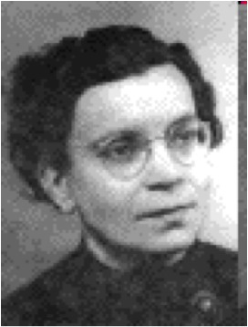
http://www.eskimo.com/~recall/bleed/0619.htm (Accessed 8/5/11)
Adão, Luisa (1914-1999) - Portuguese anarchist and nurse, she was the partner of anarchist Acácio Tomás de Aquino (Ephéméride anarchiste http://www.ephemanar.net/novembre09.html#aquino (Accessed 7/6/11)
Jane Addams
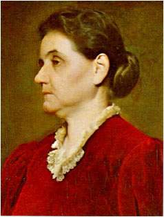
http://newlearningonline.com/new-learning/chapter-9-learning-communities-at-work/jane-addams-hull-house/ (Accessed 8/5/11)
Addams, Jane (1860-1935) - founder of Hull House in Chicago, she was also one of the founders of the Women’s Trade Union League, a suffrage and pacifist leader, and the first American woman awarded the Nobel Peace Prize; Adams supported anarchists Abraham Isaak, Lucy Parsons, Fanya Baron and others when they were jailed in Chicago; she welcomed EG’s mentor (and former prince) Peter Kropotkin to Hull House but not EG, leading Goldman to comment that “I did not happen to be known to Miss Addams as a princess” (LML 375-6; AV 479 fn 33; Falk II 507; Ashbaugh).
Weda Cook Addicks
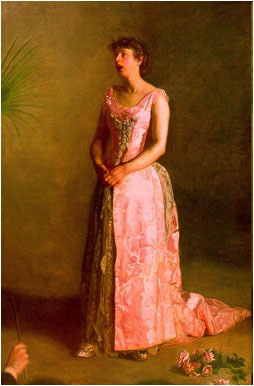
“The Concert Singer,” a portrait by Thomas Eakins, painted 1890-1892, now in the Philadelphia Museum of Art http://teachingcompany.12.forumer.com/a/21-the-last-yearsquotand-who-is-eakinsquot_post2359.html (Accessed 8/5/11)
Addicks, Weda Cook (nd) - Philadelphia socialist and singer, she supported EG’s free speech fight; she subscribed to Mother Earth (ME 4.9 (11/09): 296.) Described as “a prominent Mayflower descendent,” she commented, “I have met Emma Goldman and she is a great, sincere soul, a great spirit that this country needs” (Fels, in Inglis 25).
Hilda Kovner Adel
Adel, Hilda Kovner (1892-1984) - New York anarchist, member of Frayhayt group, she denounced U.S. intervention in the U.S.S.R. and organized support for political prisoners; EG helped her arrange an abortion the day EG was deported; she was the companion of Sam Adel. (LML 699; AV 60).
Mrs. Fanny Adler
Adler, Fanny Mrs. (nd) - wrote a spirited letter “The Worker’s Wife” to the editors of the German-language labor paper Fackel (the Sunday edition of the Chicagoer Arbeiter-Zeitung) in 1887, defending the respectability of workers’ families in which “disgraceful acts committed by the capitalists and monopolists against the workers” are discussed (K & J 296-298).
Dr. Mary Aikin
Aikin, Mary Dr. (nd) - founding member of the Women’s National Liberal Union, (a “radical women’s society” organized by Matilda Gage) (Marsh 60), she wrote “Epistolary Echoes,” The Alarm 1: 27 (Sept 15, 1888); also wrote toTheBeacon, questioning laissez faire economics and advocating revolution (Longa 27).
Inés Ajuria de la Torre

http://www.estelnegre.org/fotos/ajuria.jpg (Accessed 8/5/11)
Ajuria de la Torre, Inés (1920-2007) - anarchosyndicalist from Guernica, after the crushing of the revolution she went into exile in France and Uruguay, returning to Spain after Franco’s death to help rebuild the CNT. (Anarcofemérides
Zoë Akins
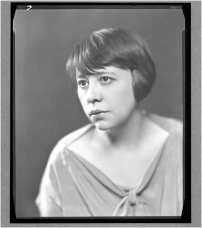
http://upload.wikimedia.org/wikipedia/en/c/cc/Zo%C3%AB_Akins.jpg (Accessed 8/5/11)
{kind=link}
Akins, Zoe (1886-1958) - American poet and playwright, she won a Pulitzer Prize for Drama in 1935; EG recalled her as “exotic and vivacious…a strange American product,” a young Bohemian from a conservative well-to-do family who visited EG frequently in her hotel when she was in St. Louis (LML 477).
Mollie Albert
Albert, Mollie (1892-??) - New York anarchist, she was active in the Ferrer Center, and lived at Stelton, Mohegan and Sunrise Cooperative colonies (AV 254-256).
Mrs. Allan
Mrs. Allen (nd) - Involved with EG’s drama lectures in Montreal, she is mentioned in Marjorie Goldstein’s letter to EG, June 7, 1935 (Microfilm reel 34).
Gracie Allen
Allen, Gracie (nd) - Teacher at Home Colony, daughter of Sylvia Allen (AV 293).
Sylvia Allen
Allen, Sylvia (nd) - Teacher at Home Colony, mother of Gracie Allen (AV 295)
Aurora Alleva
Alleva, Aurora (??-1992) - Italian American anarchist from Philadelphia, she participated in the campaign in the 1930s to stop the deportation of anarchist Dominico Sallitto, whom she later married (Zimmer 413).
Dolores Almavivi
Almavivi, Dolores (nd) – contributed “Seen at the Centennial Exposition,” The Dawn 1: 8 (September 1922). The Dawn was a monthly publication edited by Eugene Travaglio and produced in Seattle, Washington (Longa 43).
Maria Rosa Alorda Gràcia

http://anarcoefemerides.balearweb.net/page/21 (Accessed 8/5/11)
Alorda Gràcia, Maria Rosa (1918-2006) – Spanish anarchist, she was active in the libertarian youth organization and volunteered with the Ferrer column during the revolution. Upon becoming pregnant with her daughter Blanca, she returned to Barcelona and worked in a munitions factory. During the Franco era, she was part of the clandestine antifascist network of the CNT. She was the companion of anarchist Alfonso Cruzado Sánchez. (Anarcofemèrides http://anarcoefemerides.balearweb.net/page/21 (Accessed 7/30/11).
Mary R. Alspaugh
Alspaugh, Mary R. (nd) - Wrote about United Mine Workers for International Socialist Review (ISR): “The Reward of the Miners,” (ISR 15.10 (4/15): 603-605); “Between Meals in a Miner’s Cabin,” (ISR 15.11 (5/15):666-668).The International Socialist Review represented the left wing of the Socialist movement and was friendly to the I.W.W. and anarchism.
Sadie American
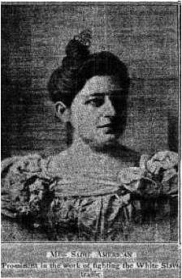
http://www.gutenberg.org/files/12226/12226-h/images/015.jpg (Accessed 8/5/11)
American, Sadie (1862-1944) – a leader in Jewish philanthropic organizations, she helped found the National Council of Jewish women; she worked with immigrants in New York and Chicago and supported many Progressive reforms. She helped establish the field of visual sociology and published two articles in the American Journal of Sociology. She subscribed to Mother Earth (Weeber; Rogow).
Sarah E. Ames
Ames, Sarah E. (nd) - Chicago anarchist, member of the International Working person’s Association (IWPA) and a leader of the Knights of Labor Women’s Assembly, she was active in the defense and amnesty campaigns for the Haymarket anarchists(Ashbaugh)
Marie-Edele Anciaux
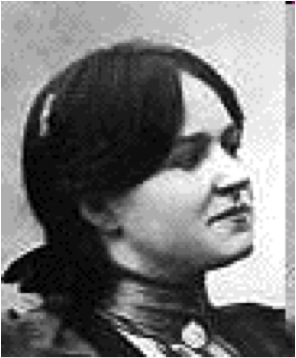
http://eng.anarchopedia.org/Marie-Adele_Anciaux (Accessed 7/6/11)
Anciaux, Marie-Edele (1887-1983) – French anarchist and educator, she taught at Sébastien Faure’s anarchist school La Ruche, which EG visited. She and her companion Steven Mac Say were also animal rights (anti-vivisection) activists.
Margaret Anderson
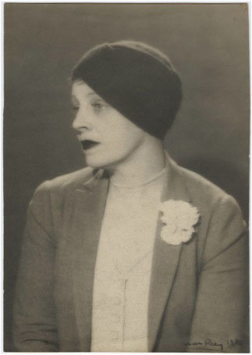
http://highway55.library.yale.edu/YCALMSS/size3/D0069/1080749.jpg (Accessed 8/5/11)
Anderson, Margaret (1886-1973) – Bohemian rebel, friend and admirer of EG, editor of avant-garde The Little Magazine; she contributed to Mother Earth’s 10th anniversary edition and visited EG at BonEsprit; she turned away from anarchism in her later years (M & M 35; Kissack 159; Marsh 40-41). [pic]
Eliza Frances Andrews
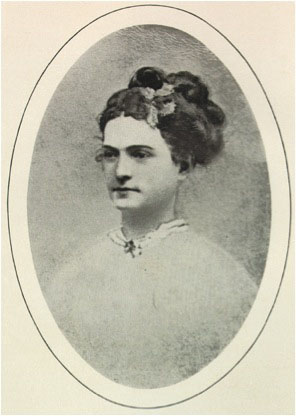
http://docsouth.unc.edu/fpn/andrews/andrfpa.gif (Accessed 8/5/11)
Andrews, Eliza Frances (1940-1981) – feminist, author, and scientist, she wrote about militarism for ISR: “An International Boycott?” (>ISR 16.7 (1/16): 481); she also wrote “Socialism in the Plant World,” (ISR 17.1 (7/16): 18-19)
Gabriella Antolini
Antolini, Gabriella (1899-1984) – a young anarchist arrested transporting dynamite, she spent 1 ½ yrs in prison; in Jefferson City Prison, Antolini, EG, and Kate Richards O’Hare were known as “the trinity” (LML 677); she also acted in plays in Chicago and Detroit (AV 108, 134, 180). Iranian artist Siah Armajani created a wood and steel painted sculpture called “Gazebo for Two Anarchists: Gabriella Antolini and Alberto Antolini” (1992) on display at the Storm King Art Center, New Windsor, NY.
Placida Aranda Yus
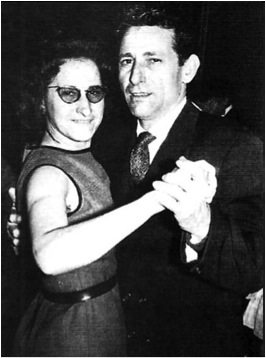
http://anarcoefemerides.balearweb.net/page/10 (Accessed 8/5/11)
Aranda Yus, Placida (nd) – Spanish anarchist, wife of anarchist José Luis Yagüe Sos; her husband attempted to expel her and other militants from the CNT in exile, but evidently did not succeed. (Anarcofemèrides http://anarcoefemerides.balearweb.net/page/10 (Accessed 7/29/11).
Helen Archdale
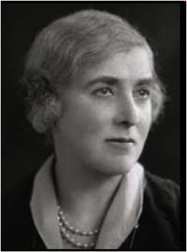
http://www.spartacus.schoolnet.co.uk/Warchdale.htm (Accessed 8/5/11)
Archdale, Helen (1976-1949)– militant British suffragist, she was a member of the Women’s Social and Political Union, wrote for The Suffragette, and edited Time and Tide. She was the lover of Lady Rhondda (Margaret Haig Thomas). She and EG corresponded (Spartacus Educational
Pura Arcos
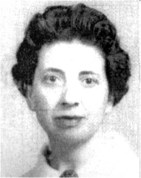
http://anarcoefemerides.balearweb.net/page/30 (Accessed 8/5/11)
Arcos, Pura [Purification Pérez Benevant] (1919-1995) – Barcelona anarchist, she attended a modern school and was active in Mujeres Libres. She wrote The Modern School Movement:> Historical and Personal Notes of the Ferrer Schools in Spain(Croton, 1990). Her partner was Federico Arcos Anarcofemèrides http://anarcoefemerides.balearweb.net/page/4 (Accessed 7/29/11).
Dr. Alma C. Arnold
Arnold, Dr. Alma C. (nd) –born in Germany, she attended the American College of Chiropractic in Cedar Rapids, Iowa, and lived most of her life in Washington D.C. and New York City. She was a medical reformer and “drugless physician," founder and president of The Healtharium, Washington, D.C. and was targeted by the American Medical Association. She supported women’s suffrage and was a member of the Women’s Press Club and the Anti-Vivisection League. She loved horseback riding. She subscribed to Mother Earth. She was married to C.D. Arnold (Leonard, 45).
Virginia Arnold
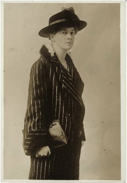
http://memory.loc.gov/service/mss/mnwp/147/147008r.jpg (Accessed 8/5/11)
Arnold, Virginia (nd) – probably the same Virginia Arnold, originally from North Carolina, who studied at George Washington and Columbia University, then moved to Washington D.C. and served as the executive director of the National Women’s Party;she served three days in jail for picketing the White House to demand votes for women. She subscribed to Mother Earth (“Photographs from the Records”).
Mrs. Aron
Aron, Mrs. (nd) - helped EG with her Montreal lectures; she is mentioned in EG’s letter to AB, Feb 5, 1935 (Microfilm reel 33)
Jessie Ashley
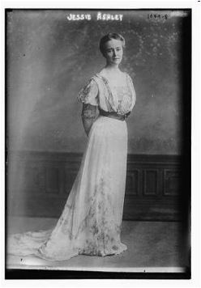
http://popartmachine.com/artwork/LOC+1400872/0/Jessie-Ashley-LC-B2--1049-8%5BP&P%5DREPRODUCTION...-painting-artwork-print.jpg (Accessed 8/5/11)
Ashley, Jessie (1861-1919) – one of the “radical rich,” she was a member of the editorial board of The Birth Control Review, a Socialist Party orator, a suffragist, a member of the No Conscription League, and a radical lawyer representing striking workers; EG called her friend and mourned her death as one who “towers mountains above” other women they knew (Feb 13, 1919 letter from EG in Jefferson City prison to Stella Ballantine in New York) (reel 11); Ashley was the companion of Big Bill Haywood (Stansell 238; LML 676). She was a member of the New York Publicity Committee for the Alexander Berkman San Francisco Labor Defense. She subscribed to Mother Earth (Inglis 47).
Rebecca Beck August
August, Rebecca Beck (nd) – Chicago anarchist, she worked at Hull House, and later became an I.W.W. organizer in Seattle; she lived at Home Colony (AV 332-333).
Sarah Aulafsky
Aulafsky, Sarah (nd) – helped organize EG’s talks in Chicago (ME 10.4 (6/15): 155)
Kate Austin
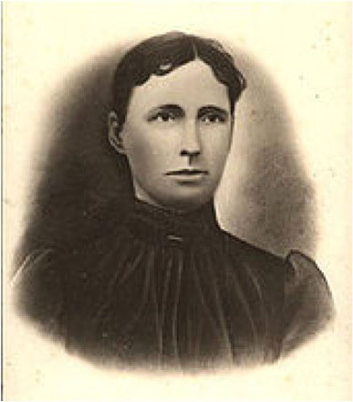
http://www.freebase.com/view/en/womens_rights/-/base/activism/activism_issue/activists (Accessed 8/5/11)
Austin, Kate – anarchist and feminist; she and her husband Sam arranged EG’s Missouri lectures; she wrote a paper on free love for the 1900 Paris Conference of anarchists; like EG, also defended Czolgosz’s motives, if not his actions, in hisattentat against McKinley. She wrote for Firebrand, Free Society, Lucifer, The Light Bearer, and Discontent. At her death, EG mourned her as “the most daring, courageous voice among the women of America.”(LML 331) Sam took EG horseback riding across the fields of their farm. (Falk II 509; LML 242; Longa 49, 89).
Sonya Avrutskaya
Avrutskaya, Sonya (nd) – “a very sympathetic local comrade” in the Ukraine (LML 829).
Sally Axelrod
Axelrod, Sally (nd) – supervised children’s dormitory at Stelton Colony; she set up the “Work and Play Center” when the school was closed (AV 513 fn 423; MSM 346).
Ayer, Mrs. W.B
Ayer, Mrs. W.B. she subscribed to Mother Earth. She was an officer in the Consumer League of Oregon, which conducted a survey of working women’s conditions in Portland, January 1913; she was also active in creating and running playgrounds in the Portland area in 1910. She was a champion golfer. (Moore and Moore, 20; Consumer League of Oregon (Accessed 6/24/11); Portland Parks and Recreation (Accessed 6/24/11).
Back to top
B ----
Millie and Max Baginski
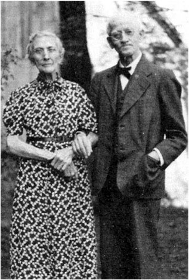
www.estelnegre.org/documents/baginski/baginski.html Accessed 8/6/11
Baginski, Millie (nd) – friend of EG, she was an anarchist individualist who wrote for Liberty; she was the wife of EG’s close friend Max Baginski, and sister of George Schumm, the printer for Liberty (Falk II162 fn 3).
Helen Tufts Bailie
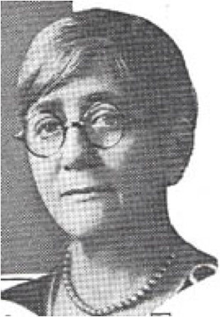
http://womhist.alexanderstreet.com/milit/doc20.htm Accessed 8/6/11
Bailie, Helen Tufts (1874-1962) – friend of EG, anarchist involved in the Modern School movement; she served on Francisco Ferrer Association committee to produce a booklet on Ferrer; with Hippolyte Havel and Leonard Abbott, she wrote ‘TheBackground of Francisco Ferrer’s Assassination,” for Man! 1: 9-10 (Sept-Oct 1934) (Longa 168); she was married to William Bailie, the biographer of Josiah Warren (AV 14-15; MSM 46).
Mrs. Ed Baily
Baily, Mrs. Ed (nd) – helped organize EG’s talks in Spokane (ME 7.5 7/12).
Estelle Baker
Baker, Estelle (nd) - wrote “The Molokai Leper Colony,” ISR 14.7 (1/14): 411) She wrote a novel on prostitution entitled The Rose Door (1911).
Josephine Baker
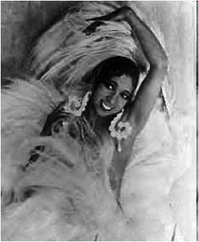
http://silentladies.com/Baker/pages/Baker031.html (Accessed 8/6/11)
Baker, Josephine (1906-1975)– famous dancer and singer, she was recruited by Mabel Crouch to the committee that enabled EG to return to the U.S. for a 90-day tour in 1934 (Frankel 109).
Angelica Balabanoff
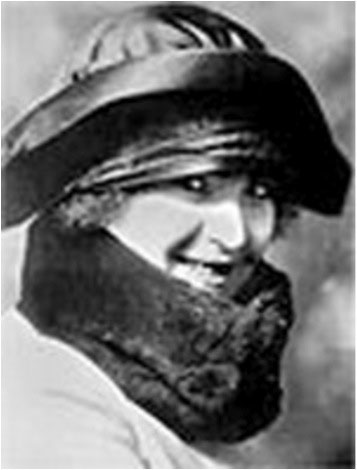
http://dic.academic.ru/dic.nsf/ruwiki/798452 (Accessed 8/6/11)
Balabanoff, Angelica (1878-1965) – friend and correspondent with EG, she was the secretary of the Communist International, and later rejected the Bolsheviks; “ill, disillusioned, and broken,” (LML 898) she told EG of the corruption in Bolshevik ranks; she later came to the U.S. and was a member of the League for Mutual Aid; she visited the Mohegan colony (AV 280, 504 fn 319, LAEG 302).
Emily Greene Balch
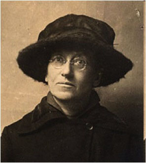
http://library.thinkquest.org/05aug/00160/l_emilygreenebalch.html (Accessed 8/6/11).
Balch, Emily Greene (1867-1961) – economist, suffragist, and anti-war activist; she helped organize the Women’s International League for Peace and Freedom (WILPF) and was an editor for The Nation; with EG’s friends Roger Baldwin and Rebecca Shelley, she was a member of the organizing committee of the People’s Council for Democracy and Peace in 1918. She collaborated with Alice Hamilton and Jane Addams to write Women at the Hague: The International Congress of Women and Its Results (1915). She won the Nobel Peace Prize in 1946 (Hillquit 172).
Mary Baldini
Baldini, Mary (nd) – arrested in Milwaukee following a police assault on an anarchist meeting, she was tried and convicted with 10 men for the bombing of a police station, and sentenced to 25 years; the state took her 5 year old child, and would not allow relatives to keep the child (LML 640). EG wrote to her friend Kitty Beck about this “most hideous situation in Milwaukee” (1/187/1918; Microfilm reel 11].
Mrs. J. E. Ball
Ball, Mrs. J. E. (nd) – with Elmina D. Slenker, wrote “Marrying an Infidel,” The Kansas Liberal 2:3 (Nov 1881) and 2:7 (Mar 1882) (Longa 117).
Stella Ballantine (on left)
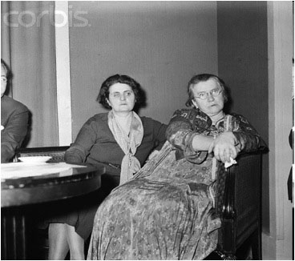
Bettman/CORBIS, February 2, 1934, New York City http://www.corbisimages.com/Enlargement/BE068161.html (Accessed 8/6/11)
Ballantine, Stella Comyn (Cominsky) (nd) – EG’s beloved niece, secretary, lifelong supporter, Stella was a stalwart activist and a member of the No-Conscription League (MSM 280 fn 980).
Ida A. Ballous
Ballous, Ida A. (nd) – contributed “Education, Not Politics nor Revolution” to Fair Play 54 (Sept 28, 1889) (Longa 62)
Maria Bambace
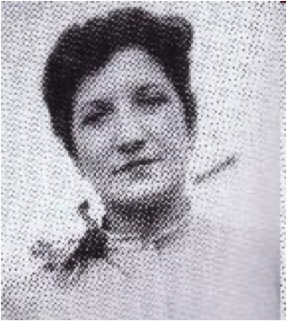
http://www.italianrap.com/italam/heroes/angela_bambace.html (Accessed 87/5/11)
Bambace, Maria (1898-1975) – Italian American labor organizer, she helped organize garment workers, including the 1919 Dressmakers and Waistmakers strike in New York City and the 1932 Amagamated Clothing Workers strike in Elizabeth, New Jersey.(“Italian American History;” Guglielmo, Living the Rev, 155, 189, 198).
Sophie Bannister
Bannister, Sophie (nd) – anarchist at Mohegan Colony (AV 258).
Maria Barbieri
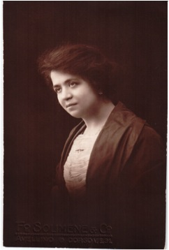
http://www.avellinesi.it/barbier.htm (Accessed 8/5/11)
Barbieri, Maria (nd) – Italian-American anarchist orator, she wrote for La Question Socialeand helped organize the silk workers in Patterson, New Jersey (Guglielmo, “Donne Sovversiva” (Accessed 7/3/11).
Sophie Bardina
Bardina, Sophie (1853-1883) – Russian anarchist who defended the attentat against the Tsar, saying that “for us, anarchy does not signify disorder, but harmony in all social relations; for us, anarchy is nothing but the negation of oppressions which stifle the development of free societies” (Butterworth 171).
Cristina Ross Barker
Barker, Cristina Ross (nd) – corresponded with EG about organizing EG’s Canadian lectures, Aug and Aug 21, 1935 (Microfilm reel 35).
Elsa Barker
Barker, Elsa (nd) – contributed poetry to Mother Earth (“The Midnight Lunch Room,” ME 4.5 (7/09): 138).
Djuna Barnes
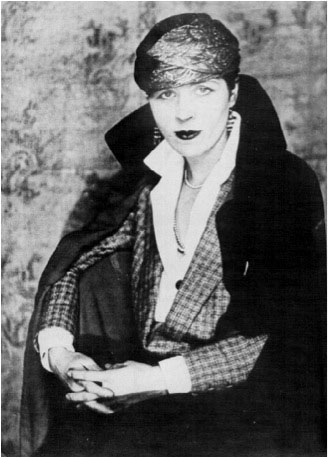
http://www.arlindo-correia.com/120605.html (Accessed 8/6/11)
Barnes, Djuna (1892-1982) – American writer and reporter; she wrote plays for the Provincetown Players and was a friend of EG’s friend Fitzie Fitzgerald; EG dismissed her as petty and self-centered in her March 23, 1935 letter to Emily Holmes Coleman (Microfilm reel 35) (Stansell 153; AV 492 fn 147; D & D 86).
Aline Barnsdale
Barnsdale, Aline (1882-1946) – feminist, bohemian, and friend of EG, she contributed money to the campaign to free anarchist Tom Mooney and was prohibited from leaving the U.S. for Russia due to her affiliations with EG and AB. She was an oil heiress, one of the radical rich, as well as the client and lover of Frank Lloyd Wright, who built her famous home Hollyhock House in Los Angeles (LML 707-708, 772-773; Starr, 125, 138.)
Anna Baron
Baron, Anna (nd) - secretary for Mother Earth, also a subscriber (LML 542, 700).
Fanny Baron
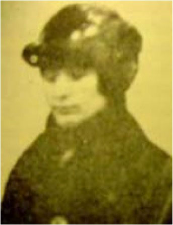
http://libcom.org/history/baron-fanya-nee-anisimovna-aka-fanny-baron-188-1921 (Accessed 8/6/11)
Baron, Fanya (Fanny) (188?-1921) – anarchist affiliated with EG’s work in the U.S.; she went to Russia and was executed by the Cheka for bombing Communist Party headquarters; EG wrote in LML, “Our dear, splendid Fanya, radiant with life and love, unswerving in her consecration to her ideals” (921).
Rose Baron
Baron, Rose (nd) – member of publicity committee for “Appeal of EG, AB, Louis Kramer and Morris Becker”; Dec 6, 1917 letter from EG in New York to Agnes Inglis in Michigan lists Baron as the Secretary of the Relief Society for Russian Political Exiles; she subscribed to Mother Earth (Microfilm reel 10).
Anetta Baronio
Baronio, Anetta (nd) – one of 5 sisters in the Baronio family; along with brothers Egisto and Abele, all were active in the anarchist movement (Zimmer 132; Guglielmo, Living the Rev, 136).
Divina Baronio
Baronio, Divinaone (nd) - One of 5 sisters in the Baronio family; along with brothers Egisto and Abele, all were active in the anarchist movement (Zimmer 132; Guglielmo, Living the Rev, 136).
Jennie Baronio
Baronio, Jennie (nd) - one of 5 sisters in the Baronio family; along with brothers Egisto and Abele, all were active in the anarchist movement (Zimmer 132; Guglielmo, the Rev, 136).
Serafina Baronio
Baronio, Serafina (nd) - one of 5 sisters in the Baronio family; along with brothers Egisto and Abele, all were active in the anarchist movement (Zimmer 132; Guglielmo, Living the Rev, 136).
Fannie Barrett
Barrett, Fannie (nd) – wrote EG to tell her she joined the League Against War and Fascism; she was mentioned in July 25, 1935 letter from EG to Dorothy Rogers (Microfilm reel 35).
Minna Barron
Barron, Minna (nd) – member of Women’s Aid Society in Montreal, a group organized by EG to raise money for the Russian Political Prisoners Fund (LML 992).
Leonara Barry
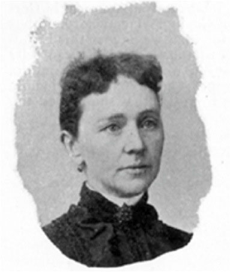
http://63.118.56.3/sws/wod/lb_barry.html (Accessed 8/6/11)
Barry, Leonara M. (1849-1930) – the national women’s organizer for the Knights of Labor, she wrote for Hugh O. Pentecost’s journal Twentieth Century (Longa 255).
Vera Bayer
Bayer, Vera (nd) – anarchist, reader of Fraye Arbeter Shtime; she was the lover of David Kaplan (Zimmer117). Chaim Weinberg recalls her in his autobiography (57, 66-68).
Sylvia Beach
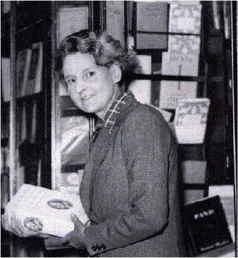
http://records.viu.ca/~lanes/english/hemngway/beach.htm (Accessed 8/6/11)
Beach, Sylvia (1887-1962) – American publisher and bookstore owner in Paris, she was a leading figure in the literary and political expatriate community (Microfilm reels 13, 14 and 25). EG corresponded with her in the 1920s concerning EG’s and AB’s publications as well as their mutual interest in books.
Nena Becchetti
Becchetti, Nena (nd) – an Italian immigrant writer in Jessup, PA, she wrote La Figlia dell’Anarchico (The Anarchist’s Daughter), a play about workers’ suffering and hope, that was produced by anarchist theatrical groups (Guglielmo,173).
Katherine (Kitty) Seaman Beck
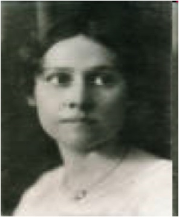
http://historylosgatos.org/cdm4/browse.php?CISOROOT=/Rondone (Accessed 8/5/11)
Beck, Katherine (Kitty) Seaman (1885-1933) – helped organize EG’s lectures in Portland; she was a friend and secretary of Charles Erskine Scott Wood, a Portland lawyer and subscriber to Mother Earth; EG called her “the most beautiful spirit among all my women friends,” in Sept 5 – 7, 1919, letter to Stella from Jefferson City Prison (Microfilm reel 11) (Falk II 332-333, fn 1, fn 4; LML 710).
Eva Bein
Bein, Eva (nd) – attended modern school at the Ferrer Center in New York and Stelton Colony, later became a social studies teacher; she referred to her mother as a radical (AV 234).
Lizzie Turner Bell
Bell, Lizzie Turner (nd) – London anarchist who settled in Los Angeles; EG’s and de Cleyre’s friend, she was the sister of British anarchist John Turner and wife of EG’s friend, anarchist Tom Bell (AV29-30).When the postal officials took away the mail privileges of Berkman’s journal The Blast, the Bell children went on their bicycles to various local post offices to mail out small batches of the paper (Zimmer 272).
Josephine Bell
Bell, Josephine (nd) – published a poem in The Masses entitled “A Tribute” to EG and AB after their conviction under the Espionage Law; she was prosecuted under the Espionage Law and defended by famous socialist lawyer Morris Hillquit(Hillquit, 221-224).
Mary Bennett
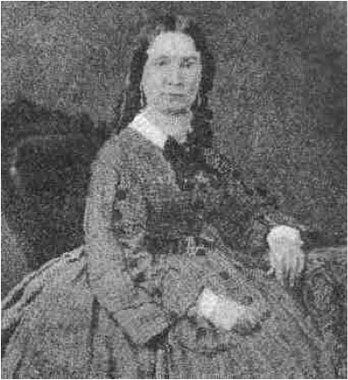
Bennett, Mary (1819-1898) –co-founder of the free-thought journal The Truth Seeker, publisher from 1873-1882 (www.truthseeker.com)
Naomi Librescu Bercovici
Bercovici, Naomi (nd) – Hungarian-born sculptor, she organized a libertarian nursery in New York. She subscribed to Mother Earth. She was the wife of writer Konrad Bercovici; their children Hyperion, Gorky and Révolte attended the ModernSchool in New York. She was the sister of Dr. Benzion Liber. Artist Manuel Komroff recalled that, after a lecture at the Ferrer Center on “Havelock Ellis, Sex, and Society” by Will Durant, Naomi Bercovici stood up and, in a thick Jewish accent, said,“Mr. Durant, I don’t want to ask a question, and I don’t want to make a discussion, but I myself have personally been in the sexual movement for fifteen years and I see no progress” (AV 201).
Révolte "Rada" Bercovici
Bercovici, Révolte "Rada" (1907-1993)– student at Modern School in New York; daughter of Naomi Bercovici (AV 197-198). In Paul Avrich’s 1977 interview with her, she remembered EG at the Ferrer Center: “She was a lovely person, but wasn’tinterested in kids. She much preferred lecturing. But I liked listening to her. She was full of fire” (AV 198).
Sara Berenguer Laosa
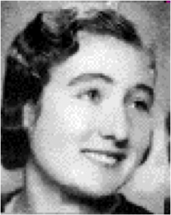
http://recollectionbooks.com/bleed/Encyclopedia/misc/@fotos.htm (Accessed 8/19/11)
Berenguer Laosa, Sara (1919-2010) – Spanish anarchist and poet active in Mujeres Libres, her home became a meeting place for anarchists during their exile in occupied France (Mujeres en la República, http://www.ciudaddemujeres.com/mujeres/Republica/Berenguer.htm (Accessed 7/6/11).
Mary Berenson
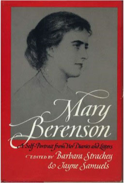
http://i43.tower.com/images/mm111740886/mary-berenson-paperback-cover-art.pjg (Accessed 8/14/11)
Berenson, Mary – (1864-1945) – she was an art historian, and ran a salon in which she gathered together artists and intellectuals; she was a friend of EG’s friend Hutchins Hapgood (Kissack 25).
Louise Berger (third from left)
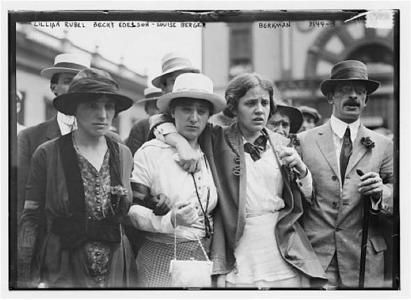
http://luirig.altervista.org/naturaitaliana/viewpics.php?title=Lilium+superbum (Accessed 8/6/11)
Berger, Louise (~1890-1920) – New York based anarchist orator, she raised funds for the Anarchist Red Cross and worked for the Caplan/Schmidt defense; her apartment was the site of the Lexington Ave explosion. EG entrusted her with their appeal for support for Mooney and Billings, calling her “our close and most dependable friend” (LML 597). She returned to Russia after the revolution, and was either killed by the Bolsheviks or died of typhus (AV 218,212).
Gilana Berneri
{kind=link}
http://libcom.org/history/berneri-giliana-1919-1998 (Accessed 8/5/11)
Berneri, Gilana (1919-1998) – anarchist and physician, she was the daughter of Giovanna and sister of Marie Louise; she lived most of her life in Paris, where she wrote for the anarchist paper Le Libertaire and participated in the Sacco and Vanzetti group in the Latin Quarter (Heath, “Berneri, Gilana”).
Giovanna Caleffi Berneri

http://libcom.org/history/caleffi-giovanina-1897-1962
Berneri, Giovanna Caleffi (1897-1962) – Italian anarchist, teacher, and writer, she wrote for several anarchist journals, was active in anti-fascist resistance during World WarII, and helped reestablish the anarchist movement in Italy after that war. She published an edition of the writings of her husband Camillo Berneri, entitled Pensieri e Battaglie (Thought and Struggle), with a preface by EG. Giovanna was the mother of Gilana and Marie Louise (Heath, “Caleffi, Giovanina G”).
Marie Louise Berneri

http://libcom.org/library/constructive-policy-versus-destructive-war-marie-louise-berneri
Berneri, Marie Louise (1918-1949) – Italian anarchist writer and editor for Freedom, daughter of Giovanna and Camillo Berneri; she also wrote for the anarchist paperWar Commentary (The Daily Bleed http://recollectionbooks.com/bleed/gallery/galleryindex.htm#b (Accessed 7/3/11).
Ethel Bernstein
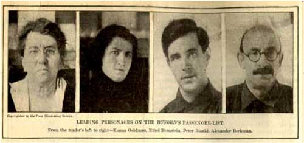
http://en.wikipedia.org/wiki/USAT_Buford (Accessed 8611)
Bernstein, Ethel – “our old friend” (~1898-??) - (LML 852), she was deported on the Buford with EG and AB; a letter from exile was published in the Anarchist Soviet Bulletin [spelled Berstein] (AV 342);Longa 26).She was part of the Frayhayt group and was the companion of Samuel Lipman (Polenberg).
Rose Bernstein
Bernstein, Rose (nd) – friend and supporter in Montreal, “the only comrade in this city [Montreal] who does work” said EG in a letter to Jeanne Levey on Jan 13, 1935 (Microfilm reel 33). She worked with EG to raise money for the Russian PoliticalPrisoners Fund; she was married to Meyer Bernstein (LML 992; M & M 43).
Sarraine Berreitter
Berreitter, Sarraine (nd) – Proletarian Party activist, Chicago soap boxer, she was a regular speaker at the anarchist-oriented Dil Pickle Club (Rosemont 30).
Germain Berton (Center)
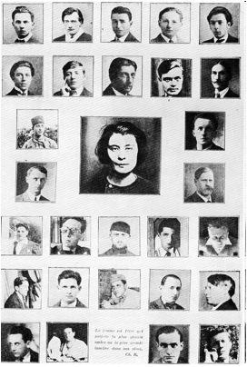
http://serbianballerinasdancewithmachineguns.com/post/746685532/homage-to-claude-cahun-and-germaine-berton
Berton, Germain (1902-1924) – French anarchist individualist, she assassinated ultra-conservative Marius Plateau, the leader of a group of street thugs called “Camelots du roi,” who was associated with the far-right journal Action Francaise; shetried to execute other right-wing men, but only one succeeded only in killing Plateau. Two years later, the radical art publication La Revolution Surrealiste recognized her act and her subsequent suicide with this photomontage; it was probablyassembled by Louis Aragon and Pierre Naville, with portraits of provided by Man Ray (Bate, 45-54).
Julia Bertrand
Bertrand, Julia (1877-1960) – French anarchist and feminist, she lived at Sébastian Faure’s colony La Ruche; she was a delegate to the International Congress of FreeThinkers in Paris in 1905; she wrote for the feminist publication "Lafemme affranchie" and the anarchist newspaper "La vrille" (The DailyBleed) http://recollectionbooks.com/bleed/Encyclopedia/BertrandJulia.htm (Accessed 7/3/11).
Annie Besant
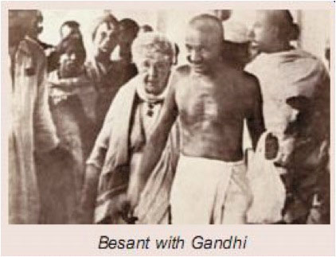
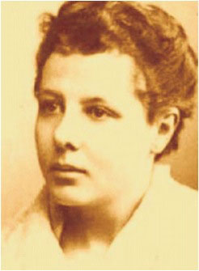
http://vaccineliberationarmy.com/wp-content/uploads/2010/06/besant-young.jpg; http://upload.wikimedia.org/wikipedia/en/e/ed/Gandhi_besant_madras1921.jpg(Accessed 8/6/11)
{kind=link}
Besant, Annie (1847-1933) – British labor activist, birth control reformer, and supporter of Indian nationalism, she edited an eclectic free-thought journal Our Corner, which was sometimes picked up in Benjamin Tucker’sLiberty. With Oscar Wilde, George Bernard Shaw and others, she signed a petition to the Governor of Illinois, Richard Oglesby, to commute the death sentence of the two remaining Haymarket anarchists (Kissack 47-48; McElroy,Lib 155).
Evangeline Bessenberg
Bessenberg, Evangeline (nd) – helped organize EG’s talks in Indianapolis (ME 5.12 (2/11): 389).
Louise Sarah Bevington
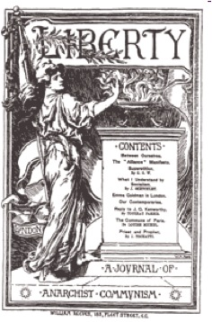
http://libcom.org/history/liberty-journal-anarchist-communism
Bevington, Louise Sarah (1845-1895) – British anarchist, she and James Tochatti founded the journal Liberty: A Journal of Communism; she wrote articles and pamphlets, including “Common Sense Country” (1896), “Why I am an Expropriationist”(1894), “Liberty Lyrics,” (1895), and “An Anarchist Manifesto” (1895) (“Bevington, Louisa Sarah,” libcom.org http://libcom.org/history/bevington-louisa-sarah-1845-1895 (Accessed 7/6/11).
Martha Biegler
Biegler, Martha (??-1937) – Chicago radical, soap boxer, she was connected to the I.W.W. and active in the Dil Pickle Club (Rosemont 13, 31).
Yetta Bienenfeld
Bienenfeld, Yetta (nd) – helped organize EG’s lectures in Detroit; she taught natural history at the Detroit Modern School (ME 9.11 1/15; AV 196; MSM 66).
Kate Billings
Billings, Kate (nd) – contributed to Lois Waisbrooker’s Foundation Principles (Longa 75).
Zelmira Binazzi
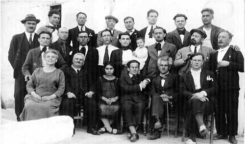
http://www.estelnegre.org/fotos/lipari1927.jpg (Accessed 8/6/11)
Binazzi, Zelmira [Petroni Carlotta Zelmira Speroni] (??-1930)– Italian anarchist, she and her partner Pasquale Binazzi published the weekly paper Il Libertario, which played an important role in labor struggles until it was eliminated by the fascists in 1922 (The Daily Bleedhttp://recollectionbooks.com/bleed/1224.htm; Anarcofemèrides http://anarcoefemerides.balearweb.net/post/95277 (Accessed 8/1/11).
Eva Bittelman
Bittelman, Eva (nd) – New York anarchist who later became a communist (AV 210).
Hortensia Black
Black, Hortensia (nd) – originally opposed to her husband’s defense of the Haymarket anarchists, she later worked closely with him in the trial and subsequent clemency movement; he was the chief defense counsel William P. Black. (Ashbaugh)
Mary Black
Black, Mary [Mrs. Robert C.] –volunteer with American Society for the Control of Cancer, she was the wife of wealthy jeweler. She subscribed to Mother Earth (http://www.smokershistory.com/ASCC.htm (Accessed 7/3/11).
Bertha Blackman
Blackman, Bertha (nd) – sent her children to the Modern School at Stelton Colony (AV 250).
Alice Stone Blackwell
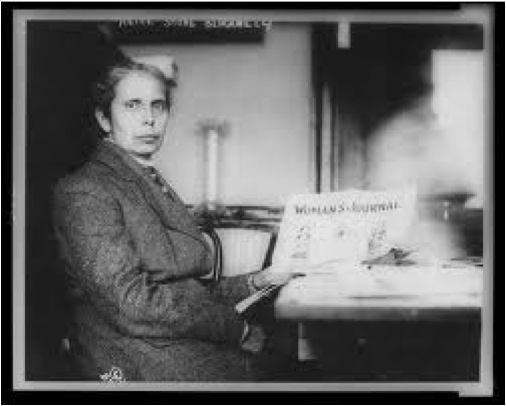
http://americancivilwar.com/women/Womens_Suffrage/alice_stone_blackwell.jpg (Accessed 8/6/11)
{kind=link}
Blackwell, Alice Stone (1857-1950) – EG’s friend, suffragist, orator, and reformer; she edited Woman’s Journal and wrote for Mother Earth; her essay “The Post Office and Free Speech” was reprinted in Lucifer, The Light Bearer 1046 (Aug 17, 1905). Blackwell worked with EG to get help for Addie, a young black prisoner who needed a job in order to be paroled; she subscribed to Mother Earth (LML661, 692; Falk II 511; Longa 155). She joined the committee opposing the deportation of two San Francisco anarchists, Ferraro and Sallitto (Zimmer 412).
Lallah Blanpied
Blanpied, Lallah (nd) – director of the Mohegan Modern School (AV 257; MSM 335).
Mrs. H.A. Blockberger
Blockberger, Mrs. H.A. (nd) – she subscribed to Mother Earth. This is probably the same Mrs. H.A. Blockberger who was a member of the Professional Women’s Club in San Francisco (“The Woman’s Clubdom”).
Ella Reeve Bloor
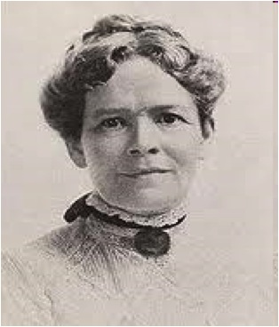
http://www.marxists.org/glossary/people/b/pics/bloore.jpg (Accessed 8/6/11)
{kind=link}
Bloor, Ella Reeve (1862-1951) – Socialist labor organizer; EG recalled that she “had always shown affection for me and interest in my work” (LML 903); but EG later dismissed her as one of “the smaller fry among [Haywood’s] comrades" who supported the Bolsheviks after AB and EG turned against them (LML 915).
Minnie Bluestein
Bluestein, Minnie – taught elementary school at Sunrise Colony (AV 298).
Esther Bluestein
Bluestein, Esther (nd) – Russian-American anarchist, active in the anarchist circles of the ILGWU and the Radical Library Group in Philadelphia; she was the wife of Mendel (Max) and the mother of Minnie and Abe, who attended the Modern School atStelton ( AV 436; http://en.wikipedia.org/wiki/Abe_Bluestein) (Accessed 8/6/11).
Selma Cohen Bluestein
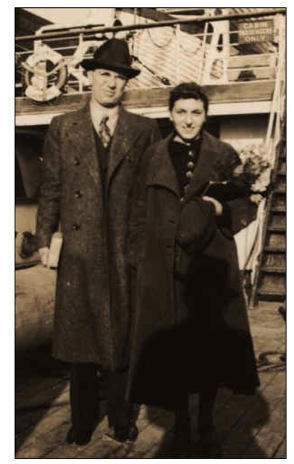
http://www.eskimo.com/~recall/bleed/0401.htm (Accessed 7/3/11)
Bluestein, Selma Cohen (nd) – New York anarchist, member of Vanguard group, and artist for Challenge, she met EG in London; EG wrote an introduction for her to the International Anarchist Congress, April, 1937; she was married to Abe Bluestein (AV 439).
Lillian Rifkin Blumenfeld
Blumenfeld, Lillian Rifkin (1897-1982) – progressive educator and writer, she taught at Stelton Modern School and Walden School in New York (AV 243).
Nelly Bly
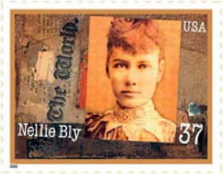
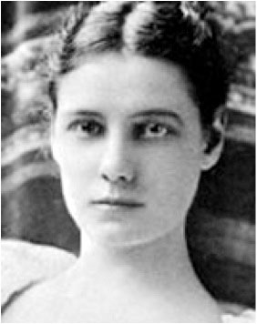
http://www.wikitree.com/genealogy/Cochran-Photos-2 http://www.america.gov/st/peopleplace-english/2008/April/20080427131539eaifas0.3595806.html (Accessed 8/6/11)
Bly, Nelly (1864-1922) – famous “woman reporter” who favorably interviewed EG for the New York World, helping to secure EG’s celebrity status (Falk I 29, 520).
Helen Boardman
Boardman, Helen (nd) – educational reformer and member of the No-Conscription League; she testified on EG’s and AB’s behalf at their anti-draft trial (LML 618); EG mentions her school with Martha Gruening in her May 11, 1919 letter to Stella Ballantine (Microfilm reel 11).
Marie Boer
Boer, Marie (nd) – she and sister-in-law Elise sent packages to EG in Jefferson City, also evidently made a button with EG’s name or picture on it (EG’s Mar 2, 1919 letter to Stella Ballantine) (Microfilm reel 11).
Elise Boer
Boer, Elise (nd) – sister-in-law of Marie (EG’s Mar 2, 1919 letter to Stella Ballantine) (Microfilm reel 11).
Johanna Boetz
Boetz, Johanna (1902-??)–German reformer, later a social worker in New York city, married to anarchist Mark Mratchny; she met EG and AB in the 1920s, and recalled “I do not have a favorable memory of Emma: she always used people – to type herletters, to mend her clothes, etc. – and she didn’t live badly either” (AV 385).
Pierina Boffa
Boffa, Pierina (nd) – Italian activist who participated in anarchist theatrical productions (Guglielmo 173).
Molly Skliar Bogin
Bogin, Molly Skliar (nd) – New York anarchist, she lived at Mohegan Colony (AV 256).
Virginia Bolten
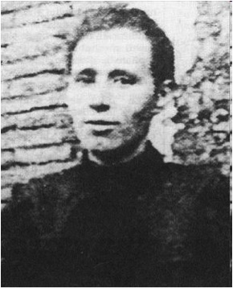
http://libcom.org/history/bolten-virginia-1870-1960-aka-%E2%80%9Cla-luisa-michel-rosarino%E2%80%9D-louise-michel-rosario (Accessed 8/5/11)
Bolten, Virginia (1870-1960?)– Uruguayan anarchist and feminist, she was sometimes called the Louise Michel of Rosario, the city in Argentina where she helped organized unions, including the seamstresses strike of 1889; she helped establish and wrote for La Voz de la Mujer, which received support from EG and Louise Michel. She was the first woman in Argentina to address a workers’ rally. She also wrote for La Protesta and La Protesta Humana and helped establish Casa del Pueblo (House of the People) (Heath, “Bolten, Virginia,”).
Beryl Bolton
Bolton, Beryl (nd) – girl friend of June Wiener, who was a friend of EG’s; Bolton worked at The Green Mask, a gay-friendly bohemian club in Chicago in the 1920s (Kissak, 174).
Margaret Bonfield
Bonfield, Margaret (nd) – Henry Weinberger sent EG a speech by Bonfield in a letter of June 27, 1919; Weinberger writes EG on July 17, 1919, praising Bonfield as a “woman after your heart with executive ability and at the same time ideals” (Microfilm reel 11).
Helena Born
Born, Helena (nd) – Boston anarchist and feminist, she gave up an independent income to support herself as a typesetter and took part in several self-sufficient living arrangements; she was companion to William Baile (Marsh 25-29).
Salut Borràs Saperas
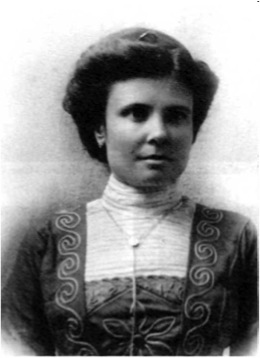
http://www.estelnegre.org/fotos/borrassaperas.jpg (Accessed 8/5/11)
Borràs Saperas, Salut (1878-1954) – daughter of anarchists Francesco Saperas Miró and Borràs Jover Martin, she helped her mother distribute her father’s journal Tierra y Libertad. She and her mother were imprisoned for a year, then expelled to France, where she worked with anarchists who were imprisoned or in hiding. She was the partner of Octave Jahn (Anarcofemèrides
Ruth Bösinger
Bösinger, Ruth (nd) – she is described as a militant anarchist and the companion of André Bösinger; while Ephéméride Anarchiste describes his exploits fighting for unemployed workers, struggling against fascism, and participating in the founding of the Centre International de Recherché sur l’Anarchisme (C.I.R.A.), no further information is provided about her (http://epheman.perso.neuf.fr/juillett22.html#22 (Accessed8/8/11).
Elizabeth Bowle
Bowle, Elizabeth (nd) – contributed “The Story of Annie,” to Mother Earth (5.7 (9/10): 239-240).
Neith Boyce
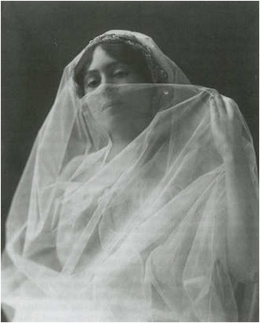
http://www.neithboyce.net/bio.htm (Accessed 8/6/11)
Boyce, Neith (1872-1951) – journalist and bohemian, she wrote “Thoughts on Bernard Shaw and the War” for Hippolyte Havel’s journal Revolt 1: 3 (Jan 22, 1916); she was married to EG’s friend Hutchins Hapgood. EG pronounced her “a most intriguing personality” (LML 583; Stansell 28, passim; Longa 227).
Gertrude Boyle
Boyle, Gertrude – (1876-1937) – sculptor Gertrude Boyle Kanno, who was married to Japanese poet Takeshi Kanno. She subscribed to Mother Earth as well as contributed poetry (ME 10.10 (12/15): 339; http://en.wikipedia.org/wiki/Gertrude_Farquharson_Boyle_Kanno (7/3/11).
Kay Boyle
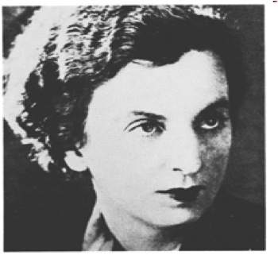
http://www.blacklamb.org/blog/wp-content/uploads/2010/02/boyle.jpg (Accessed 8/6/11)
Boyle, Kay (1902-1992) – writer, New York Times reporter, friend of EG and AB; she wrote Feb 13, 1940 letter to EG asking for letters to add to a collection she was making as tribute to EG and AB (Microfilm reel 46; D & D 192,235).
Eva Brandes
Brandes, Eva (1898-1988) – lived at the Ferrer Center in New York and at Stelton Colony, and served on the Board at Mohegan colony (AV 211, 280).
Elizabeth Breese
Breese, Elizabeth (nd) – she subscribed to Mother Earth. She is probably the same person who contributed $2 to AB’s journal The Blast (vol 1, no 20): 8.
Anita Brenner
Brenner, Anita (nd) – New York anti-fascist and anti-Stalinist (AV 446).
Catherine Breshkovskaya
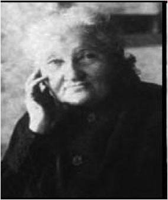
http://www.spartacus.schoolnet.co.uk/RUSbreshe.jpg (Accessed 8/6/11)
Breshkovskaya, Catherine [Babushka] (1844-1934) –Grandmother of the Russian Revolution; member of Socialist Revolutionary party in Russia; EG helped organized her tours of the U.S. in 1904 and 1905; EG initially disagreed with Breshkovskaya’s early criticism of the Bolsheviks, but later came to support her position (LML 661-664; Falk II 145 fn 1; 512).
Fannie Breslaw
Breslaw, Fannie (Luchkofsky) (nd) – Russian anarchist, sister of Anna Sosnovsky and Lisa Luchkofsky, she worked on the Anarchist Soviet Bulletin and was an activist in the ILGWU (AV 253, 346; FVL; Zimmer 114, 405).
Lisa Brilliant
Brilliant, Lisa (nd) – helped publish Road to Freedom, NY (AV p. 149)
Madeleine Brislance
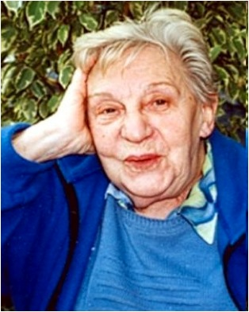
http://anarcoefemerides.balearweb.net/page/6
Brislance, Madeleine (1922-2009) –French feminist and anarchist, she was active in birth control and anti-militarist struggles throughout her lifetime, including the protests against French nuclear testing in Polynesia and the Gulf wars(Anarchofemèrides http://anarcoefemerides.balearweb.net/page/6) (Accessed 7/25/11).
Victorine Brocher-Rouchy
http://anarcoefemerides.balearweb.net/page/24
Brocher-Rouchy, Victorine (1838-1921) – French anarchist, she fought in the Paris Commune with her husband Jean Rouchy (who died in prison); after the repression of the Commune, she escaped to Switzerland, returning to France to join the anarchist group around the journal La Révolution Sociale. She married anarchist Gustave Brocher, whom she met at the International Anarchist Conference in London in 1881, and they adopted 5 orphans from the Commune. Her 1909 memoirs were entitledMemories of One of the Living Dead (libcom.org http://libcom.org/history/brocher-rouchy-victorine-1838-1921 (Accessed 7/25/11).
Estella Bachman Brokaw
Brokaw, Estella Bachman – (??-1910) – She and her husband W.E. Brokaw edited and published the Single Tax Courier in St. Louis. She advertised her publication “The Equitist,” advocating “a condition in which each person has equal freedom with every other,” in the anarchist journal Age of Thought (1:45 (May 8, 1897) (The Libertarian Labyrinth
Heloise Hansen Brown
Brown, Heloise Hansen (nd) – treasurer of The Path of Joy, a magazine produced by children at Stelton in 1916; daughter of Mary Hansen (MSM 278).
Lillian (Thayer) Browne
Browne, Lillian [Thayer] (nd)– wrote for Mother Earth (4:10 (12/09), ran an ad in Mother Earth advertising her services as a teacher of English and Mathematics (ME 4:3 5/09); she was a founding member of the Political Prisoners’ Amnesty League (LML 652); she wrote “Emerson the Anarchist,” Road to Freedom 2: 7 (May 1926), welcomed EG in Denver (ME 2.5 (7/07): 216), and contributed to The Social War Bulletin (Longa 233, 243).
Herminia Brumana
http://www.alasbarricadas.org/ateneovirtual/index.php/Herminia_Brumana Accessed 8/5/11)
Brumana, Herminia (1897-1954) – Argentinian anarchist and feminist, she wrote several novels and plays as well as essays for several anarchist publications, including; Mundo Argentino, El Hogar and La Nación. In 1943 she lectured on radical literary activities in Argentina at the New School for Social Research (Belluci, “Herminia Brumana”).
Paulette [Raygrodski] Brupbacher
Brupbacher, Paulette [Raygrodski] (1880-1967) – Swiss physician, birth control activist, anarchist and feminist, she was the partner of another anarchist physician, Fritz Brupbacher. She wrote several books and translated Bakunin’sConfessions (Grossman 177; The Daily Bleed http://recollectionbooks.com/bleed/gallery/galleryindex.htm#PauletteBrupbacher (Accessed 7/3/11).
Louise Bryant
http://www.marxists.org/archive/bryant/index.htm (Accessed 8/6/11)
Bryant, Louise (1885-1936) – writer and adventurer, she wrote “A New Adventure in Arcadia,” an article about a free speech fight in Portland, in ME (10.7 (9/15): 235-238);she also wrote for The Little Review, and she wrote a book on the U.S.S.R. claiming anarchists had “nationalized women,” to EG’s great annoyance. She corresponded with EG in U.S.S.R. (Nov 4, 1920 from EG in Petrograd to Bryant in Moscow, Microfilm reel 12). EG comforted her after the death of her partner Jack Reed (LML 850-51). Under her first married name, Louise Trullinger, she subscribed to Mother Earth.
Lillian Buck
Buck, Lillian (nd) – resident of Stelton Colony; she wrote for Discussion (Longa 53; AV 265).
Carmen Bueno Uribes
http://anarcoefemerides.balearweb.net/page/9
Bueno Uribes, Carmen (1918-2010) –Spanish anarchist, nurse and midwife, she was the partner of writer Eduardo de Guzman (Anarcofemèrides http://anarcoefemerides.balearweb.net/page/9 (Accessed 7/29/11).
Jo Ann Wheeler Burbank
Burbank, Jo Ann Wheeler (1905-2000) – anarchist educator, she taught at Stelton and Mohegan Modern Schools; she wrote for the anarchist journal Discussion and co-edited a newMother Earth in 1930s; she was the companion of John Scott (Longa, 53; AV 264-65; MSM 332-333).
Eliza B. Burnz
Burnz, Eliza B. (nd) – wrote for Hugh O. Pentecost’s journal Twentieth Century; Pentecost was a friend of EG’s (Longa 255).
Imogene Burr
Burr, Imogene (nd) – corresponded with EG in Jefferson City, February 23, 1918; EG mentions a letter from her in a letter to Stella Ballantine, Aug 25, 1918. Burr sailed to Honolulu to get married, Oct 20, 1918; EG mentioned it in letter to Stella, Sept 12, 1918 (Microfilm reel 11).
Celia Bushwick
Bushwick, Celia (nd) – resident of Stelton (AV 265).
Ethel Butler
http://www.life.com/image/50705778 (Accessed 8/8/11)
Butler, Ethel (1914-1996) – student at Modern School at Stelton Colony, she became dancer with Martha Graham’s troupe (AV 246).
Ethel Byrne
http://www.corbisimages.com/images/BE054670.jpg?size=67&uid=311e6586-8d4a-42f8-b36b-121f1ed25fa5 (Accessed 8/8/11)
Byrne, Ethel (nd) – a nurse and birth control activist; Byrne, her sister Margaret Sanger and Fania Mindell opened the first birth control clinic in the U.S. in 1916. In the 9 days the clinic was open, they saw 400 women. Byrne was arrested for creating a public nuisance and sentenced to 30 days in jail, where she nearly died on a hunger strike before being pardoned by the governor (LML 587;
Back to top
C ----
Sara Caiserman
Caiserman, Sara (1893-1959) - friend and supporter in Montreal, married to H.M. Caiserman (MSM 43; LML 992).
Mona Caird
http://sueyounghistories.com/wp-content/uploads/2008/08/mona-caird.jpeg (Accessed 8/8/11)
Caird, Mona (~1854-1932) - Scottish novelist and essayist, her writing critiqued conventional marriage, vivisection, eugenics, and advocated women’s suffrage. In “Ideal Marriage” (Liberty 7 (Jan 1889): 7) she argued that women have stronger rights to their children than do men (McElroy Lib 74).
Maria Calvia
Calvia, Maria (nd) – Argentinian feminist and anarchist, she was involved with the journal La Voz de la Mujer (The Anarchist Encyclopedia http://recollectionbooks.com/bleed/gallery/galleryindex.htm#MariaCalvia (Accessed 7/25/11).
Temma Camitta
Camitta, Temma (nd) – teacher from Philadelphia who came to the Modern School in New York (MSM 230).
Rachel Campbell
Campbell, Rachel (nd) – sex radical, author of the novel The Prodigal Daughter, which was excerpted in Lucifer, The Light Bearer 878 (Aug 17, 1901) and in Our New Humanity 1: 2 (Dec 1895); she also contributed toTheWord (Longa, 154, 201, 284; Passet, Sex Rad, 48;).
Sarah C. Roodhouse-Campbell
Campbell, Sarah C. Roodhous-, (nd) - Illinois reader of Lucifer, The Light Bearer, who wrote to editor Moses Harmon (Aug 11, 1897: 255) to discuss Rose Graul’s feminist novel Hilda’s Home (Passet, HH 317, 322 fn 31).
Amalia [Fontanella] Canova Caminita
Canova Caminita, Amalia [Fontanella] (nd) – anarchist and partner of fellow anarchist Ludovico Caminita (Zimmer 166, 171).
Lillian Cantor
Cantor, Lillian (nd) – she lived in Pittsburgh and subscribed to Mother Earth. This is probably the same Lillian Cantor [later Dawson] who was a Pittsburgh social worker who worked with the Workman’s Circle to alleviate workers’ poverty (Marcus 768, 771-776).
Pauline Cantor
Cantor, Pauline (nd) – helped organized EG’s lectures in Portland and subscribed to Mother Earth (ME 7.5 (7/12): 164; ME 9.7 (9/14).
Marie Capderoque
Capderoque, Marie [Marion Bachman] (1873 - ?) – French anarchist syndicalist, associate of anarchist educator Sébastien Faure; she founded "Comité d'études des femmes socialistes révolutionnaires." The Daily Bleedhttp://74.220.215.218/~recollec/bleed/0618.htm#Capderoque (Accessed 7/3/11).
Ida Capes
Capes, Ida (nd) – EG’s friend and correspondent in St. Louis, she was married to EG’s close friend Ben Capes (ME 9.11 1/15).
Luisa Capetillo
http://www.freebase.com/view/en/womens_rights/-/base/activism/activism_issue/activists
Capetillo, Luisa (1900-1979) – Puerto Rican feminist and labor activist, she organized workers in Cuba, The Dominican Republic, Tampa, New York and Puerto Rico. She edited and wrote for La Mujer (The Woman)which she founded in 1910. In 1919, was arrested for wearing trousers in public. She visited New York and wrote for Cultura Obrera. (S&VDW, 333; “Encyclopedia of World Biography,” 2005-2006 http://bookrags.com/biography/luisa-capetillo/
Émilie Carles
http://anarcoefemerides.balearweb.net/page/6
Carles, Émilie (1900-1979) – French author and teacher, she was ananarchist, pacifist, and environmentalist. (Anarchofemèrides http://anarcoefemerides.balearweb.net/page/6)(Accessed 7/25/11).
Pépita [Josefa Carpena-Amat] Carpeña
Carpeña, Pépita [Josefa Carpena-Amat] (1919-2005) – a Barcelona anarchist and feminist, she joined the metalworkers syndicate of the CNT at age 14 and was active in Mujeres Libres during the Spanish revolution. She wrote her autobiography DeToda la Vida originally in Castilian; it was translated into French under the title Toutesune vie: memoires (Heath, “Carpena, Pepita”).
Nettie Carr
Carr, Nettie (nd) – helped organize EG’s lectures in Cleveland; EG included her among the “brave citizens of different political views” who “zealously guarded” freedom of speech in their city (LML 589; ME 9.11 (1/15): 366).She subscribed to Mother Earth.
Adela [Adelita del Campo] Carreras Taurà
http://anarcoefemerides.balearweb.net/page/8
Carreras Taurà, Adela [Adelita del Campo] (1916-1999) – Spanish anarchist and feminist, she was a professional actress and dancer and member of Teatre del Front (part of the General Union of Workers, UGT); she was active in Mujeres Libres andworked with the anarchist journalTitán (Anarchofemèrides http://anarcoefemerides.balearweb.net/page/8 (Accessed 7/29/11).
Felicitas Casasín Bravo
Casasín Bravo, Felicitas (1913-1992) – Spanish anarchosyndicalist, she participated in Joventuts Llibertairies, the FAI and the CNT; she fought in the street battles against the fascists in 1936. She was the companion of Esteban Palacio(Anarcofemérides
Elvira Catello
Catello, Elvira (1891-??) – Italian anarchist, she founded a theater group in East Harlem that produced plays written and performed by women and ran an anarchist bookstore called La Libreria Elvira Catello; she was the wife of anarchist PaoloPerrini (Guglielmo, 173).
Ersilia Cavedagni [Grandi]
Cavedagni [Grandi], Ersilia (nd) – became involved in radical politics in Italy, then immigrated to Paterson, NJ; she edited the anarchist journal L’Aurora in Spring Valley when the editor Ciancabilla as arrested in 1901; she wrote “Ladonna,” L’Aurora (Oct 28, 1899) (Zimmer 166).
Adeline Champney
Champney, Adeline (nd) – friend of EG and member of Cleveland Free Thought Society; she spoke to Boston Social Science Club on “The Woman Question” and wrote for Mother Earth (“What is Worthwhile?” (5.9 (11/10): 286-291),Public,and Liberty. She was the companion of anarchist Fred Schulder (AV 478 fn 16; LML 589; Longa 150; Falk II 514-515).
Lucinda B. Chandler
Chandler, Lucinda B. (nd) – Chicago dress reformer and sex radical, she wrote for Moses Harman’s journal Our New Humanity and Lois Waisbrooker’s Foundational Principles. Her work was reprinted in Moses Harmon’sjournalLucifer, The Light Bearer (Passet, Sex Rad, 48; Longa 75, 200, 152).
Elizabeth Chapin
Chapin, Elizabeth (nd) – helped organized EG’s talks in Portland (daughter of Ruth Chapin) (ME 9.7 9/14).
Ruth Chapin
Chapin, Ruth (nd) – helped organize EG’s talks in Portland (mother of Elizabeth Chapin) (ME 9.7 9/14).
Edith Chase
Chase, Edith (nd) – Denver teacher, helped organize EG’s lectures in Denver (ME 8.4 (6/13): 106).
Dr. Stella Churchill
Churchill, Dr. Stella (nd) – EG met her in England, and EG wrote to AB that she might be of help with their organizing. EG contacted her in London for help arranging a benefit performance for the Spanish anarchists, the CNT-FAI (Nov 26,1935,Microfilm reel 35).
Therese Claramunt (or Claramoun)
http://laidea.agriculturaecologica.eu/?p=1339 (Accessed 8/8/11)
Claramunt (or Claramoun), Therese (1862-1931) – “the Louise Michel of Spain,” a survivor of the infamous Montjuich prison; EG met her on her 1929 trip to Spain (“An Unexpected Dash Through Spain,” The Road to Freedom (EGPP website).
Helen A. Clarke and Charlotte Porter
http://www.betterworldbooks.com/poet-lore-id-1161760423.aspx
Clarke, Helen A. (nd) - co-edited Poet Lore with Charlotte Porter and others, and published works by Alice Blackwell; EG read it and Current Literature for her knowledge of contemporary European literature (Falk II 553).
Emma Clausen
Clausen, Emma (nd) – Detroit anarchist, teacher, and physician, she contributed a poem to Mother Earth (July, 1906), and helped organize EG’s talks in Grand Rapids (ME 7.2 (4/12): 52); she also translated Charlotte Perkins [Stetson] Gilman’s poetry into German for Robert Reitzel’s Der arme Teufel (Falk II 138 fn 16, 515). She subscribed to Mother Earth.
Sonia Edelman Clements
Clements, Sonia Edelman (nd) – activist in Anarcho-Syndicalist Union in England, she was the daughter of American comrades John and Rachell Edelman; she participated in the support committee EG organized for Spanish refugees (letter from EG to Rudolf Rocker, May 4, 1937, Microfilm reel 68; letter from EG to Lillian Wolfe, April 6, 1939, Microfilm reel 46).
Lillian Harris Coffin
http://memory.loc.gov/cgi-bin/query/S?ammem/mnwp:@FIELD (SUBJ+@od1 (+coffin,+lillian+harris+)) (Accessed 8/8/11)
Coffin, Lillian Harris (nd) – she subscribed toMother Earth. She was President of the New Era League, San Francisco, and the National Advisory Council of the Congressional Union for Women Suffrage. (“Photographs from the Recordsof the National Women’s Party, The Library of Congress American Memory http://memory.loc.gov/cgi-bin/query/h?ammem/mnwp:@field (NUMBER+@band (mnwp+149008)) (Accessed 8/8/11).
Fania Cohen (Cohn)
Cohen, Fannia [Cohn] (nd) – ILGWU organizer and leader, she was a member of Board of Manumit, an experimental school for children of workers in Pawling, NY; she helped organize “The Uprising of the 30,000”; April 3, 1940 letter from Stella lists her as one of the Friends of EG soliciting help when EG had a stroke (MSM 377 fn 19; Orleck; Microfilm, reel 46).
Jane Cohen
Cohen, Jane (nd) –helped EG organize a campaign against corporal punishment in Toronto schools (LML 992).
Selma Cohen
Cohen, Selma (nd)– she and her partner Abe Bluestein produced the English-language monthly paper I.W.M.A. Bulletin of Information and English radio broadcasts for the Spanish anarchists during the revolution (Zimmer 448).
Cohen Sisters
Cohen sisters (nd) – helped organize EG’s talks in Denver (ME 7.3 95/12): 90).
Sophie Cohen
Cohen, Sophie (nd) –she and her husband Joseph Cohen ran the Radical Library school in Philadelphia and anarchist summer camp near Mohegan colony (MSM 60; AV448).
Annie Cohn
Cohn, Annie – worked with EG for birth control and in support of many anarchist causes; EG described her as “a rare spirit of brave patience and selfless kindness” (LML672); wife of EG’s supporter Michael Cohn (Falk I 523).
Ethel Cole
Cole, Ethel (nd) – contributed to Margaret Sanger’s journal The Woman Rebel (Longa 278).
Emily Holmes (Demi) Coleman
Coleman, Emily Holmes (Demi) (nd) - “a wild wood-sprite with a volcanic temper,” EG’s secretary in France (LML vi).
May L. Collins
Collins, May L. (187-1897) – secretary of the Free Thinker’s Association from Midway, Kentucky, she spoke to the Ohio Liberal Society on “A Plea for the New Woman.” Her speech was later made into a pamphlet and sold in the anarchist journal Lucifer; she died tragically at age 19 and her obituary in the anarchist journal Age of Thought praised her as a “magnificent type of intellectual womanhood” (1:27 (Jan 2, 1897): 2)
Lucy N. Colman
Colman, Lucy N. [sometimes spelled Coleman] (nd) - contributed to a symposium on Mary Wollstonecraft in Lucifer, The Light Bearer 967 (April 30, 1903) and to Moses Harmon’s journal Our New Humanity (Longa 154, 200;McElroy,Ind Fem, 55).
Lydia Kingsmill Commander
Commander, Lydia Kingsmill (nd) l – pro-socialist but anti-immigrant reformer, she published “What Imperialism Means to Women” in the anarchist journal The Demonstrator (Longa 46).
Mercedes Composada
http://www.estelnegre.org/fotos/mercedescomaposada2.jpg (Accessed 8/8/11)
{kind=link}
Composada, Mercedes (1901-1994) – one of the founders of Mujeres Libres, she wrote an article on EG’s work in Mujeres Libres (March 11, 1937 letter from Gudell to EG, Microfilm reel 39). EG wrote to Evelyn Scott, Feb 9, 1939, “A very dear friend of mine, Mercedes Composado, the editor of the magazine, Mujeres Libres, one of the most striking publications ever gotten out by women, has been put in a miserable concentration camp near Nimes.” (p. 1 of 4)
Carmen Conde
http://recollectionbooks.com/bleed/0815.htm (Accessed 8/8/11)
Conde, Carmen (1907-1995) – anarchist, feminist, professor, dramatist, and poet, she was active in Mujeres Libres during the Spanish Revolution; she was the companion of poet Antonio Oliver Belmás (The Daily Bleedhttp://recollectionbooks.com/bleed/0815.htm).
Winifred Harper Cooley
Cooley, Winifred Harper (1874-1967) - she subscribed to Mother Earth. She was a feminist, writer and labor reformer; she was the daughter of Ida Husted Harper, who was also a well-known feminist, journalist, and colleague of Eugene Debs and Susan B. Anthony. (http://en.wikipedia.org/wiki/Winnifred_Harper_Cooley (Accessed 8/8/11).
Johanna Cook
Cook, Johanna 9nd) – libertarian, visited Ferrer Center (AV 198).
Mrs. Aurelia J Corker
Corker, Mrs. Aurelia J. (nd) – supplied bail for Mexican revolutionary Raúl Palma during his 1919 trial for violating the Espionage Act. (MacLachlan 96). The delegates to the State Building Trades Council gave her a standing ovation at their 1913 meeting to show their appreciation for her support (“Women Address Labor Delegates,” The San Francisco Call (January 22, 1913): 5).
Lilly Cornelisen
Cornelisen, Lilly (nd) – friend of EG, she defended EG in her fight with Johann Most; she was married to Dutch syndicalist Christianus Gerardus (Falk I 524).
Abby Hedge Coryell
Coryell, Abby Hedge (nd) – New York anarchist, member of the Sunrise Club, where EG spoke regularly; she and her husband, anarchist John Coryell, were the first teachers at the New York Modern School (Falk II 445 fn 3; AV 505 fn 335).
Julie May Courtney
Courtney, Julie May (nd) - Denver anarchist, chiropractor and poet, she supported modern schools and free speech reform; She subscribed to Mother Earth and helped organize EG’s talks in Denver (MSM 66; Rabban 67 fn 220;ME 6:5 (7/11): 156 and 7:3 (5/12): 88).
Ida Craddock
http://www.idacraddock.com/ (Accessed 8/8/11)
Craddock, Ida (1847-1902) – freethought advocate, she was the secretary for the American Secular Union; she was arrested and imprisoned under the Comstock laws for “obscene” pamphlets on sexuality; after continued persecution, she eventually committed suicide (Falk I 122 fn 3). EG called her “one of the bravest champions of women’s emancipation” (LML 553).
Katherine Taylor [Mrs. William B.] Craig
http://en.wikipedia.org/wiki/File:KatherineTaylorCraig.JPG (Accessed 8/8/11)
Craig, Katherine Taylor [Mrs. William B.] (1877- ??) – writer, suffrage supporter, member of the D.A.R. and the Women’s Political Equality Association. She subscribed to Mother Earth (Leonard, p. 212).
Miss Craig
Craig, Miss (nd) – helped organize EG’s lectures in Los Angeles; daughter of Mrs. Craig (ME 10.6 8/15).
Mrs. Craig
Craig, Mrs. – helped organize EG’s lectures in Los Angeles; mother of Miss Craig (ME 10.6 8/15).
Ermestina Cravello
Cravello, Ernestina (nd) – born in Italy, she immigrated to Patterson, New Jersey, worked in the mills, and became active in anarchist theatrical groups. TheNew York Herald described her as “a born leader, with beauty, wit and power greater than Emma Goldman ever possessed.” (“Italian anarchists are Exultant,” July 31,1900 quoted in Zimmer, p 164). She advocated women’s liberation through direct action. She was the sister of Antonio Cravello (Zimmer 133).
Martha Gordon "Auntie" Crotch
Crotch, Martha Gordon “Auntie,” (nd) – long-time friend of EG’s; she arranged contacts for EG to meet English intellectuals; EG stayed with her in England (D &D 107).
Mabel Carver Crouch
Crouch, Mabel Carver (nd) – “well known liberal” who helped get EG back into the U.S. in 1924 for 90 days; she visited EG at St. Tropez (Solomon 35; Frankel 909; D & D230-231).
Ida Crouch-Hazlett
Crouch-Hazlett, Ida (nd) – Montana socialist, scheduled to debate EG in Butte but the authorities would allow only Crouch-Hazlett, not EG, to speak (Falk II 494).
Áurea Cuadrado Castillón
http://anarcoefemerides.balearweb.net/post/90522
Áurea Cuadrado Castillón, (1894-1969) – Spanish anarchist and feminist, she was active in the CNT, SAI, and Mujeres Libres. She was exiled in Cuba, Mexico, and the U.S. (Anarcofemèrides http://anarcoefemerides.balearweb.net/post/90522(Accessed 8/1/11).
Nancy Cunard
http://en.wikipedia.org/wiki/Nancy_CunardLavinia (Accessed 8/8/11)
Cunard, Nancy (1896-1965) – writer and poet, she was contacted by EG, with English poet Brian Howard’s help, to support the Spanish anarchists (Jan 22m 1918, Microfilm reel42) and Dec 10, 1938, Microfilm reel 44).
Margery Currey
http://publications.newberry.org/frontiertoheartland/files/display/22/square_thumbnail (Accessed 8/8/11)
Currey, Margery (nd) – teacher and suffragist, bohemian, she had a salon in Chicago, married to EG’s friend Floyd Dell (Stansell 52-53).
Clara Cushman
Cushman, Clara (nd) – wrote “My Red Pennant” (ISR 14.11 (5/14): 658).
Back to top
D ----
Virgilia D'Andrea
D’Andrea, Virgilia (1888-1933) – brilliant Italian anarchist orator and writer who fled to the U.S. to escape fascism in Italy, then continued to organize Italian-American workers in the U.S. She campaigned for Sacco and Vanzetti in Paris. At her death, her listeners stated that “every time she spoke, she left behind seeded ground” (Guglielmo, “Donne Sovversive;” AV 502 fn 291).
Miriam Daniel
Daniel, Miriam (nd) – contributed to Benjamin Tucker’s journal Liberty (Longa 128).
Fannie Daniels
Daniels, Fannie (nd) – daughter of parents who subscribed to Lucifer, the Light Bearer, she wrote to editor Moses Harmon (Jan 26, 1898: 447) to discuss the feminist novel Hilda’s Home (Passet, HH 313, 321 fn 20).
Viroqua Daniels
Daniels, Viroqua (nd) – characterizes her perspective as anarchist communism, “no employers, no bosses, no hirelings, no sex domination” (Longa 68). She contributed toMother Earth, The Dawn, Free Society, Why?andFirebrand, including “Shall Children Be Owned?” (Firebrand 1:33 (Sept 22, 1895); she was characterized by fellow contributor Ezekiel Slabs in The Firebrand as “a farmer girl in the mountains” (Longa 42, 66, 81).
Virginia [Teixeria] Dantas
Dantas, Virginia [Teixeria] (1904-1990) – a Portuguese seamstress, she was ananarchist, feminist and syndicalist (The Daily Bleed http://74.220.215.218/~recollec/bleed/0724.htm#VirginiaDantas (Accessed 8/8/11).
Alexandra David-Neel
http://74.220.215.218/~recollec/bleed/1024.htm
David-Neel, Alexandra (1868-1969) – anarchist, feminist, explorer, the first European woman to explore Tibet (The Daily Bleed http://74.220.215.218/~recollec/bleed/1024.htm)(Accessed 7/25/11).
Marie Louise David
David, Marie Louise (nd) – French individualist anarchist, she wrote for The Alarm and Liberty (Falk 1 526).
Clara Dixon Davidson
Davidson, Clara Dixon (nd) – individualist feminist, she wrote for Liberty and was the assistant editor of The Beacon (1890-1891); she also wrote for Hugh O. Pentecost’s journal Twentieth Century (McElroy,Lib12; Longa 140, 27, 255).
Gussie Davidson
Davidson, Gussie (nd) – librarian at Sunrise Colony (AV 298).
Ann Davies
Davies, Ann (nd) – Irish and American anarchist, wrote for anarchist journals under pseudonym Libertas, and was associated with the London paper Freedom and the New York journal Solidarity; she founded the Libertarian Lecture Society, an anarchist discussion forum; she later became a suffragist but maintained her connections to anarchism (Falk 1 526-527).
Betty Davis
Davis, Betty (nd) – principal at Mohegan Modern School (MSM 335).
Lizzie Davis
Davis, Lizzie (nd) – called “The Queen of the Hoboes,” she was a regular at the anarchist-oriented Dil Pickle Club and a frequent orator at the Chicago Bughouse (Rosemont 30).
Dorothy Day
http://www.pbs.org/wgbh/questionofgod/voices/day.html (Accessed 8/8/11)
Day, Dorothy (1897-1980) – Chicago socialist, journalist, assistant on The Masses; she became a leader in the Catholic Workers Movement and edited The Catholic Worker, which recommended the works of Kropotkin (Stansell152-153;MSM 154; AV 513 fn 429).
Lydia Dwight Day
Day, Lydia Dwight (nd) – principal of the Comstock School for Girls, New York, she subscribed to Mother Earth (Burlingame 836).
Felisade de Castro Sampedro
http://anarcoefemerides.balearweb.net/page/17
de Castro Sampedro, Felisa (1898-1981) – Spanish anarchist and feminist, she and her sister Apolonia formed Grup Cultural Femení de Catalunya, which later merged with Mujeres Libres. Active in exile in the CNT and Mujeres Libres, she died in Venezuela (Anarcofemèrideshttp://anarcoefemerides.balearweb.net/page/17 (Accessed 7/30/11).
Voltairine de Cleyre
http://www.nndb.com/people/235/000134830/ (Accessed 8/8/11)
de Cleyre, Voltairine (1866-1912) – Philadelphia anarchist, writer and orator, “this brilliant American girl” (LML 124) was a regular contributor toMother Earth and also wrote for Free Society, The Demonstrator, Lucifer, and The Rebel; she founded the Ladies Liberal League, taught at the Chicago Modern School, and translated Ferrer’s “The Modern School.” She sometimes wrote under the pseudonym Flora W. Fox or X.Y.Z. (AV 480 fn 37;MSM 46; Falk II 518-519; Longa 81, 166, 208).
Caroline de Maupassant
de Maupassant, Caroline (nd) – contributed to The Individualist (Longa 111).
Edna Smith DeRan
DeRan, Edna Smith (nd) – Detroit writer, she published several books, including The Dawn of the Day, and she subscribed to Mother Earth (“Edna Smith DeRan”).
Harriet Dean
Dean, Harriet (nd) – co-edited The Little Review and helped organized EG’s lectures in Indianapolis; EG characterizes her as “energetic, breezy and unconventional” (ME 9.11 1/15); LML 531)
Sonya Deanin
Deanin, Sonya (nd) – member of Frayhayt Group in New York, she attended Ferrer Center lectures and lived at Mohegan Colony (AV 335).
Gussie Denenberg
Denenberg, Gussie (nd) – attended Ferrer Center lectures in New York and was active in the anarchist movement in New York, Chicago, and Washington, DC; she was married to Jack Isaacson, editor of the New York Freedom, who was hounded by government agents until he committed suicide (AV 211, 208).
Mary Ware Dennett
http://academic.evergreen.edu/k/klalor09/post%20office%20censorship%20home.htm (Accessed (8/8/11)
Dennett, Mary Ware (1872-1947)– member of the organizing committee of the People’s Council for Democracy and Peace, 1918; also a member of the Heterodoxy Club, a Bohemian feminist club in Greenwich Village; she helped organize the National BirthControl League, fought the Comstock Laws, and contributed “The Sex Side of Life” to The Modern School Magazine 5:6 (June 1918) (Hillquit 172; Stansell236; Longa 177).
Sophie Desser
Desser, Sophie (nd) – anarchist activist in Toronto, EG stayed with her family (AV 77).
Freda Diamond
Diamond, Freda (nd) – friend of EG, daughter of Ida Diamond, Diamond recalled EG as a fine speaker (AV 51-54).
Ida Diamond
Diamond, Ida (nd) – New York anarchist, mother of Freda Diamond, friend of EG, partner of EG’s brother Morris Goldman (AV 52).
Nellie (Naomi) Ploschansky Dick
Dick, Nellie (Naomi) Ploschansky (1893-1995) – with husband James, she directed the Modern Schools at Mohegan Colony, Stelton Colony, and Lakewood, New Jersey, as well as earlier in England (AV 195).
Dr. Mary E. Dickinson
Dickinson, Dr. Mary E. (nd) – spoke on behalf of birth control at a meeting in support of Ben Reitman for his arrest in Rochester for distributing birth control information (LML 591).
Dickstein, Ruth
Dickstein, Ruth (nd) – Polish-American anarchist, member of the Vanguard group in New York City, later of Los Angeles (AV 461; The Daily Bleed
Ellen Battelle Dietrick
Dietrick, Ellen Battelle (nd) – individualist feminist, she supported suffrage as an intermediary goal and wrote for Liberty (McElroy Lib12, Marsh57-60).
Annie L. Diggs
Diggs, Annie L. – (1848-1916) managing editor and contributor to The Kansas Liberal (later called Lucifer, The Light Bearer); she wrote “Woman under the Rule of Law, the Government and the Church,” The Kansas Liberal 2:9(April 20, 1882) (Longa 116-117).
Lillian Kisliuk Dinowitzer
Dinowitzer, Lillian Kisliuk (nd) – Washington, D.C. anarchist, she wrote for Mother Earth, supported The Blast, organized EG’s talks in DC, and operated a progressive nursery; her home was a center of radical activism in DC. She was the daughter of anarchist Max Kisliuk (LML 568; AV 208).
Dorothy Dix
Dix, Dorothy (1861-1951) - pen name of U.S. journalist and advice columnist Elizabeth Meriwether [Mrs. Geo L.] Gilmer; she subscribed to Mother Earth. (The Dorothy Dix Special Collection http://library.apsu.edu/dix/research/guide/htm (Accessed 8/6/11)
Lavinia Lloyd Dock
http://www.nursingworld.org/LaviniaLloydDock (Accessed 8/8/11/)
Dock, Lavinia (1858-1956) – Henry St. settlement worker; EG felt she, Lillian Wald, and Miss MacDowell were “among the first American women I met who felt an interest in the economic condition of the masses” (LML 160). [pic]
Mabel Dodge [Luhan]
http://beinecke.library.yale.edu/awia/gallery/dodge.html (Accessed 8/8/11)
Dodge [Luhan], Mabel (1879-1962)– wrote poetry in Mother Earth (8:2 4/13: 55), ran a famous salon in Greenwich Village attracting radicals, artists, intellectuals, and bohemians, which Paul Avrich characterized as “one stream where many currents mingled together for a little while” (MSM 139).
Rose Dodokin
Dodokin, Rose (nd) – with Eva Brandes, they ran a guest house at Mohegan Colony (AV 280).
Mrs. C. M. Dolan
Dolan, Mrs. C.M. (nd) - she subscribed to Mother Earth; she was probably a teacher at Adams Cosmopolitan School in San Francisco (“Directory of the Public Schools”).
Esther Dolgoff
Dolgoff, Esther (nd) – anarchist and translator active in New York in the 1930s; Clara Solomon remembers that Esther and Sam Dolgoff’s apartment at 175 East Broadway was a meeting place for radicals (Tamiment collectionhttp://dlib.nyu.edu/findingaids/html/tamwag/ohal.html; Solomon, “Memoir”).
Dondon, Anna
http://www.estelnegre.org/documents/dondon/dondon01.jpg
Dondon, Anna (1884-1979) – French anarchist, she was arrested for her participation in the criminal activities of the Bonnot Gang; this group of individualist anarchists, influenced by Max Stirner’s radical critique of the state, were connected to the journal l’anarchie and the regular discussion groups meeting in Paris,Causeries Populaires (Parry, passim).
Mary Donovan
http://faculty.babson.edu/bortman/sacco-vanzetti%20images/Mary%20Donovan%20-%20Boston%20Common.jpg (Accessed 8/23/11)
Donovan, Mary (1890-1973) – Boston socialist, member of Sacco and Vanzetti Defense Committee (AV 125). She married labor organizer Powers Hapgood, the nephew of EG's friend Hutchins Hapgood
Joaquina Maria Dorado Pita
http://macoca.org/liberto-sarrau-royes-y-joaquina [with Liberto Sarrau] (Accessed 8/5/11)
Dorado Pita, Joaquina Maria (1917- ??) –CNT activist during Spanish Revolution, she participated in the anarchist collectives and, with the group Luz y Cultura, fought the Stalinist forces. After the defeat of the anarchists, she was imprisoned in France, but escaped with the help of Paul Reclus and eventually returned to Spain, where she worked with the group producing the underground journal Ruta. She was the partner of Liberto Sarrau Royes (“Los de la Sierra,”
Rheta Childe Dorr
Dorr, Rheta Childe (1869-1948) – Journalist and war correspondent, she was a socialist from Boston; she was a member of the Sacco and Vanzetti Defense Committee (AV 125).
Anna Dorn
Dorn, Anna (nd) – sent EG gifts and letters in Jefferson City (Aug 5, 1919 letter to Fitzi Fitzgerald, Microfilm reel 11).
Madeleine Doty
Doty, Madeleine (1880-1984) – journalist, she wrote “Die Mutter – True Story” for The Blast 2:5 (6/1/17): 237-238; she was married to EG’s close friend Roger Baldwin (Stansell 263).
Anita Day Downing
Downing, Anita Day (nd) – she subscribed to Mother Earth; she was probably the executive secretary of the California Food Administration around World War I (Duniway 231).
Celia Dropkin
Dropkin, Celia (nd) - poet published in the Yiddish anarchist paper Fraye Arbayter Shtime (Zimmer 116).
Fanya Dubois
Dubois, Fanya (nd) - with husband Jacques, she ran an open-air camp in Maplewood, New Jersey, where the Ferrer Summer School met (MSM 110).
Rosa Chanovsky Dubovsky
Dubovsky, Rosa Chanovsky (18??-1972) – Russian-born Jewish anarchist, she organized women workers in Argentina and helped set up the Emma Goldman library for women (Heath, “Dubovsky, Rosa”).
Dudley, Dorothy
Dudley, Dorothy (nd) – writer involved with the anarchist Vanguard group in New York in the 1930s (Solomon, “Memoir”).
Helena Dudley
Dudley, Helena (nd) – pacifist and Boston settlement house worker; she helped organize Breshkovskaya’s tour in Boston and stayed in touch with “the grandmother of the Russian Revolution” afterwards. EG communicated with Dudley regarding the tour; Dudley was one of the founders of the Women’s Trade Union League and supported both the I.W.W. and the Women’s International League (Falk II 145-146 fn 4;519).
Ethel (Turner) Duffy
Duffy, Ethel [Turner] (nd) – English language editor for the Mexican anarchist paper Regeneración (Longa, 211).
Rosari Dulcet Martí
http://anarcoefemerides.balearweb.net/page/19, http://anarcoefemerides.balearweb.net/page/19, http://anarcoefemerides.balearweb.net/page/19
Dulcet Martí, Rosari (1881-1968) – Spanish anarchist, antimilitarist, orator, and writer, she was active in the CNT. She was the companion of Marcelino Silva. After the defeat of the anarchists, she continued her activism in France and wrote for the anarchist feminist journal Alejandra (Anarcofemèrideshttp://anarcoefemerides.balearweb.net/page/19 (Accessed 7/30/11).
Isadora Duncan
http://sirismm.si.edu/aaa/newPOA/AAA_miscphot_5411.jpg (Accessed 8/8/11)
{kind=link}
Duncan, Isadora – pioneer of modern dance, friend of AB’s, EG’s and many Ferrer Center artists; children at Ferrer Center school attended her performances (LAEG 345; AV 226; D&D 125-126).
Katherine Dunham
http://upload.wikimedia.org/wikipedia/en/thumb/a/a9/Katherine_Dunham_in_Tropical_Revue_1943_A.jpg/220px-Katherine_Dunham_in_Tropical_Revue_1943_A.jpg (Accessed 8/5/11)
Dunham, Katherine (1909-2006) – African-American dancer and anthropologist in Chicago, she was a regular participant in the Dil Pickle Club, and the inventor of” Ballet Nègre” (Rosemont, 29, 340).
Ariel "Puck" (nee Ida Kaufman) Durant
Durant, Ariel “Puck” (nee Ida Kaufman) (1898-??) – student at New York Modern School, married to Modern School teacher and historian Will Durant (AV202, 278).
Back to top
E ----
Laura H. Earle
Earle, Laura H. – contributed to a symposium on Mary Wollstonecraft in Lucifer, The Light Bearer 967 (April 30, 1903) (Longa 154).
Crystal Eastman
http://innovators.vassar.edu/innovator.html?id=23 (Accessed 8/9/11)
Eastman, Crystal (1881-1928) – labor and peace activist, and member of the Heterodoxy Club, she corresponded with EG in prison, (see 3/18/1919 and 3/23/1919 letters from EG to Stella Ballantine, Microfilm reel 11); she presided over a fundraiser on behalf of Kate Richards O’Hare, at which EG spoke (LML 706; P&S 119).
Miss Linda Anne Eastman
Eastman, Miss Linda Anne (1867-1963) - She subscribed to Mother Earth.She was a librarian at the Cleveland Public Library, where she developed the Children’s Library League and extended library services to immigrant communities. She was the first woman to head a metropolitan library system in the U.S. (Galbreath 129; Sicherman and Green 215-216).
Kate Van Eaton
Eaton, Kate Van (nd)– taught at the Modern School at Stelton Colony, was acting principal with husband John Edelman (AV 288, 513, fn 426).
Isabelle Eberhardt
http://en.wikipedia.org/wiki/Isabelle_Eberhardt
Eberhardt, Isabelle (1877-1904) – a Swiss explorer and writer, she defied patriarchal and colonial customs, wore men’s clothes in order to travel freely, converted to Islam, and lived much of her adult life in North Africa. Eberhardt Press, a small anarchist press in Portland, Oregon, has reissued some of her writings. (http://en.wikipedia.org/wiki/Isabelle_Eberhardt (Accessed 7/6/11).
Maria Echevarria
Echevarria, Maria (nd) – wrote for Italian anarchist journal Cultura obrera (Falk III J).
Emmy Eckstein
Eckstein, Emmy (nd) – helped type LML “as a labor of love” (Falk I vii); she was AB’s partner during his last years; there was much tension between her and EG but EG took care of her after AB’s death (LAEG 379).
Kate Edelman
Edelman, Kate (nd) – union organizer (AV 265; MSM 330).
Rachelle Krimont (formerly Edelmann) Edelman
Edelman, Rachelle Krimont (formerly Edelmann) (nd) – New York anarchist who hosted Kropotkin during his 1897 visit; her mother and two sisters were also anarchists; after the death of her husband John, Rachelle took their two kids, John and Sonia,to grow up at anarchist Whiteway Colony in England and attend Ferrer school there. She contributed to Solidarity (AV 486, fn 88;MSM 193, 274; Longa 244).
Rebecca (Becky) Edelsohn
Edelsohn, Rebecca (Becky) (1892-1973) – militant New York anarchist and lecturer, she was the first political hunger striker in America; she wrote “Hunger Striking in America,” Mother Earth, 9:7 (Sept 1914) and also wrote forThe Woman Rebel; she worked with the unemployed movement and the Anti-Militarism League; she was AB’s companion for a time; as a teenager, EG took her in (LML 535; Falk II 519-520).
Minnie Edelman
Edelman, Minnie (nd) – interviewed in Free Voice of Labor; her name is on a labor tract signed by the Anarchist Workers’ Group for the Union of New York Cloak and Dressmakers (FVL).
Annie Edelstadt
Edelstadt, Annie (nd) – helped organize EG’s lectures in Butte, MN; mother of Sadie Edelstadt, married to Abe Edelstadt (ME 7.5 7/12; LML538).
Sadie Edelstadt
Edelstadt, Sadie (nd) – helped organize EG’s lectures in Butte, MN; daughter of Annie and Abe Edelstadt (ME 7.5 7/12).
Sarah Edelstadt
Edelstadt, Sarah (nd) –a talented speaker, she was part of a family of anarchists, including her brother David (who changed the spelling of the family name from Edelshtat) who was a beloved anarchist poet and editor (Weinberg 47-49).
Manuela Edo
Edo, Manuela (nd) – Detroit anarchist (AV 399).
Sara R. Ehrmann
Ehrmann, Sara R. (1845-1993) – assisted her husband Herbert Ehrmann in defending Sacco and Vanzetti; she later became a prison reform activist working to abolish capital punishment (AV 123).
Christine Ell
Ell, Christine (nd) – met EG in Denver, where Ell worked as a prostitute; Ell followed EG back to New York, and became an anarchist and cook in Greenwich Village; she was the model for Anna Christie in Eugene O’Neill’s play of that name (Stansell133; AV 490 fn 134, 500 fn 264).
Edith Ellis
http://www.achau.co.uk/photos/Edith%20Ellis.jpg (Accessed 8/11/11)
Ellis, Edith (1876-1970)– spoke on homosexuality in Chicago in 1915; Margaret Anderson compared Ellis’s talks unfavorably with EG’s; Edith was married to Havelock Ellis, whom EG relied on for her own analysis of sex (Kissack 143-144).
Laura Emerson
Emerson, Laura (nd) - “A well-known woman rebel” who was jailed during the San Diego free speech fights (LML I 494).
Dr. Marie Equi
http://www.ohs.org/the-oregon-history-project/biographies/Dr-Marie-Equi.cfm (Accessed 8/10/11)
Equi, Dr. Marie (1872-1952)– Portland physician, suffragist, I.W.W. supporter, birth control activist, she joined the American Union Against Militarism and was imprisoned for an anti-war speech; she adopted and raised a child with her partner Harriet Speckhart. Arrested for birth control and anti-war activism, Equi lived with union leader Elizabeth Gurley Flynn for 10 years (Falk III)
Mrs. Erkeline
Erkeline, Mrs. (nd) – EG visited her in Home Colony, WA (ME 9.7 9/14).
Matilde [“Mati”] Escuder Vicente
http://anarcoefemerides.balearweb.net/page/9
Escuder Vicente, Matilde [“Mati”] (1913-2006) – anarchist teacher, she volunteered with the Durruti column and participated in the collective movement in Aragon; after the defeat of the anarchists, she and her partner Felix Carrasquer helped produce underground publications; she was arrested and imprisoned by the fascists (Anarcofemèrides
Stella Estall
Estall, Stella (nd) – EG praised her for organizing EG’s farewell dinner when leaving Canada, May 2, 1935 in letter to Millie Desser (May 11, 1935, Microfilm reel 34).
Soledad Estorach
http://libcom.org/history/estorach-soledad
Estorach, Soledad - (1915-1993) – Spanish anarchist and feminist, she was active in the CNT and theGrupo Cultural Femenino (women’s cultural group) which later became part of Mujeres Libres; She participated in the agricultural collectives in Aragon, Catalonia, and Valencia in 1936; she organized women workers and contributed to the CNT paper Tierra Y Libertad and the paper Mujeres Libres (Acklesberg, 35, 77-81; http://libcom.org/history/estorach-soledad (Accessed 7/6/11).
Concha [Concepcion] Estrig
http://anarcoefemerides.balearweb.net/page/2
Estrig, Concha [Concepcion] (1909-1987) – Spanish anarchosyndicalist, she worked with the Iberian Anarchist Federation (FAI) and the CNT (Anarcofemèrides http://anarcoefemerides.balearweb.net/page/2 (Accessed 7/26/11).
Pepita Estruch
http://anarcoefemerides.balearweb.net/page/22 (Accessed 8/5/11)
Estruch, Pepita (1920-?) – Spanish anarchist, she was active with the libertarian youth league; in exile in France, she participated in the anti-Nazi underground. She was active in Mujeres Libres in exile, helping to produce the journal and book of that name (Anarcofemèrides http://anarcoefemerides.balearweb.net/page/22 (Accessed 7/30/11).
Mika [Michèle Feldman] Etchebehere
http://recollectionbooks.com/bleed/Encyclopedia/EtchebehereMika.htm (Accessed 8/5/11)
Etchebehere, Mika [Michèle Feldman] (1902-1992) – Argentinian anarchist, member of the Rosario group in Buenos Aires, she joined the P.O.U.M. in the Spanish revolution and was selected head of her company. Her autobiography, Ma guerred’Espagne à moi, was published in 1975 (“The Anarchist Encyclopedia,” http://recollectionbooks.com/bleed/Encyclopedia/EtchebehereMika.htm (Accessed 8/16/11).
Elizabeth Glendower Evans
http://www.flickr.com/photos/puzzlemaster/sets/72157610810878274/detail/ (Accessed 8/10/11)
Evans, Elizabeth Glendower (1856-1937) – a wealthy lady from Boston’s upper class, she became an activist for women’s suffrage, labor rights, and peace. She was a friend and supporter of Sacco and Vanzetti and wrote an important booklet about their case. Roger Baldwin called her “the moral front of the defense” of the two anarchists (Document 79; AV 498 fn 231, 235).
Gladys Evens
Evens, Gladys (nd) – militant British suffragist; EG admired her spirit even though EG thought Evens picked the wrong cause (ME 7:7, 9/12): 207).
Back to top
F ----
Luce Fabbri
http://libcom.org/history/fabbri-luce-1908-2000
Fabbri, Luce (1908-2000) – Italian anarchist writer, teacher, and speaker, she lived most of her life in Uruguay; she was a professor of Italian literature at the University of Montevideo and wrote for numerous anarchist and academic publications,including Il Risorgimento. She was the daughter of anarchist Luigi Fabbri (Landi; . http://en.wikipedia.org/wiki/Luce_Fabbri (Accessed 8/20/11).
Berthe Fabert [Faber-Guillot]
http://militants-anarchistes.info/spip.php?article1510&lang=fr
Fabert [Faber-Guillot], Berthe (1895-1953) – she and anarchist Séveran Ferandel ran a radical bookstore, Librarie Sociale Internationale, in Basses-Alpes, France. Later she lived in Barcelona during the Spanish Revolution with French conscientious objector Eugène Guillot; they returned to France after World War II and were part of the radical group Amis de Sebastien Faure ” (“Séveran Ferandel”; “Faber-Guillot, Berthe, Suzanne”).
"Mother" Fageberg
Fageberg, “Mother” (nd) – elderly radical supporting EG in Omaha, NB, she was radicalized in her youth by the Haymarket events; EG described her home, with her 5 daughters, as “so full of harmony and good comradeship as only true freedom can inspire” (ME 6:2 (4/11): 54.
Luba Fagin
Fagin, Luba (nd) – member of Anarchist Forum in Cleveland (AV 422).
Sophie Fagin
Fagin, Sophie (nd) – wrote “The Student Anti-War Congress,” Freedom 1: 6 (Feb 11, 1933) (Longa 101).
Agmes Fair
Fair, Agnes (nd)– hobo in Portland who helped organize EG’s talks (ME 5: 5 (7/10): 159).
Anna Falcoff
Falcoff, Anna (nd) – anarchist who lived at Home Colony and taught at Seattle Modern School (MSM 65).
Sonya Farber
Farber, Sonya (nd) – New York anarchist, garment worker, executive board member of Fraye Arbeter Shtime; she was a member of the Libertarian Book Club, a resident of Stelton, Mohegan, and Sunrise Colonies, and an activist in the ILGWU(AV 346; FVL).
Marietta Federn
http://libcom.org/history/federn-marietta-etta-1883-1951 (Accessed 8/5/11)
Federn, Marietta (1883-1951) – Austrian-born writer, teacher, and translator, she became involved in the anarchist movement in Berlin, where she met EG and became friends with Rudolf and Millie Rocker; she wrote for the anarchist press and was active in the Syndicalist Women’s Organization. Blacklisted by the Nazis, she went to Barcelona with her two sons during the Spanish revolution, became active in Mujeres Libres,taught at a Modern School, and wrote for the anarchist press(Heath, “Federn, Marietta”).
Erica Feist
Feist, Erica (nd) – teacher at the Stelton Modern School (AV 247).
Clara Felberg
Felberg, Clara (nd) – associate of Breshkovskaya’s in Boston (Falk II 147).
Leah Feldman
http://libcom.org/history/articles/1899-1993-leah-feldman (Accessed 8/5/11)
Feldman, Leah (1899-1993) – Polish anarchist, she was active in Nestor Makno’s revolutionary movement in the Ukraine. She settled in London and worked for the Spanish anarchists, the French resistance, and with immigrant anarchist women.(“Feldman, Leah”).
Mary Elizabeth Byrne Ferm
Ferm, Mary Elizabeth Byrne (1864-1944) – educator, spiritualist, temperance advocate, theosophist, and suffragist; with her husband Alexis Ferm, she directed the Children’s Playhouse and the Modern School at Stelton Colony. She wrote forMotherEarth, Free Society, and The Modern School Magazine; spoke to New York Social Science Club; belonged to several liberal clubs (Civic, Sunrise, Manhattan, Harlem Alliance); she also joined Gaelic Society and Sinn Fein and worked for Irish independence (AV 194; MSM 281, 291, 296).
Olga Ferrer
Ferrer, Olga (nd) - the granddaughter of famous anarchist educator Francisco Ferrer, and the daughter of Sol Ferrer; she visited Stelton Modern School (MSM 354).
Kate Field
Field, Kate (nd) – individualist feminist, she wrote for Benjamin Tucker’s anarchist journal Liberty (McElroy, Ind Fem 12).
Mary Field
Field, Mary (nd) – wrote on war and women for International Socialist Review (“Babes Bred for War,” ISR 15.7 (1/15): 394-397): “Will this war make women think? Will it make them act? What if after this war, and yet another and still another, there were to come to women a great awakening?” Also wrote “She Stirreth Up the People,” a tribute to Mother Jones, inEveryman 10: 2-3 (April-May 1914): 8-11; Elizabeth Waddell and EG’s friend Leonard Abbott also contributed.
Sara Bard Field
http://www.storydriven.net/work1.htm (Accessed 08/11/11)
Field, Sara Bard (1882-1974) – poet and suffragist, Women’s Party member, anti-war activist; she contributed to Mother Earth’s 10thanniversary edition and to The Masses; Field wrote a remarkable essay “A Birth-ControlMeditation” for The Blast (1.23 (12/15/1916): 1930; EG’s lectures on free love helped her leave her marriage (Stansell 134; Longa31)
Vera Figner
http://www.spartacus.schoolnet.co.uk/RUSfigner.htm (Accessed 08/11/11)
Figner, Vera (1852-1943) – an earlier revolutionary in Narodnaya Volya (The People’s Will) in Russia, EG and AB met her in Moscow after the Bolsheviks took over, and helped her get access to better rations; they took inspiration from “her reminiscences of the heroic revolutionary epoch” (LML 895).
Mary Baird Finch
Finch, Mary Baird (nd) – contributed to Fair Play (Longa 59)
Ruth Fischer
Fischer, Ruth (nd) – New York anti-fascist and anti-Stalinist (AV 446).
Dorothy Canfield Fisher
http://www.vermonthistory.org/freedom_and_unity/create_image/famous.html (Accessed 08/11/11)
Fisher, Dorothy Canfield (1879-1958) – well-known American novelist, Montessori advocate and member of the support committee that secured EG’s reentry visa for her U.S. tour in 1934 (LAEG 414).
Minnie Fishman
Fishman, Minnie (nd) – helped organize EG’s lectures in St. Louis and Detroit; EG saw her as “handsome and capable” (LML 651); she was married to EG’s friend Jake Fishman (ME 9.11 1/15).
Bertha Fiske
Fiske, Bertha (nd) – participated in a tribute to de Cleyre in Los Angeles; contributed to Mother Earth’s 10th anniversary edition (ME 8.5 7/13). She subscribed to Mother Earth.
Minnie Madern Fiske
http://www.josephhaworth.com/minnie_maddern_fiske.htm (Accessed 08/11/11)
Fiske, Minne Maddern (1864-1932) – actress and director, advocate of Ibsen’s plays; she and her husband Harrison Grey Fiske met EG when EG was managing the Orleneff troop (LML 373-374).
M. Eleanor "Fitzie" Fitzgerald
Fitzgerald, M. Eleanor “Fitzie” (nd) – anarchist speaker and writer, she was EG’s friend and supporter, the office manager for Mother Earth,as well as AB’s companion and co-editor on The Blast; she was a member of the No-Conscription League and the League for the Amnesty of Political Prisoners; she was the manager of the Provincetown Players (AV 484 fn 75; Falk II 521).
Sylvia Fitzgerald
Fitzgerald, Sylvia (nd) – anarchist, supporter of EG in Canada (AV 448).
Mrs. Fleming
Fleming, Mrs. (nd) – helped organize EG’s lectures in Los Angeles (ME 10.6 8/15).
Elizabeth Gurley Flynn
http://www.iww.org/en/culture/library/sabotage (Accessed 08/11/11)
Flynn, Elizabeth Gurley (1890-1964) – feminist, IWW activist, and syndicalist; EG wrote, “She was accepted in our circles as one of our own, and I loved her as a friend” (LML 489); she wrote The Rebel Girl (her autobiography) and wrote for Industrial Worker, International Socialist Review, The Masses, and Solidarity; she co-founded the League for Mutual Aid, and was a charter member of ACLU and No-Conscription League; EG supported her in the famous Lawrence, MA textile strike; she was a member of the Heterodoxy Club (Falk III J; AV 486 fn 89, 500 fn 256; MSM280 fn 98; LAEG 160; P & S 119). She subscribed to Mother Earth.
Antònia Fontanillas Borràs
http://anarcoefemerides.balearweb.net/page/6 (Accessed 8/5/11)
Fontanillas Borràs, Antònia (1917-?) –anarchist from Barcelona who lived in Mexico from 1925-1934; she was active in the CNT and the Federación Anarquista Ibérica (FAI). After the defeat of the anarchists in the Spanish revolution, she lived underground and helped produce the illegal paper Solidaridad Obrera. She was the partner of anarchist Diego Camacho, who wrote a biography of Durruti under the pen name Abel Paz. (International Institute of Social History http://www.iisg.nl/archives/en/files/f/10939511.php) (Accessed 7/25/11).
Grace Ford
Ford, Grace (nd) – wrote about organizing hop-pickers in California for International Socialist Review; she defended her husband, who was an organizer (“For Life,” ISR 15.6 (12/14): 342-343).
Flora Foreman
Foreman, Flora (nd) – socialist teacher from Portland, she was tried in Texas under the Espionage Act; EG urged Weinberger to represent Foreman and others at May 1st convention (Feb 16, 1919 letter from EG to Weinberger, Microfilm reel 11). She subscribed to Mother Earth.
Rosalia Forgnene
Forgnene, Rosalia (nd) - Italian activist who participated in anarchist theatrical productions (Guglielmo 173).
Louise B. Forrester
Forrester, Louise B. (nd) – lived in Los Angeles, subscribed to Mother Earth (Falk II 409 fn 5).
Matilda Reuben Forrester
Forrester, Matilda Reuben (nd) – lived in Los Angeles; at EG’s urging, Forrester helped pay Mexican revolutionary Ricardo Flores Magón’s bail bond (Falk II 409 fn 5).
May S. Forrester
Forrester, May S. (nd) – contributed poetry to Mother Earth (10.2 (4/15): 65), lived in Los Angeles (Falk II 409 fn 5).
Sada Bailey Fowler
Fowler, Sada Bailey (nd) - Torresdale, PA, reader of Lucifer, The Light Bearer, she wrote to editor Moses Harmon (Dec 8, 1897: 291) to discuss Rose Graul’s feminist novel Hilda’s Home (Passet, HH 322 fn 27); she also contributed “Slavery Not Abolished. Frederick Douglass at Association Hall – the 25th Anniversary of the Proclamation of Emancipation,”Lucifer, The Light Bearer, 284 (Jan 18, 1888); and contributed to The Word (McElroy, IndFem 49; Longa, 152).
Cora Fox
Fox, Cora (nd) – artist at Home Colony (AV 293).
Mrs. Jno P Frank
Frank, Mrs. Jno P (nd) – she subscribed to Mother Earth. She is listed in the Nashville, TN, Social Directory for 1911 (Geraldton 36).
Barbara Lidy Frankenthal
Frankenthal, Barbara Lidy (nd) – wrote about mechanization of labor for International Socialist Review, “The Advent of the Diesel-Motor,” (ISR 15.3 (9/14): 163-166).
Mary Spargo Fraser
Fraser, Mary Spargo (nd) – vice president of the Single Tax Club, Cleveland, OH, and the first female lawyer in that city as well as a supporter of women’s suffrage; she subscribed to Mother Earth (The Single TaxReview XXI no 1(Jan Feb 1921): 25; Lasser 69).
Mrs. H.A. Freedman
Freedman, Mrs. H.A. (nd) –President of the Council of Jewish Women in Edmonton; “a staunch and sincere adherent of the present political order” who nonetheless helped organize EG’s Edmonton talks (LML 989).
Rose Florence Freeman
Freeman, Rose Florence (nd) – contributed to The Modern School magazine and to Open Vistas (Longa 175, 199).
Rosa Fritz
Fritz, Rosa (nd) – physician, Jewish anarchist, she migrated from Kiev to the Bay Area in the 1880s; she was outspoken against anti-Japanese racism and housed Japanese anarchist Kotoku Denjiro (aka Shusui Kotoku) when he visited San Francisco. She was the agent for EG’s journal Mother Earth in San Francisco and supported Home Colony (AV 164; Zimmer 254,267).
Mrs. Leibush Frumkin
Frumkin, Mrs. Leibush (Sarah?) (nd) – member of executive board of local 38 of International Ladies Garment Workers Union (ILGWU); she sent her children to Stelton Modern School; she hosted an anniversary dinner/fundraiser on behalf of AB (mentioned in May 21, 1936 letter from Minna Lowensohn to EG, Microfilm reel 37; AV 249-250).
Olga Frydlin
Frydlin, Olga (nd)– with EG, AB, and Alexander Shapiro, she spoke at a 1921 meeting organized by the Anarchist Black Cross in Moscow to tell international anarchist syndicalists about the repression of anarchists by the Bolsheviks (Yelensky 24).
Henriette Fuerth
Fuerth, Henriette (1861-1938) – German feminist writer, her essay, “Motherhood and Marriage,” was translated into English by Anny Mali Hicks and published in Mother Earth (ME 1.4 (6/06): 30-33).
Miss Martha Fulton
Fulton, Miss Martha (nd) – officer in the North Dakota Federation of Women’s Clubs, Chair of the Peace Committee; she subscribed to Mother Earth (Winslow 164).
Back to top
G ----
Claudia [Cordiet] Gacon,
Gacon, Claudia [Cordiet] (1877-1898) – French anarchist who condemned propaganda of the deed (political assassination); she was the partner of Lucien Weil Dhorr (“Gacon, Claudia [Cordiet]”).
Bianca [Blanche] Gaffe
Gaffe, Bianca [Blanche] (nd) – wrote “Compagni, attenti!” La Question Sociale (Jan 28, 1899) recruiting women in San Francisco for an anarchist colony (Zimmer223-223).
Matilda Gage
http://www.hillmanweb.com/reason/gallery/gh.html (08/10/11)
Gage, Matilda Joselyn (1826-1898) – suffragist and radical feminist who organized The Women’s National Liberal Union, the radical edge of the suffrage movement; she published “Is Marriage a Failure?” in Hugh Pentecost’s journal TwentiethCentury 6:13 (March 26, 1891) (Longa 259; McElroy, Ind Fem 104; Marsh 60-61).
Ninfa Baronio Gallo
Gallo, Ninfa Baronio (nd) – Italian anarchist, she immigrated to Paterson, NJ, and helped found the anarchist group Right to Existence; she was active in Paterson’s anarchist theater group and, with her companion Fermino Gallo, she ran ananarchist bookstore called Libreria Sociological at 77Ellison St. She was the mother of William and Lena; the whole family was active in the movement. She hosted Elizabeth Gurley Flynn during the 1913 silk workers strike. During the 7-month strike,she was beaten by police and hauled away while her 15-year-old son William ran after the police carriage, shouting “Mama, Mama!” (Zimmer 132, 133,135, 204; Guglielmo, Living the Rev, 136, 151-152; AV 153-155).
Birdie Stein [Mrs. Howard S.] Gans
http://www.flickr.com/photos/smithsonian/3398615048/sizes/m/in/photostream/ (Accessed 8/5/11)
Gans, Birdie Stein [Mrs. Howard S.] (1868-1944) - she subscribed to Mother Earth. She was the President of the Federation for Child Study, New York, and she organized parent education associations in the U.S., England, and Japan(Handbook 572).
Marie Ganz
Ganz, Marie (1891-19??) – New York based anarchist and orator who briefly worked with the movement of the unemployed and tried to assassinate Rockefeller during the protests over the Ludlow massacre; EG characterized her as one of “the impossiblepeople who were in the movement…who did a world of harm and then recanted all they had pretended to be” (D & D 148-149;MSM 213; Marsh 29-32).
Anna Garaseva
http://libcom.org/history/garaseva-anna-1902-1994-tatiana-1901-after-1997 (Accessed 8/5/11)
Garaseva, Anna (1902-1944) – Russian anarchist and nurse, she served several harsh prison sentences under the Communist government. She served as unofficial secretary to Alexander Solzhenitsyn, helping him gather information on the Gulag, whichshe and her sister Tatiana referred to as “our Auschwitz” (Heath, “Garaseva, Anna”).
Tatiana Garaseva
Garaseva, Tatiana (1901- ~1998) – older sister of Anna, also an anarchist and a nurse, she attended Kropotkin’s funeral representing the Nabat confederation; her prison sentences included several harsh incarcerations in Kolyma camp (Heath,“Garaseva, Anna”).
Esther Garber
Garber, Esther (nd) - contributed to EG’s and AB’s Political Defense Fund, Oct16 – Feb 15, 1918; the fund also raised money for Louise Olivereau’s appeals as well as other imprisoned radicals. She subscribed to Mother Earth (Inglis 88).
María Garcia
Garcia, María (1915-1998) – Spanish anarchist and feminist, she fought with the CNT and after the defeat of the anarchists was held in camps in France before finally settling in Toulouse (Anarcofemèrides, http://anarcoefemerides.balearweb.net/page/10 (Accessed 7/29/11).
Mary Garden
http://en.wikipedia.org/wiki/Mary_Garden (Accessed 08/10/11)
Garden, Mary (1874-1967) – opera singer and actress censored for her performance of Salome, “which,” EG observed, “the moral busybodies had declared indecent;” she admired Goldman’s “stand for freedom” (LML 532-33).
Laura B. Garrett
Garrett, Laura B. (nd) – wrote “The Approach to Sex Hygiene,” The Modern School Magazine 4: 2 (Aug 1917) (Longa 176).
Rina Garst
Garst, Rina (nd) – pupil at Stelton Modern School, she recalled loving the print shop; she lived at the Mohegan colony (AV 252).
Dr. Amelia L. Gates
Gates, Dr. Amelia L. (nd) – San Francisco homeopathic physician; she subscribed toMother Earth (Arndt iv).
Jan Gay
Gay, Jan (nd) – studied homosexuality with European sexologist Dr. Magnus Hirschfeld; she corresponded with EG and was the daughter of EG’s lover and manager Ben Reitman (Kissack 177).
Mrs. Geller
Geller, Mrs. (nd) – anarchist in Chicago and New York, she was a member of the ILGWU and mother of Rose Geller (AV 457).
Rose Geller
Geller, Rose (nd) – New York anarchist, member of Rebel Youth Group, high school English teacher, daughter of Mrs. Geller (AV 457).
Sally Genn
Genn, Sally (nd) – New York anarchist, member of Young Eagles, later Vanguard Juniors; she edited the Labor Chronicle, a publication of the New York Central Labor Council (AV 460, 526 fn 615).
Mrs. Percival Gerson
Gerson, Mrs. Percival (nd) – co-sponsor of EG’s drama lectures in Los Angeles (ME 8.5 7/13; LML 559).
Nella Giacomelli
Giacomelli, Nella (1873-1949) – Italian anarchist, teacher, and anti-militarist, she worked with anarchist Ettore Molinari to establish the journal La Protesta Umana and also wrote for Nova Humanity (Anarcofemèrides http://anarcoefemerides.balearweb.net/page/3 (Accessed 7/27/11).
Maria Giaconi
Giaconi, Maria (nd) – the daughter of Italian peasants, she immigrated to Pennsylvania in 1912 and became “a fiery anarchist speaker;” he married local anarchist Adolfo Ligi. She corresponded with Malatesta and Berneri, and fought with theanarchist militias during the Spanish revolution (Zimmer 446).
Hester Gibson
Gibson, Hester – she contributed $8 to Berkman’s journalThe Blast (vol 1 No. 20 (Oct 15, 1916): 8) and she subscribed to Mother Earth.
Emma Cohen Gilbert
Gilbert, Emma Cohen (nd) – student at Modern Schools in New York, Philadelphia, and Stelton; she was a counselor at Camp Germinal and was interviewed in Free Voice of Labor; the daughter of Joseph and Sophie Cohen, she was named afterGoldman, whom she found “repulsive” (AV 227, 228, 224, 225).
Charlotte Perkins Stetson Gilman
http://www.upress.virginia.edu/images/gilman_closeup.gif (Accessed 8/10/11)
{kind=link}
Gilman, Charlotte Perkins Stetson (1860-1935) – socialist feminist economist; wrote for Appeal to Reason, The Modern School,Public, Woman’s Journal, Our New Humanity, and Liberty; member ofIntercollegiate Socialist Society and Heterodoxy Club (Hillquit 61; McElroy, Ind Fem 12; P&S 119; Longa 49, 200). She subscribed to Mother Earth.
Rufina Antonia Giménez Maymon
Giménez Maymon, Rufina Antonia (1881-1959) – a Spanish writer, teacher, and orator, she wrote on anarchist, feminist, and naturalist themes for many radical journals, including New Humanity, La Revista Blanca, and SolidaridadObrera (http://es.wikipedia.org/wiki/Antonia_Maym%C3%B3n (Accessed 8/16/11).
Mary Giordanengo
Giordanengo, Mary (nd) – she contributed $1 to Berkman’s journal The Blast (vol 1 no. 20 (October 15, 1916): 8) and she subscribed to Mother Earth.
Maria Girolemetti
http://anarcoefemerides.balearweb.net/page/8 (Accessed 8/5/11)
Girolemetti, Maria [Sdazarina] (1895-1981) – Italian anarchist and militantanti-fascist (Anarcofemèrides http://anarcoefemerides.balearweb.net/page/8 (Accessed 7/29/11).
Susan Glaspell
http://www.nndb.com/people/691/000114349/susan-glaspell-1.jpg (Accessed 8/10/11)
{kind=link}
Glaspell, Susan (1882-1948) – Grenwich Village writer; EG met her in Provincetown and lectured on Glaspell’s work in Liverpool; she was a partner of Jig Cook at the Provincetown Players and a member of the Heterodoxy Club (LML 583,982;Stansell, 47, 50; Schwartz 30).
Bluma Gobin
Gobin, Bluma (nd) – one of the signers of a labor tract from the Anarchist Workers’ Group of the Union of New York Cloak and Dressmakers (FVL).
Helen Goldblatt
Goldblatt, Helen (nd) – young anarchist at the Ferrer Center, New York City, and a friend of EG and AB; she participated in demonstrations of the unemployed and protests against the Ludlow massacre; she lived at Mohegan colony and did time atBlackwell’s Island; she was the sister of Lillian Goldblatt (AV 209).
Lillian Goldblatt
Goldblatt, Lillian (nd) –New York anarchist who participated in the Terrytown Free Speech Fight in protest of the Ludlow massacre; she was imprisoned at Blackwell’s Island; she was the sister of Helen Goldblatt (AV 209).
Frances Goldenthal
Goldenthal, Frances (nd) – taught piano and violin at Mohegan and Stelton Modern Schools (AV 263, MSM 303).
Sara Goldman
Goldman, Sara (nd) – wrote “Our Place in the World,” The Rising Youth (May1929).
Marie Goldsmith
Goldsmith, Marie (nd) – Russian anarchist and scientist living in France, her home was a meeting place for anarchists; she corresponded with EG and the two women met in 1900; she wrote for the Yiddish journal Freie Arbeiter Stimmeandother anarchist publications under name M. Korn (Falk I 531-32; II 552).
Marjorie Goldstein
Goldstein, Marjorie (nd) – EG wrote to her on May 26, 1935, inquiring about the Montreal group and the future of the Drama Group. Goldstein responded June 7, 1935 and others occasions (Microfilm reel 34).
Teresa González
Gonzalez, Teresa (nd) – Mexican anarchist, active in magónista movement, she made frequent press appearances in St. Louis for PLM and edited El Obrero (“The Worker”); she was the sister of Andrea Gonzalez (S& VDW, 334).
Violet Gonzalez
Gonzalez, Violet (nd) – contributed to the anarchist journal Challenge, as did EG (Longa 33).
Lillian Goode
Goode, Lilian (nd) – wrote several pieces for Everyman, including “Individualism in the Drama” 10:2-3 (April-May 1914):32-33; a review of Margaret Sanger’s The Woman Rebel 10:45 (June-July 1914): 37; “Values,”11: 2 (Nov 1915), aspecial issue defending Schmidt and Caplan, “The Form and the Essence,” 11: 8 (June 1916): 7.
Audrey Goodfriend
http://www.moesbooks.com/pages/Audrey-Goodfriend.html (Accessed 08/10/11)
Goodfriend, Audrey (b. 1920) – New York anarchist, member of The Young Eagles, later Vanguard Juniors; she established a Walden School in Berkeley; she met EG in Canada (AV 448, 460-61).
Mrs. Morris Goodfriend
Goodfriend, Mrs. Morris (nd) – New York anarchist, mother of Audrey Good friend (AV 460).
Elizabeth Goodman
Goodman, Elizabeth (nd) –started The Rising Youth anarchist group in New York with her sister Sara; she wrote “The Role of Action in Idealism” for Rising Youth 1: 3 (Oct, 1928) (AV 249; Longa 229).
Leah Goodman
Goodman, Leah (nd) – affiliated with the Nabat, a revolutionary anarchist group in Kharkov, Russia; she was the wife of Joseph Goodman (LML 812). (Zimmer 308).
Sara Goodman
Goodman, Sara (nd) –edited The Rising Youth with sister Elizabeth Goodman (AV 533).
Sidonie Goosens
http://www.colindaylinks.com/dayspast/bbcpersonalitiesorch2.html (Accessed 08/10/11)
Goosens, Sidonie (1899-2004) – harpist who participated in fundraiser (April 29, 1938) and support committee organized by EG in London for refugees from Spanish civil war (letter from EG to Goosens, May 3, 1938 (Microfilm reel 43).
Mrs. Harry Gordon
Gordon, Mrs. Harry (nd) – friend of EG, she hosted EG in Pittsburgh; EG described her fondly as “a simple and tender-hearted woman” (LML 198).
Lydia Landau Gordon
Gordon, Lydia Landau (nd) – Chicago anarchist, friend of EG; she was the custodian of the Ferrer Center and also lived at Stelton and Mohegan colonies (AV 278, 273-75, 488 fn 105).
Anna Götze
http://libcom.org/history/g%C3%B6tze-anna-1875-1958 (Accessed 8/5/11)
Götze, Anna (1875-1958) - German anarchist, she joined the FAUD and was active in the anti-fascist underground with her three children; she and her daughter Irma escaped from Ravensbrüch concentration camp (Heath, “Götze, Anna”).
Irma Götze

http://www.gdw-berlin.de/bio/ausgabe_mit.php?id=461 (Accessed 8/5/11)
Götze, Irma (1912- ?) - German anarchist, with her mother she belonged to the FAUD and worked against the Nazis; she joined the anarchists in Spain during the revolution. After returning to Germany, she was imprisoned in Ravensbrüch concentrationcamp, from which she escaped with her mother during the camp’s death march (“Irma Götze”).
Maria de Pilar Grangel
http://www.estelnegre.org/documents/grangel/grangel.html (Accessed 8/5/11)
Grangel, Maria de Pilar (1893-1987) – Spanish anarchist and educator, she was one of the founders of the Women’s Solidarity Committee; she wrote for Mujeres Libres,spoke at a women’s anti-fascist unity rally in Barcelona in 1937, andhelped evacuate children from war zones in 1938. After the defeat of the anarchists, she lived in France and worked with the SIA (Ackelsberg 162; “Pilar Grangel”).
Pepita Grau Ferrer
http://anarcoefemerides.balearweb.net/page/17 (Accessed 8/5/11)
Grau Ferrer, Pepita (1916-1997) – Spanish anarchist feminist active in the CNT and Mujeres Libres, she returned to Spain after her exile in France to fight on behalf of the remaining widows of the anarchist revolutionaries(Anarcofemèrideshttp://anarcoefemerides.balearweb.net/page/17 (Accessed 7/30/11).
Rose Graul
Graul, Rose (nd) – Pittsburgh working class woman whose feminist novel Hilda’s Home: A Story of Woman’s Emancipation was serialized in Lucifer: the Lightbearer in 1897-1902; the story critiqued patriarchal marriage and promotedcollective households of independent women, and was widely read and discussed in the journal (Passet, HH).
Florence Gray
Gray, Florence (nd) - treasurer of the Chicago Political Equality League and subscriber to Mother Earth (Illinois Federation 43).
Becky Greenshner
Greenshner, Becky (nd) – New York anarchist, attended Ferrer Center and numerous groups, she was married to Morris Greenshner (AV 363, 379-380).
Johanna Greie
Greie, Johanna (nd) –socialist speaker lecturing on Haymarket in Rochester, when EG was a new immigrant; she was the first radical lecturer EG heard in the U.S. (LML 6-9).
Millie Desser Grobstein
Grobstein, Millie Desser (nd) – EG’s secretary in Toronto (AV 77).
Claire Grosner
Grosner, Claire (nd) – wrote “English Propaganda Conference,” Freedom (March18, 1933) (Zimmer 399).
Freida Gross
Gross, Freida (nd) – German anarchist and bohemian, she was married to Otto Gross (The Anarchist Encyclopedia http://recollectionbooks.com/bleed/gallery/galleryindex.htm#g (Accessed 7/24/11).
Sarah Gruber
Gruber, Sarah (nd) – helped raise money to fund EG’s autobiography; she sent packages to EG in Jefferson City (LML 992; EG’s Jan 14, 1919 letter to Stella Ballantine (Microfilm reel 11).
Martha Gruening
http://www.gettyimages.com/detail/3087723/Hulton-Archive (Accessed 08/10/11)
Gruening, Martha L. (nd) – progressive lawyer, educator, and journalist; assistant secretary of NAACP, she was arrested for supporting strikers and distributing anti-conscription literature. She ran a libertarian school in Marlborough, New York,and wrote for the Modern School magazine; she also attended Henri’s and Bellow’s art class at the Ferrer Center. With W.E.B. DuBois, she investigated race riots in Illinois and Texas, and published her accounts in Pearson’s Magazine(Sept 1917) and The Crisis (Nov 1917); she served on the New York Publicity committee of the AB San Francisco Labor Defense; she testified on behalf of EG and AB at their anti-draft trial. She adopted a black child and lived with him inFrance for 8 years (AV 244, 511 fn 402, 204; MSM 159; EGPP biography; LML 618).
Adalgisa Guabello
Guabello, Adalgisa (nd) – immigrated with her brother Paolo to Paterson, NJ, in 1904and became active in the Italian anarchist movement; she worked in the print shop of her husband, anarchist Alberto Guabello (Zimmer133, 166; Guglielmo, Livingthe Rev, 153).
Peggy Guggenheim
http://thecity-litcafe.typepad.com/the_citylit_cafe/2010/10/peggy-guggenheims-greatest-joy-was-to-look-over-at-st-marks-knowing-that-her-wonderful-pollocks-were-hanging-behin.html (Accessed 08/11/11)
Guggenheim, Peggy (1989-1979) – one of the “radical rich,” she provided financial support for EG to write her autobiography, including purchasing her cottage “Bon Esprit” in St. Tropez, France (LML vii; LAEG 343).
Gertrude Guillaume-Schak
Guillaume-Schak, Gertrude (nd) – German anarchist feminist, she is best remembered for an exchange of letters with Frederick Engels (The Anarchist Encyclopedia http://recollectionbooks.com/bleed/gallery/galleryindex.htm#g (Accessed 7/24/11).
Conchita Guillén
http://www.estelnegre.org/documents/conchitaguillen/conchitaguillen.html (Accessed 8/22/11)
Guillén, Conchita (1919-2008) - Spanish anarchist and feminist, she learned to organize and give public lectures through Mujeres Libres. In 1938 she was a delegate from Mujeres Libres to the Durruti Column; she continued to be active in MujeresLibres while in exile in France (Ackelsberg, 154; Anarcofemérides http://www.estelnegre.org/documents/conchitaguillen/conchitaguillen.html (Accessed7/30/11).
Soledad Gustavo
http://laidea.agriculturaecologica.eu/?p=1339 (Accessed 08/10/11)
Gustavo, Soledad (1865-1939) – Spanish anarchist activist with whom EG stayed in 1928; mother of Federica Montseny (Porter, 11;Acklesberg, 23).
Juana Belén Gutiérrez de Mendoza
http://www.cristinadramirez.com/research.html (Accessed 8/22/11)
Gutiérrez de Mendoza, Juana Belén (1875-1942) – Mexican journalist and poet, she established several journals and translated Kropotkin, Proudhon and Bakunin into Spanish. A Caxcan Indian from Durango, she supported the Magón brothers and wrote fortheir journal Regeneración (Anarcofemérides http://anarcoefemerides.balearweb.net/page/2 (Accessed 7/27/11).
Back to top
H ----
Sofia Haag
Haag, Sofia (nd) – member of Free Speech Committee, it was announced in Mother Earth 4.4 (6/09).
Polly Halladay's Resteraunt
Polly’s restaurant at 137 MacDougal Street in Greenwich Village, around 1915. http://ephemeralnewyork.wordpress.com/2008/06/page/2/ (Accessed 08/10/11)
Halladay, Polly (nd) – anarchist from Evanston, IL, she opened Polly’s Restaurant in Greenwich Village, which became a center of radical intellectual and bohemian activity; her partner was EG’s friend and former lover Hippolyte Havel. Halladay wasarrested for protesting the execution of Sacco & Vanzetti (MSM 133, 357).
Julia Halperin
Halperin, Julia (nd) – she and husband Aaron donated to EG’s sustaining fund; EG thanked them in her May 8, 1935 letter (Microfilm reel 34)
Nunya Halperin
Halperin, Nunya (nd) – helped organized EG’s talks in Portland (ME 9.7 (9/14).
Suzanne Hans
http://anarcoefemerides.balearweb.net/page/12 (Accessed 8/22/11)
Hans, Suzanne (1914-1936) – Spanish anarchist, she and her partner Louis Recoule fought with the Durutti column and were killed in an offensive against the fascist troops (Anarcofemèrides http://anarcoefemerides.balearweb.net/page/12 (Accessed 7/29/11).
Mary Hansen
Hansen, Mary (nd) – member of de Cleyre’s anarchist reading group, The Social Science Club, in Philadelphia, she contributed poetry to Mother Earth, taught at Stelton Modern School and the Radical Library Sunday School; she wrote“ ToPunish the Idea of Anarchism,” Free Society 338 (Dec 1, 1901) and was a resident of the single-tax colony in Arden, Delaware (AV 240, 495 fn 186; Falk II 564; Longa 89).
Mrs. William Hapgood
Hapgood, Mrs. William – (nd) - helped organize EG’s lectures in Indianapolis. She was the sister-in-law of EG’s friend Hutchins Hapgood (ME 9:11 (1/15); Bussel 58-65).
Hardegger, Margarethete [later Faas-Hardegger]
http://en.muvs.org/topic/margarethe-hardegger-1882-1963-en/ (Accessed 8/22/11)
Hardegger, Margarethete [later Faas-Hardegger] (1882-1963) - Swiss feminist, labor and anti-war activist, she lectured and published the journals Die Vorkämpferin (The Female Protagonist) from 1906 to1909 and L'Exploitée from1907 to 1908. Fired from her job with the Swiss Trade Union for being too radical, she became involved with German anarchist Gustav Landauer and together they published Der Sozialist; they eventually split over political differences,including her feminism (Griem, “Margarthe Hardegger”).
Hardy, Janet
Hardy, Janet (nd) – she was arrested for espionage in Spain when the anarchists were targeted by the communists (Zimmer 456).
Lillian Harman
Harman, Lillian (nd) - sex radical, and writer, she helped her father Moses Harman edit and publish Lucifer, The LightBearer and Our New Humanity and she co-edited Fair Play with E.C. Walker; also wrote forI;she publicized Ida Wells-Barnett’s pamphlet on lynching in Lucifer 767 (June 24, 1899) (AV 487, fn 95; EGIE49, Falk I 533; Longa 59, 107, 159).
Helen Harris
Harris, Helen (nd) – participated in the free speech fight with AB and others in Tarrytown, New York (ME 9.4 (6/14):109).
Nellie Harris
Harris, Nellie (nd) – EG visited her and her husband, novelist Frank Harris, in France; they helped find Bon Esprit,her cottage in the south of France; Nellie stayed with EG in London in May, 1937 (LAEG 343). EG described her as“an angel, a large and loving spirit, incapable of harshness, and no mere reflection of her famous husband, but an individual in her own right, a keen observer of people and affairs, a better judge of human nature than dear old Frank, and morepatient and understanding” (LML 98).
May Harrison
http://www.allmusic.com/album/may-harrison-w72075 (Accessed 08/10/11)
Harrison, May (nd) – violinist who participated in EG’s fundraiser in London for the Spanish anarchists (the CNT-SIA), April29, 1938 (Microfilm reels 42 and 69).
Elizabeth Hart
Hart, Elizabeth (nd) - Ohio reader of Lucifer, The Light Bearer, who wrote to editor Moses Harmon (Dec 8, 1897: 291)to discuss Rose Graul’s feminist novel Hilda’s Home (Passet, HH 314, 322 fn 23).
Mrs. Mary E. Smith Hayward
Hayward, Mrs. Mary E. Smith (nd) – she subscribed to Mother Earth. She was a businesswoman, vegetarian, and honorary president of the Nebraska Woman Suffrage Association (Leonard375).
Zhen He
He Zhen (nd) – Chinese anarchist and feminist, she edited the Tokyo-based journal Tianyi bao (Journal of Natural Justice) (S &VDW, 324).
Estelle Healy
Healy, Estelle (nd) – friend of EG’s in London; through her, EG heard Paul Robeson sing for the first time (LML 980).
Jane Heap
http://www.gurdjieff.org/heap.htm (Accessed 08/10/11)
Heap, Jane (1887-1964) – painter and co-editor of The Little Review (Stansell, 199-201).
Mary Heiner
Heiner, Mary (nd) – wife of Frank Heiner, who was EG’s lover in Canada; she wrote in support of free love in her letters to EG (LAEG 432).
Miss F. Held
Held, Miss F. (nd) - contributed to EG’s and AB’s Political Defense Fund, Oct 16 –Feb15, 1918; the fund also raised money for Louise Olivereau’s appeals as well as other imprisoned radicals (Inglis 88).
Agnes Henry
http://libcom.org/history/henry-agnes-1850-1915 (Accessed 8/22/11)
Henry, Agnes (1850-1915) – Irish anarchist and teacher, she wrote for the British anarchist journal Freedom, worked with Italian anarchist Errico Malatesta, and was an active speaker and publisher of anarchist ideas (Heath, “Henry,Agnes”)
Casilda Hernáez Vargas
http://anarcoefemerides.balearweb.net/page/12 (Accessed 8/5/11)
Hernáez Vargas, Casilda [Kasilda] (1914-1992) – Spanish anarchist and feminist, she organized strikes, distributed literature and was arrested for possession of explosives. She participated in the defense of Madrid and the Hilario Zamora column onthe Aragon front. Her partner was anarchist Félix Likiniano Heriz (Liki). After the defeat of the anarchists, their home continued to be a center for anti-Nazi and anti-Franco struggles. According to her biographer, Luis María Jiménez de Aberasturi(Casilda, miliciana: Historia de un sentimiento (1985), one still hears the phrase "has more balls than Kasilda" (Anarcofemèrides http://anarcoefemerides.balearweb.net/page/12 (Accessed 7/29/11).
Virginia Hersch
Hersch, Virginia (nd) – novelist, friend of EG and AG; in their friendly, affectionate correspondence, EG expressed her respect for Hersch’s “sincere verdict” on EG’s work (from EG to VH, June 21, 1930). EG praised Hersch’s “big and universalspirit” (May 15 1931 letter from EG to VH). AB also liked Hersch’s writing and wrote to Hersch praising her book Storm Beach (July 6, 1933). (Virginia Hersch papers, Labadie collection).
Lillian Herstein
Herstein, Lilian (nd) – mentioned in May 20, 1935 letter from Frank Heiner to EG on recent events in anarchist movement (Microfilm reel 34).
Riva Hertzburg
Hertzburg, Riva (nd) – one of the signers of a labor tract from the Anarchist Workers’ Group for the Union of New York Cloakand Dressmakers (FVL).
Angela Tilton Heywood
Heywood, Angela Tilton (1840-1893) - edited and wrote, with husband Ezra Heywood, The Word; she was a champion of sexual freedom; she was the sister of Josephine and J. Flora Tilton (McElroy, Ind Fem 19, 25).
Anny Mali Hicks
(#58) (at the Free Acres Colony in New Jersey)
This is a 1930 photo taken by Willam Arbruster of the Free Acres group. http://www.freeacres.org/Content/PDF/GroupPhoto1930.pdf (Accessed 08/11/11)
Hicks, Anny Mali (nd) –artist and writer, she received Honorable Mention at the 1893 Chicago World’s Fair for her frieze of the woman’s building; she was a member of the Women’s Trade Union League and founder of the Guild of Arts and Crafts of NewYork. She was a single-taxer and she lived at the Free Acres Colony in New Jersey, as did EG’s friend Bolton Hall. She wrote and translated for Mother Earth, including “Vital Art,” (ME 1:3 (5/06): 48-51 and she spoke at the firstanniversary dinner for the Francisco Ferrer Association (Leonard 386; MSM 79, 141).
Mary A Hill
Hill, Mary A. (nd) – teacher and settlement worker, she subscribed to Mother Earth (Leonard 389).
Yetta Hoenig
Hoenig, Yetta (nd) – member of Vanguard Group in New York (AV448).
Lizzie Holmes
http://www.eskimo.com/~recall/bleed/0808.htm (Accessed 08/10/11)
Holmes, Lizzie [Sarah Elizabeth Swank] (1850-1926) –Denver anarchist, she co-edited The Alarm with Albert Parsons, wrote for Mother Earth (“The World’s Beautiful Failures,” 2.4 (6/07): 184-189), Demonstrator, Discontent, TheFirebrand, The Liberator, Free Society; she contributed to a symposium on Mary Wollstonecraft in Lucifer, The LightBearer 967 (April 30, 1903). She helped arrange EG’s lectures in Denver and she was married to William Holmes.She also wrote under the names May Huntley and Elizabeth Swank (The Alarm, 1887-1889; Longa 11, 81, 154; LML 222; Falk I 535).
Sarah E. Holmes
Holmes, Sarah E. (pseudonym Zelm) (1847-1929) - wrote radical analyses of sexual politics for Liberty, she translated Bakunin and helped George Schumm translate John Henry Mackay (AV 479 fn 29; McElroy, Ind Fem141-142;Longa 128; Marsh 78).
Wilda Homefield
Homefield, Wilda (nd) – wrote “Variety – Another Woman’s View” for The Firebrand 3:18 (June 6, 1897) (Longa 72).
Bessie Horn
Horn, Bessie (nd) – one of the signers of a labor tract from The Anarchist Workers’ Group for the Union of New York Cloak and Dressmakers (FVL).
Nora Horn
Horn, Nora (1905-??) – student at New York Ferrer School and Stelton Modern School, she also lived at Mohegan (AV261).
Suzanne Avins Hotkine
Hotkine, Suzanne Avins (1906-1979) – taught French and music at the Stelton Modern School; she told Paul Avrich “I came to Stelton for a day, I stayed two years, and it has remained a part of me forever” (AV 247; MSM 303).
Margaret Howard
Howard, Margaret (nd) – wrote “Free Slaves,” for Lois Waisbrooker’s journal Clothed with the Sun 1:10 Supplement (December 1900) and “Wrecks and Wreckers, or What Ministers Cost” for Waisbrooker’s journal Foundation Principles(Longa 40, 75).
Julia Ward Howe
http://famouspoetsandpoems.com/pictures/julia_ward_howe.jpg (Accessed 8/10/11)
{kind=link}
Howe, Julia Ward (1819-1910) – prominent abolitionist, feminist and suffragist; EG helped organize the tour by Catherine Breshkovskaya in 1904, during which Howe sponsored Breshkovskaya’s lectures at the New England Women’s Club and other privatevenues (Falk II 145 fn 3).
Marie Jenney Howe
Howe, Marie Jenney (1870-??) – feminist who lectured at the Ferrer Center, she was a founder of the Heterodoxy Club and birth control advocate (MSM 141; Stansell 90). She invited EG to speak at the Heterodoxy Club (Wetzsteon 176).
Helen Hoyt
Hoyt, Helen (nd) – Chicago poet who spoke at the Dil Pickle Club (Rosemont, 30, 33).
Mrs. Hughes
Hughes, Mrs. (nd) – EG credited “the Hugheses” with helping her organize a campaign “to abolish the savage practice” of corporal punishment in Toronto’s schools (LML 992).
Jeanne Humbert
http://www.ephemanar.net/aout01.html (Accessed 8/5/11)
Humbert, Jeanne (1890-1986) – French writer and activist, she was a pacifist, naturalist, and birth control activist; she wrote in favor of free motherhood for neo-Malthusian publications. She served time in prison for her birth control work; shewas the companion of Eugène Humbert (The Anarchist Encyclopedia (http://recollectionbooks.com/bleed/gallery/galleryindex.htm#g (Accessed 7/24/11); Ephémérideanarchist http://www.ephemanar.net/aout01.html (Accessed 7/24/11).
Clio Huneker
Huneker, Clio (1870-1925) – sculptor, bohemian, she was married to EG’s friend, writer James Huneker (Stansell, 28).
Gertrude Hunter
Hunter, Gertrude (nd) - contributed to EG’s and AB’s Political Defense Fund, Oct16 –Feb 15, 1918; the fund also raised money for Louise Olivereau’s appeals as well as other imprisoned radicals (Inglis88).
Delia "Deedie" Hutchinson
Hutchinson, Delia “Deedie” (nd) – socialist, teacher at the Ferrer modern school in New York, then at Stelton and Stony Ford Schools; she also contributed to The Modern School magazine (AV 227, 237; Longa 175).
Back to top
I ----
Agnes Inglis
http://www.spunk.org/agnes.html (Accessed 08/10/11)
Inglis, Agnes (1870-1952) – EG’s correspondent and dear friend in Detroit; “never once did she fail me,” (LML 666).She worked at Hull House in Chicago and the Franklin Street Settlement in Detroit. Inglis organized EG’s talk at theUniversity of Michigan; later she became the curator of the Labadie Collection of anarchist literature in Ann Arbor (AV 196).
Elizabethe Irwin
Irwin, Elizabethe (nd) - one of Friends of EG who solicited help when EG had a stroke (April 3, 1940 letter to EG from Stella Ballantine (Microfilm reel 46).
Inez Haynes Irwin
http://en.wikipedia.org/wiki/Inez_Haynes_Irwin (Accessed 08/10/11)
Irwin, Inez Haynes [Gilmore] (1873-1970) – Boston writer and feminist, she was the fiction editor for The Massesand a member of the Heterodoxy Club, a feminist group that met at Polly’s Restaurant in Greenwich Village. She was a warcorrespondent during World War I and an activist in the National Women’s Party (Stansell 89).
Mabel M'Coy Irwin
Irwin, Mabel M’Coy (nd) – wrote “Why Does Love Die? – A Suggestion,” Lucifer, The Light Bearer 873 (July 13, 1901) (Longa 160).
Marie Isaak
Isaak, Marie (nd) – worked for Clarence Darrow, studied medicine, lived at Home Colony, visited Pan Am Expo in Buffalo with EG in 1901; she was the daughter of Mary and Abe Issak (AV 5).
Mary Isaak
Isaak, Mary (nd) – Russian-born American anarchist, publisher of Firebrand and Free Society with husband Abe Isaak; EG met her in San Francisco in 1897 and EG traveled with the Isaak family to England in 1900 (AV27-28,Falk I 536).
Sophie Isebskaia
Isebskaia, Sophie (nd) – Russian physician and anarchist, she was sent into exile in Siberia in 1926 (l’anarchisme en Russie-URSS http://icazaproduction.free.fr/down/pdf/lanarchisme%20en%20Russie-URSS.pdf (Accessed 7/25/11).
Rose Florence Freeman Ishill
Ishill, Rose Florence Freeman (nd) – friend and correspondent with EG, “a gifted lyrical poet,” praised by Harvard Professor Issac Goldberg as “a feminine Walt Whitman” (MSM 256); she was married to Joseph Ishill, the anarchist printer.
Itō Noe
http://libcom.org/history/noe-ito-1895-1923 (Accessed 08/10/11)
Itō Noe (1895-1923) - Japanese anarchist and writer who translated Goldman’s work into Japanese; she was the partner of anarchist Osugi Sakae (S& VDW 5, 332).
Lola Iturbe
http://elditalanafra.blogspot.com/2011/01/descobrint-lola-iturbe-barcelona-1902_29.html (Accessed 8/5/11)
Iturbe, Lola (1902-1990) – Spanish anarchist, she fought in the Spanish revolution under the name Kyra Kyralina; she wrote for the publication Mujeres Libres and helped editSolidaridad Obrera. In 1938 she accompanied EG to visitcollective enterprises in the anarchist-held areas (“Descobrent a Lola Iturbe”).
Back to top
J ----
Belle Jacobs
Jacobs, Belle (nd) – helped organize EG’s lectures in Indianapolis (ME 9.11 1/15).
Mrs. Laura A. Jacobson
http://quod.lib.umich.edu/cache/t/a/j/taj1895.0001.005/00000033.tif100.gif (Accessed 8/10/11)
Jacobson, Mrs. Laura – St. Louis writer and member of the National Council of Jewish Women, she subscribed to Mother Earth. She wrote about anti-Semitism in “How can nations be influenced to protect or even to interfere in cases ofpersecution,” (Jacobson, 196-209).
Sophie "Cupie" Jagendorf
Jagendorf, Sophie “Cupie” (nd) – with husband Moritz, she built and organized the little theater at the Ferrer Center (MSM 151).
Edith De Long Jarmuth
Jarmuth, Edith De Long (1880-1919) – helped organized EG’s talks in Seattle; moved to Riverside Drive in New York and her apartment became a center for radicals and bohemians (LML 692-693).
Madge Jenison
Jenison, Madge (nd) – with Mary Mowbray-Clarke, she was co-founder of The Sunrise Turn, a radical meeting place in New York City and supporter of the Modern School (Antliff 133-134).
Nellie M. Jerauld
Jerauld, Nellie M. (pseudonym Juno) (nd) – wrote “Religion – Evolution” and “Lights and Shadows of Colony Life” forDiscontent in 1898; also wrote a novel called Chains and contributed to Ross Winn’s journalFirebrand(Longa 48, 276).
Bertha Johnson
Johnson, Bertha (nd) –sister-in-law of Benjamin Tucker, the editor of Liberty; she was a friend of the Ishill family (AV 248, 512 fn 410).
Grace Nail Johnson

http://beinecke.library.yale.edu/awia/gallery/johnsongn.html (Accessed 08/11/11)
Johnson, Grace Nail (1885-1976) – “The Grand Dame of Harlem,” she was a popular hostess who supported campaigns for fair wages and civil rights; she was the only black member of the feminist Heterodoxy Club; she was married to song writer andactivist James Weldon Johnson (Stansell 67).
Mariette Pierce Johnson
http://www.encyclopediaofalabama.org/face/Article.jsp?id=h-1883 (Accessed 08/10/11)
Johnson, Mariette Pierce (1864-1938) – progressive educator who taught at Rosemary Hall school in Greenwich, Connecticut and School of Organic Education in Fairhope Colony in Alabama; she wrote Thirty Years with an Ideaand was interviewedby Carl Zigrosser for The Modern School magazine (AV 244, 511, fn 404; MSM 172).
Mary Florence Johnson
Johnson, Mary Florence (nd) - contributed to the American Journal of Eugenics, which was the continuation ofLucifer, The Light Bearer, and to Our New Humanity, both edited by sex radical Moses Harman (Longa20).
Mrs. Lewis J. Johnson
Johnson, Mrs. Lewis J. (nd) – helped organize EG’s talks in Los Angeles (ME 8.6 (8/13): 175); EG wrote Sept 9,1917 letter to her in Cambridge, Massachusetts, asking her support for AB’s extradition fight, even though Johnson opposed AB’s“social philosophy” or “anti-draft ideas,” because “organized labor on the Pacific Coast is at stake” (Oct3, 1917 letter from EG to Johnson thanking her for letters on AB’s behalf) (Microfilm reel 10).
Pearl Johnson
Johnson, Pearl (nd) – attended Sunrise Club in New York, she was a friend of Bea Schumm and EG, and was married to Benjamin Tucker (AV 8-10).
Mary McNabb Johnston
Johnston, Mary McNabb (nd) – a “well known educator,” she defended EG when EG was prohibited from speaking in Detroit, January 1910. Johnston said: “I think the attempt to prevent Miss Goldman from speaking in this city is ridiculous. It places usamong the uncivilized communities and subjects us to ridicule. I have heard Miss Goldman speak and must confess that her utterances were sane and rational and not detrimental to society or good morals. Whatever she says is well worth while hearing.”EG saw the report when she visited the Labadie collection in 1934 (“Emma Speak?” in Ingles 9).
Mary Harris "Mother" Jones
http://blog.uswtmc.org/wp-content/uploads/2010/02/MotherJones2.jpg (Accessed 8/10/11)
{kind=link}
Jones, Mary Harris “Mother” (1837-1930) – labor organizer, orator, and founding member of the I.W.W. There was a report on her in Mother Earth 5.2 (4/10): 48; a Pittsburgh paper had accused her of wanting to kill all children over two perfamily. EG met her; see Mother Earth 10.3 (5/15). Jones was instrumental in securing support from the United Mine Workers for the Magón brothers in Mexico (Falk II 558, 562).
Ilse Jueneman
Jueneman, Ilse (nd) – wrote to EG July 21, 1937, saying that Louis Frank had suggested EG make use of his film “Fury over Spain” for her fundraiser for Mujeres Libres (reel 40).
Back to top
K ----
Léa Kamener
Kamener, Léa (1899-1982) – French anarchist, in the 1920s she was active in a Jewish anarchist group in Paris led by Jacques Doubinski. She was the partner of Nikolas Tchorbadieff (“Léa Kamener”).
Esther Kamer
Kamer, Esther (nd) - contributed to EG’s and AB’s Political Defense Fund, Oct 16 – Feb 15, 1918; the fund also raised money for Louise Olivereau’s appeals as well as other imprisoned radicals (Inglis 88).
Anita Kaminski
Kaminski, Anita (nd) – EG traveled with her and husband Hanns-Erich from Barcelona to Paris (Dec 16, 1936 letter to Stella Ballantine) (Microfilm reel 39).
Kaneko Fumiko
http://populargusts.blogspot.com/2009_10_01_archive.html (Accessed 08/10/11)
Kaneko Fumiko (1903-1926) – Japanese “egoist” (anarchist influenced by Max Stirner), she was the partner of Korean anarchist Pak Yeol, and she died in her prison cell (Raddeker).
Kanno Sugako
http://www.executedtoday.com/2011/01/25/1911-sugako-kanno-radical-feminist/ (Accessed 08/11/11)
Kanno, Sugako (1881-1911) – Japanese anarchist, correspondent of EG’s; her last words before her execution were “I have lived for liberty and I die for liberty, for liberty is my life,” (LML 476-477). She published Jiyu Shiso(Free Thought) with Kōtuku Shūsui; they were hanged with ten other anarchists in 1911 amid world-wide protests reported often in Mother Earth (5.12 (2/11) (In ME the names were spelled Denjiro Kotoku and Sugano Kano.)
Fannie Kaplan
Kaplan, Fannie (nd)– anarchist who lived in a cooperative house in Philadelphia with her husband David Kaplan, who was later arrested in the Los Angeles Times bombing in 1910 (Zimmer 117).
Grace Kassler
Kassler, Grace (nd) – helped organize EG’s talks in Denver (ME 8.4 (6/13): 106).
Sarah Katzenelenboygen
Katzenelenboygen, Sarah (nd) – worked in the dairy at Sunrise Colony (AV 298).
Elena Keller
Keller, Elena – U.S. anarchist who returned to Russia after the 1917revolution and joined Machno’s Cultural and Educational Section in the Ukraine (Zimmer 308).
Helen Keller
http://www.notablebiographies.com/Jo-Ki/Keller-Helen.html (Accessed 08/10/11)
Keller, Helen (1880-1968) – EG wrote about their meeting: “The electric current of her vibrant fingers on my lips and her sensitized hand over mine spoke more than mere tongue. It eliminated physical barriers and held one in the spell of thebeauty of her inner world” (LML 649-650). Keller wrote for Solidarity and The Woman Rebel, visited Stelton Colony, and corresponded with EG, including a January, 1918 letter from Keller in Wrentham, MA to EG in New York, publishedin Mother Earth. Keller contributed to Mother Earth Bulletin after Mother Earthwas shut down and EG and AB imprisoned for their opposition to World War I. She encouraged EG to keep at her work, signed “Faithfully yourcomrade, Helen Keller” (Falk III J; MSM 303; Longa 192).
Florence Kelley
http://intlawgrrls.blogspot.com/2011/01/florence-kelley-and-battle-against.html (Accessed 08/10/11)
Kelley, Florence (1859-1939) – Hull House activist, lawyer, and labor activist, she helped organize the Working People’s Social Science Club and developed connections with radical labor; she became chief factory inspector for Illinois and spoke onchild labor at the convention of the Chicago Turner district (Sklar and Dublin 198, 238); S & D 169).
Dorothy Kelly
Kelly, Dorothy (nd) – wrote “Prevention and the Law” for Margaret Sanger’s journal The Woman Rebel 1:2 (April 1914) (Longa 279).
Elsie Kelly
Kelly, Elsie (nd) – active in Ferrer movement, she taught at the Stelton Modern School; she was the daughter of EG’s friend Harry Kelly (MSM 193, 274).
Florence F. Kelly
Kelly, Florence F. – Boston anarchist and feminist, she wrote for Liberty, Common Sense, The Boston Globe, and the New York Times; she also wrote several novels (Falk II 549; Longa 128; Marsh 23-25).
Gertrude B. Kelly
Kelly, Gertrude B. (nd) – individualist feminist, she wrote for The Alarm and Liberty (Longa, 12,128) (McElroy, Ind Fem 12).
Leah Lowensohn Kelly
Kelly, Leah Lowensohn (nd) – taught at the Modern Sunday School; she was the sister of Minna Lowensohn (MSM371).
Mary Edelmann Kelly
Kelly, Mary Edelmann (nd) – anarchist, married to EG’s friend Harry Kelly (AV 485-86 fn 88).
Ellen Kennan
Kennan, Ellen (nd) – longtime friend and correspondent of EG; teacher in Denver whom EG, said, “had a very scholarly mind.” She was dismissed from her job for anti-war and anti-conscription activism; she wrote for The Birth Control Reviewand helped organize EG’s lectures in Denver (LML 493).
Edna Kenton
Kenton, Edna (1875-?) – a writer, she subscribed to Mother Earth. She was a member of the New York Publicity Committee for the Alexander Berkman San Francisco Labor Defense and worked to prevent AB’s extradition to California (Inglis 47;letter from EG to Harry Weinburger, 11/10/18, Microfilm reel 11).
Dora Stoller Keyser
Keyser, Dora Stoller (nd) – lived at Stelton and Sunrise Colonies, she was a member of the Radical Library Group in Philadelphia, and set up the Work and Play Center at Stelton when the school was closed (AV 310-312;MSM346).
Jeannette Kiffel
Kiffel, Jeannette (nd) – Polish anarchist and acquaintance of EG, she was imprisoned in Barcelona; EG learned about it in Paris (Aug 25, 1938) (EGPP).
Bessie Kimmelman
Kimmelman, Bessie (nd) – ananarchist activist in Los Angeles, her home was a meeting place for local anarchists (AV 40)
Estelle King
King, Estelle (nd) – helped organize EG’s lectures in Indianapolis (ME 9.11 1/15).
Florence King
King, Florence (nd) – member of Heterodoxy Club, partner of writer Carl Zigrosser who was connected to the Ferrer Center (Stansell 90).
Mrs. E. E. Kirk
Kirk, Mrs. E.E. (nd) - with her husband, she met EG in San Diego to plan the lectures that were aborted by the mob’s attack on EG and Reitman during the free speech fights (LML 496-498).
Florence Kiper
Kiper, Florence (nd) – translated Morris Rosenfeld’s poem “Two Songs from the Ghetto” from Yiddish for Mother Earth (8.3 (5/13): 67).
Freda Kirchway
http://www.aaregistry.org/historic_events/view/freda-kirchwey-reporter-and-writer-who-supported-peace-and-racial-equality (Accessed 08/10/11)
Kirchway, Freda (1893-1976) – editor at The Nation, she corresponded with EG and reviewed EG’s book; she was somewhat condescending in warning her against criticizing USSR because “the enemy can distort and utilize such opinions as youhold for his own ends.” (April 24, 1935 letter to EG in Canada (Microfilm reel 34); she was a member of Friends of EG soliciting help when EG had a stroke, (April 3, 1940 letter from Stella Ballantine (Microfilm reel 46) (D & D53-56).
Jesse Kleinman
Kleinman, Jesse (nd) – sister of Rose (Zimmer 117)
Rose Kleinman
Kleinman, Rose (nd) – sister of Jesse; in her biography Tomorrow Is Beautiful, Lucy Lang (Fox) Robins recalls that the sisters shared a lover, in line with the anarchist mandate of free love, but Rose later left the ménage a trois andcommitted suicide (Zimmer 117).
Elizabeth Kleen
Kleen, Elizabeth – wrote “To Be a Woman Rebel” for Margaret Sanger’s journal The Woman Rebel 1:1 (Mar1914) and “Can You Afford to Have a Large Family?” 1:3 (May 1914) (Longa 279).
Anna Koch
Koch, Anna (later Koch-Riedel) (nd) – a weaver and teacher at Stelton (AV 247, 447).
Georgette Kokockinzki
http://anarcoefemerides.balearweb.net/page/24 (Accessed 8/5/11)
Kokockinzki, Georgette (1907-1936) – French anarchist, actress [stage name Mimosa], and nurse, she joined the Durriti column to fight with the anarchists during the Spanish revolution and was killed in the fighting (“EphémerideAnarchiste,” http://www.ephemanar.net/aout16.html (Accessed 7/6/11).
Liza Koldofsky
Koldofsky, Liza (nd) –Goldman’s friend and correspondent in London, she is mentioned in EG’s letter to AB, Aug 23,1935 (Microfilm reel 35); EG lived with the Koldofsky in London in February, 1938; she was married to Simion Koldofsky (Porter, 138fn 61, 172).
Alexandra Kollontai
http://www.absoluteastronomy.com/topics/Alexandra_Kollontai (Accessed 08/10/11)
Kollontai, Alexandra (1872-1952) – Russian revolutionary, rejected EG’s criticism of Bolsheviks; EG met her in Russia; and was “chilled to the marrow of my bones” at her indifference to the betrayal of the revolution (LML 757;LAEG,301-302).
Mrs. Konossevich
Konossevich, Mrs. (nd) – deported from the U.S. with her husband and children during the Palmer campaigns, she came to EG and AB for help when her husband was arrested by the Cheka (LML 899).
Miss Korolenko
Korolenko, Miss (nd) –worked with Save the Children in Poltava, Russia; EG characterized her as part of “the old radical intelligentsia that had always been dedicated to the enlightenment and succour of the Russianmasses” (LML816);she wasthe daughter of Russian writer Vladimir Korolenko.
Georgia Kotsch
Kotsch, Georgia (nd) – California socialist, active in birth control and suffrage campaigns; she wrote about birth control for the International Socialist Review (“Birth Control,” ISR 16.5 (11/15); 298-299); she wrote “Caplan vsTexas” in Mother Earth (Oct 1916) and contributed to the Magón brothers’ journalRegeneración (Longa 211).
Hilda Kovner
Kovner, Hilda (nd) – American comrade who helped Fitzi in campaigns for Mooney’s release and for amnesty for political prisoners after World War I (LML 699).
Pauline Kovner
Kovner, Pauline [Pol or Polya] (nd) – part of the Mother Earth group, she helped Fitzi in campaign for political prisoners (LML 799; D & D 9).
Sarah Kramer
Kramer, Sarah (nd) – anarchist and custodian at Ferrer Center in New York (AV 261).
Ada May Krecker
Krecker, Ada May (nd) – wrote “The Passing of the Family,” (ME 7.8 (10/12): 258-266) (Marsh 52).
Anyuta Krimont
Krimont, Anyuta (nd) – ran the kitchen in the Living House at Stelton Colony; she was a vegetarian and a founding member of the Francisco Ferrer Association (AV 234; MSM 39).
Alexandra "Sasha" Kropotkin
http://www.crawfordartgallery.ie/Paintings/GFKellySasha.html (08/16/11)
Kropotkin, Alexandra “Sasha” (nd) - daughter of Peter Kropotkin, EG knew her in the U.S.S.R. She later wrote articles about Russia for New Outlook magazine, edited by Alfred Emmanuel Smith (vol 18, Sept 2,1914) (MDIR ch26).
Sophia Kropotkin
Kropotkin, Sophia (nd) – the companion and supporter of Peter Kropotkin; her essay “The Wife of Number 4,237,”recounting her experience with Peter Kropotkin when he was in Clairvaux prison, was published in Liberty77-81 (Mar 6–May 22,1886) (Falk II 531-532; LML 252; Longa, 131).
Rose Krutchkoff
Krutchkoff, Rose (nd) – Cleveland anarchist, delegate to a Midwest anarchist conference, about which she commented, “Well, the Italians don’t believe in conventions, and the two Jews aren’t speaking to each other” (AV 422).
Anna Kuliscioff
http://en.wikipedia.org/wiki/Anna_Kuliscioff (Accessed 8/5/11)
Kuliscioff, Anna (1857-1925) – Russian revolutionary, physician, speaker, and writer, she worked with a Bakuninist group in Paris, helped found several anarchist, socialist and feminist journals, and helped found the Italian Socialist Party(Shepherd).
Mary Kimball Kutchin
Kutchin, Mary Kimball [Mrs. H.M.] (nd) – musician, journalist, author of Familiar Talks on Music (1916). She subscribed to Mother Earth (Leonard 468).
L ----
Maria Lacerda deMoura
http://libcom.org/history/maria-lacerda-de-moura-1887-1944 (Accessed 8/22/11)
Lacerda de Moura, Maria (1887-1994) - Brazillian writer, speaker, and educator, she wrote for the anarchist paper A Plebeand founded the anarchist feminist monthly publication Renascença (“Singularidades” (Lisbon No. 16, November2000) translated by Paul Sharkey, libcom.org http://libcom.org/history/maria-lacerda-de-moura-1887-1944 (Accessed 7/6/11)
Adon Lacroix
http://thishunger.tumblr.com/post/3822450345/chagalov-adon-lacroix-pseudo-of-donna-lacour (Accessed 7/17/11)
Lacroix, Adon [Donna Lacour] (nd) – Belgian anarchist poet and painter, she was the partner of sculptor Adolf Wolff and later of Man Ray, with whom she lived at Ridgefield Colony (Naumann).
Esther Laddon
Laddon, Esther (nd) – Toronto anarchist, friend of EG (AV 76; LML 991).
Alma V. Lafferty
Lafferty, Alma V. (nd) – progressive Democratic legislator in Colorado,1909-1912, she pursued educational reforms, wrote for magazines and newspapers, and campaigned for women’s suffrage. She was known as the mother of the Colorado law providingfor an 8-hour day for working women. She subscribed to Mother Earth (Leonard 469).
Fola La Follette (center)

http://www.flickr.com/photos/library_of_congress/3065184717/ (Accessed 08/11/11)
La Follette, Fola (1882-1970) – feminist and actress, she lectured at the Ferrer Center; EG called her “gifted and frankly outspoken” (LML 527) while she praised EG’s contribution to theater. She was the wife of playwright GeorgeMiddleton (MSM 141).
Madeleine Lamberet
http://www.ephemanar.net/mai09.html#lamberetm (Accessed 8/24/11)
Lamberet, Madeleine (1907-1999)– French artist, her work was shown at the Salon d’Automne with work by Picasse and Bonnard; she pained portraits of Spanish militarts for the CNT house. She was the companion of Bulgarian anarchist Georges Grigorov(Balkanski) http://www.ephemanar.net/mai09.html (Accessed 8/24/11).
Renée Lamberet
http://anarcoefemerides.balearweb.net/page/6 (Accessed 8/24/11)
Lamberet, Renée (1901-1980) – French anarchist, professor, and historian, she fought with the anarchists in the Spanish revolution; during World War II she participated in the resistance in France and Spain. She worked with anarchist historian MaxNettlau and she wrote several scholarly books on the French Left. She died before completing a much-needed anarchist biographical dictionary (http://en.anarchopedia.org/Renee_Lamberet (Accessed7/6/11).
Frieda Landa
Landa, Frieda (nd) – Communist, resident of Mohegan Colony (AV 263).
Katia Landau
Landau, Katia (nd) – anarchist imprisoned in Barcelona by the Republican government during the Civil War; EG visited her in prison and protested the imprisonment of Landau and other anarchists. Landau was subsequently released. She was married toKurt Landau (Porter, 151, 170n).
Lydia Landau
Landau, Lydia (nd) - Russian-born Jewish anarchist, supporter of experimental education, she was the janitor at the Ferrer School in New York (Falk II 141 fn 1).
Hatie Lang
Lang, Hatie (nd) – Buffalo anarchist who distributed Free Society; EG stayed with her in 1901 (Falk I466 fn 9).
Lucy Fox Robbins Lang
Lang, Lucy Fox Robins (1884-1962) – anarchist labor activist, she supported Mooney and Billings’ defense and helped defend AB from extradition to California to stand trial in the Mooney case; her autobiography is entitledTomorrow isBeautiful. She is listed on the stationary for the Appeal of EG, AB, Louis Kramer and Morris Becker as the representative of Waitresses Union and member of their Advisory Board (letter on Dec 6, 1917 from EG in NY to Agnes Inglis in MI(Microfilm reel 10).
Becky Langbord
Langbord, Becky (1886-??) – Jewish anarchist supporter of EG in Toronto; mother of Eva Langbord (LML989; AV 79). She was married to Morris Langbord.
Eva Langbord
http://i165.photobucket.com/albums/u78/sanibel65/Playbills/Winterset/Scan0018fhafjbh.jpg (Accessed 8/17/11)
Langbord, Eva (1910-1999) – the eldest daughter of Toronto anarchists Becky and Morris Langbord, EG often mentioned her “little friend” who wanted to become an actress. Langbord studied at the Neighborhood Playhouse as well as with the MarthaGraham dance troop in New York, and became a successful actress and director. Among other roles, she played in Winterset by Maxwell Anderson, a play about Sacco and Vanzetti, (letter from Babsie to EG, April 17,1936) (Microfilm reel 37). Ina Dec 26, 1980 letter to Alice Wexler, Langbord recounted very fond memories of EG, who always took time for her and encouraged her aspirations to theater. She remembered EG as affectionate toward all six kids in the Langbord family. remembering EG’sspeeches, she recalled EG was at her best in the Q and A. “It was from E [mma] I got the sense of idealism and dedication and taste I later exhibited in my profession…I cannot at this point untangle the weave but I know itis there. I have met manyfamous people in my lifetime, worked with them, and even known intimately but E [mma]was special; she was strong, determined, resolute, courageous, indomitable, proud, vain, honest and generous….she certainly was unique.” (Langbord papers, LabadieCollection)
Nellie Langdell
Langdell, Nellie (nd) – helped organized EG’s talks in Colville, Washington (ME 6.5 (7/11): 153).
Emma Langdon
http://www.niu.edu/~rfeurer/labor/chronological.html (Accessed 08/11/11)
Langdon, Emma (1875-??)– printer in Colorado, she published Cripple Creek, CO, Record after the male workers were jailed for criticizing the mining companies; she was later honored by the Western Miners Federation (B & M152-153).
Maruja [Augustius] Lara
http://anarcoefemerides.balearweb.net/page/6 (Accessed 8/5/11)
Lara, Maruja [Augustius] (1913-??) – born in Granada, her family immigrated to Braziland then Argentina; returning to Spain in 1932, she became active in the libertarian youth league and fought in the Maroto column of the anarchist militia. Laterbecoming a nurse and joining Mujeres Libres, she stayed in Spain during the Franco years and helped form the Union of Democratic Women to continue the struggle. (Anarcofemèrides http://anarcoefemerides.balearweb.net/page/6 (Accessed 8/1/11).
Simone Larcher
http://recollectionbooks.com/bleed/Encyclopedia/misc/@fotos.htm (Accessed 8/5/11)
Larcher, Simone [Rachel Willissek] (1903-1969) –French anarchist and union activist, with her companion Louis Louvet she published L’anarchie and helped organize a series of public debates with prominent radicals, including SebastienFaure, which were eventually published in the quarterly review Controverse (“Simone Larcher”).
Clara Larson
Larson [or Larsen], Clara – she was part of the Frayhayt group in New York, and opposed U.S. intervention in the Bolshevik Revolution and Russian civil war. She was a member of the executive board of Dressmakers’ Local 22 of the ILGWU. Larson didnot approve of EG’s focus on sexuality as central to anarchism, saying “We were too serious for that!” (AV 341; (Hyman and Moore 52; The Anarchist Encyclopedia http://recollectionbooks.com/bleed/gallery/galleryindex.htm#a (Accessed 7/24/11).
Mary Quinlan Laughlin
Laughlin, Mary Quinlan (nd) – published poems in Mother Earth (“To Mother Earth,” 5.11 (1/11): 358-359).
Amanda Friedman Lauterbach
Lauterbach, Amanda Friedman (nd) – she helped secure legal reforms for labor, prison, consumer protection, anti-vivisection, education, public health, and suffrage; she subscribed to Mother Earth (Leonard 478).
Rose Laviña
http://recollectionbooks.com/bleed/AnarchistTimeline3.htm
Laviña, Rose (1918-1999) – Spanish anarchist, she was active in the libertarian youth movement, was exiled in refugee camps in France, and participated in clandestine antifascist activities. She appears in Susan Koska’s film Mujeres en pie deguerra (Women on a War Footing). (The Daily Bleed http://recollectionbooks.com/bleed/AnarchistTimeline3.htm (Accessed 7/30/11).
Jennie Lavroff
Lavroff, Jennie (nd) – helped organize EG’s talks in Seattle; EG visited her in Home Colony (ME 6.5 (7/11): 152).
Miss M.P. LeCompte
LeCompte, Miss M.P. (nd) – associate editor of the Labor Standard, she attended the International Social Revolutionary and Anarchist Congress in London in 1881 as a representative of the Boston Revolutionists; while EG was only 12yearsold at the time, EG later became friends and comrades with several other anarchists who had attended the conference, including Kropotkin, Michel, Joseph Peukert, and others (Falk I 491).
Mary E. Lease
Lease, Mary E. (1853-1933) – contributed to Lois Waisbrooker’s journal Foundation Principles (Longa 75; Passet Sex Rad, 118-19).
Katherine Leckie
Leckie, Katherine (nd) –reporter, she visited EG in jail in Chicago, where EG had been beaten by the police, and wrote a story about it that was suppressed by her newspaper, leading to her resignation from such a “cowardly journal” (LML308); she was a member of the New York Publicity Committee of the International Workers Defense league to prevent AB’s extradition to California (EG letter to Harry Weinberger, Nov 10, 1918 (Microfilm reel 11).
Minna Lederman
Lederman, Minna [Liederman, Nina] (nd) – Collegiate Anti-Militarist League; she testified that EG did not advocate violence at the Harlem River Casino Speech (AOT, 15; LML 618).
Emma Lee
Lee, Emma (nd) – wrote for Mother Earth (Lee is a pseudonym); EG called her “a rare soul, educated, refined, and free minded” (LML 159). EG met her in prison, and she worked for prison reform (LAEG, 38). EG describedLee, along with Kate Austin, as one who “understood the complexities of my being better than I did myself” (LML 223).
Claire Lehning
Lehning, Claire (nd) – Henry Alsberg writes to EG April 16, 1935, that Lehning is donating to fund for EG and AB (Microfilm reel 34).
Ida Lehrer
Lehrer, Ida (nd) – Detroit anarchist, she was a member of Fraye Arbeter Shtime Group and the Kropotkin group in Los Angeles (AV 333-334).
Mary Leigh
Leigh, Mary (nd) – militant British suffragist, EG admired her spirit even though, in EG’s view, Leigh picked the wrong cause (ME 7.7 (9/12): 207).
Nathalie Lemel
http://recollectionbooks.com/bleed/Encyclopedia/misc/@fotos.htm (Accessed 8/5/11)
Lemel, Nathalie (1827-1921) – militant anarchist and feminist, she took part in the Paris Commune, was exiled to New Caledonia with Louise Michel, and after her pardon in 1880 she returned to Paris and continued to work for women’s rights (Eichner81-83; http://en.wikipedia.org/wiki/Nathalie_Lemel (Accessed 7/6/11).
André Léo
http://www.estelnegre.org/fotos/andreleo1.jpg
Léo, André [Victoire Léodille Béra] (1824-1900) –French anarchist and feminist writer, she fought in the French revolution, participated in the Paris Commune, and was editor of La République des Travailleurs, the journal of theInternational Workers Association. She refuted Proudhon’s misogynistic views and wrote for La RévolutionSociale and ReveilIntérieur. She also wrote several novels (Eichner 97-128).
Miriam Lerner
Lerner, Miriam (nd) - “A young American friend” who replaced Demi as EG’s secretary in France (LML vii).
Jeanne Levey
Levey, Jeanne (nd) – Chicago anarchist, Hull House activist, she told Paul Avrich that “Emma was very vain, yet she was the greatest person that I have met in my lifetime…Eleanor Roosevelt once told me, at our ADA luncheon, that Living MyLife is one of the great books of our time” (AV 57); she later founded the National Parkinson Disease Foundation. She was secretary of the Emma Goldman Memorial Fund.
Mary Levin
Levin, Mary (nd) – birth control advocate in Denver, she contributed to the Caplan/Schmidt Defense Fund; she was a friend of EG’s and subscriber to ME. (Letter from EG to Ellen Kennan, Mar 1, 1916) (Microfilmreel 9).
Mrs. Nathan Levin
Levin, Mrs. Nathan (nd)– anarchist at Home Colony (AV 295-296).
Beatrice Levine
Levine, Beatrice (nd) – young anarchist in Chicago, she was mentioned to EG in a letter from her comrade and love Frank Heiner (Sept 6 – 10, 1935) (Microfilm reel 35).
Shizeng Li
Li Shizeng (nd) – Chinese anarchist and feminist based in Tokyo (S &VDW, 324, 326).
Concha Liaño
http://haikita.blogspot.com/2007/11/concha-liao.html (Accessed 8/20/11)
Liaño, Concha (1916 - ??) – one of the founders of Mujeres Libres, she went into exile in Venezuela after the defeat of the anarchists in the Spanish civil war. (Gómez).
Rosafine Liber
Liber, Rosafine (nd) – lived at Free Acres Colony, friend of Bolton Hall, wife of Dr. Benzion Liber; their son Amour Liber was one of the first two students at the Modern School in New York. The Liber family subscribed to Mother Earth(AV 196-197; “Konrad and Mirel Bercovici,” http://www.flickr.com/photos/30468735@N02/4399328461/ (Accessed 8/11/11).
Bertha Lieb
Lieb, Bertha (nd) – wrote “Turner’s Case and Consistency,” Free Society 445 (Dec 20, 1903) (Longa 90)
Esther Lieberman
Lieberman, Esther (nd) – taught at the Modern School in Mohegan (AV 268).
Mrs. Lindsey
Lindsey, Mrs. (nd) – supporter of EG’s birth control campaign in Denver, she was the wife of Judge Ben Lindsey who presided at EG’s birth control lecture (LML 575).
Amy Linnett
Linnett, Amy (nd) – sex radical, she wrote “Ownership of Children,” Lucifer The Light Bearer 828 (Aug25, 1900) (Longa 159, Passat, Sex Rad, 169).
Dora Lipkin
Lipkin, Dora (nd)– deported with EG and AB on the Buford (D & D 20).
Shipel Liu
Liu Shipei (nd) – Chinese anarchist and feminist based in Tokyo (S &VDW, 324).
Annie Mindlin Livshis
Livshis, Annie Mindlin (nd) – Chicago anarchist, she was active in the Free Society group; she was a friend of EG and de Cleyre; she organized a Jewish trade union in the Chicago garment industry, founded Chicago Social Science Club, andwas a member of the Am Olam colony in Kansas in the 1880s; she was the companion of anarchist Jake Livshis (Falk II 532).
Jessie Bross Lloyd
http://www.winnetkalibrary.org/about-us/LibraryNews (Accessed 08/11/11)
Lloyd, Jessie Bross (1844-1904) – Chicago reformer, she was disinherited by her wealthy father, William Bross, owner of the Chicago Tribune, for her work on behalf of the Haymarket anarchists; she was married to radical journalist HenryDemarest Lloyd, and a close friend of Florence Kelley (Ashbaugh) [pic]
Grace Loan
Loan, Grace (nd) – contributed poem to ME; published an essay called “Pittsburgh,” in ME (10.10 (12/15): 344-3460; she helped organize EG’s Pittsburgh meetings (LML 568).
Carmen Lobo Casuero
Lobo Casuero, Carmen (nd) – a Spanish anarchist, she fought with Mujeres Libres during the Spanish revolution. She was the sister of libertarian and sculptor Baltasar Lobo. (“Lobo Casuero, Carmen”).
Benita Locke
Locke, Benita (nd) – wrote “Mothers’ Pensions: The Latest Capitalist Trap,” The Woman Rebel 1:1 (Mar1914) (Longa 279)
Clara Lodge
Lodge, Clara (nd) - contributed to EG’s and AB’s Political Defense Fund, Oct 16 – Feb 15, 1918; the fund also raised money for Louise Olivereau’s appeals as well as other imprisoned radicals. She is probably the same Clara Lodge who subscribed toMother Earth (Inglis 88).
Sophie Irene Loeb
http://en.wikipedia.org/wiki/Sophie_Irene_Loeb (Accessed 8/11/11)
Loeb, Sophie Irene (1876-1929) – journalist and Progressive Era activist, she worked for reforms in family welfare, education, housing, and labor. Her bookEveryman’s Child (1924) was serialized in Lady’s Home Journal. Shesubscribed to Mother Earth (James, James and Boyer 416-417).
Celia Loersohn
Loersohn, Celia (nd) – helped organize EG’s St. Louis lectures (ME 9.11 1/15).
Irma Lombardi
Lombardi, Irma (nd) – I.W.W. Local 152 activist who helped organize a general strike in the silk industry in 1913; she recalled “We didn’t have trouble persuading people to strike. They were happy to fight back” (Zimmer 203).
Charmian London
http://upload.wikimedia.org/wikipedia/en/thumb/e/e8/Londons_surfing_in_hawaii.jpg/250px-Londons_surfing_in_hawaii.jpg (Accessed 8/11/11)
London, Charmian (1871-1955) – “A gracious hostess, gentle and loving,” she was the wife of EG’s friend Jack London (LML 469).
Amy Londoner
Londoner, Amy (1878-1953) – painter, she took classes from Robert Henri and John Sloan, exhibited in the 1913Armory Show, and also taught drawing class at the Ferrer School in New York (MSM 93).
Anna Lopizzo (or Lapezo)
Lopizzo (or Lapezo), Anna (1878-1912) – shot by militia during strike at Lawrence (ME 6.12 (12/12):355); she and John Ramo were “the first victims of the reign of military terror” during the Lawrence textile strike (LML488).
Ann Lord
Lord, Ann (nd) – EG’s agent, she wrote that EG was misrepresented in the press: “They do not understand you – and as a result, do not give you a square deal.” (Feb 20, 1935, reel 34); she speculated on turning LML into film. EG wasreceptive, but expressed concern that her story “shouldn’t be emasculated” and she should not appear as “a crest fallen sinner.” (Letter from EG to Ann Lord , Feb 24, 1935) (Microfilm reel 34).
Frances Loring and Florence Wyle

http://www.arthistoryarchive.com/arthistory/sculpture/Florence-Wyle.html (Accessed 08/11/11)
Loring, Frances (EG confuses her name as Florence Loring in LML 991) (1887-1968) - sculptor who, with partner Florence Wyle, helped organize EG’s drama lectures in Toronto; also helped EG organize a campaign against corporal punishment inthe Toronto schools (LML 992).
Ida Loss
Loss, Ida (nd) - contributed to EG’s and AB’s Political Defense Fund, Oct 16 – Feb 15, 1918; the fund also raised money for Louise Olivereau’s appeals as well as other imprisoned radicals. She is probably the same Ida Loss who subscribed toMother Earth (Inglis 88).
Maria Louise
Louise, Maria [Marie] (nd) – close friend of EG; she presided over the meeting welcoming EG back from her prison term at Blackwell’s Island; she was part of support committee EG organized in London to help Spanish refugees (LML 149,157;April 6, 1939 letter to Lillian Wolfe) (Microfilm reel 46); she wrote for The Alarm,Firebrand, Individualist, Liberty, and Solidarity (Longa 13, 67, 111, 132,244).
Leah Lowensohn
Lowensohn, Leah (nd) – wrote “Labor and Song,” The Blast 1.10 (4-1-16): 85-86. She was the younger sister of Minna Lowensohn and she married EG’s friend Harry Kelly (AV 272 fn 259).
Minna Lowensohn
Lowensohn, Minna (nd) – activist at Ferrer Center, she lived at Mohegan Colony and was a long-time friend of EG; she helped Fitzi with campaigns for Mooney and for political prisoners during EG’s imprisonment (MSM 371;AV213, 280;LAEG 328; LML 699).
Lisa Luchkovsky
Luchkovsky, Lisa – (nd) –Russian-born anarchist, she was the sister of Anna Sosnovsky and Fannie Breslow; she contributed to the anarchist journalChallenge, as did EG (AV 253; Longa 33; Zimmer 114).
Sadie Ludlow
Ludlow, Sadie (nd) – New York anarchist, member of Road to Freedom group (AV 432).
Helen Lund
Lund, Helen (nd) – anarchist from Chicago, she taught with the Hutchinsons at the Modern Schools in New York, Stelton, and Stony Ford (MSM 110, 244; AV 238).
Rosa Luxemburg
http://criticaltheory-download-ebooks.blogspot.com/2010/12/who-is-rosa-luxemburg.html (Accessed 08/11/11)
Luxemburg, Rosa (1871-1919)– Polish socialist and feminist, she was murdered by Freikorps in Berlin, Jan15, 1919. EG did not know her personally, but knew of and respected her work and mourned her death: “RL was the most remarkable [sic]figure in the German revolutionary movement, absolutely dedicated to her ideal…The description [sic] of the mob beating RL brought to my mind the San Diego mob, howling ‘let’s lynch her, lets [sic] tear her cloths [sic]off her body.” (Jan 19, 1919letter to Harry Weinberger) (Microfilm reel 11) (LML 676).
Back to top
M ----
Dr. Belle J. MacDonald
MacDonald, Dr. Belle J. (1866-??) –physician, teacher, suffragist, she served as health inspector for the New York City Division of Child Hygiene and worked for improvements in children’s health. She subscribed to Mother Earth (Leonard515-516).
Ethel MacDonald
http://www.spartacus.schoolnet.co.uk/SPmacdonaldE.htm (Accessed 8/22/11)
MacDonald, Ethel (1909-1960) – Scottish anarchist and journalist, she reported for the popular anarchist radio station in Barcelona during the Spanish revolution, and afterwards helped anarchists escape communist persecution. Returning to Scotlandafter the Spanish Civil War, she worked with other Glasgow anarchists to create and run the Strickland Press (“Ethel MacDonald: An Anarchist’s Story”).
Miss MacDowell
MacDowell, Miss (nd) – settlement worker at the Henry Street Settlement, where EG visited her friend Emma Lee; EG valued her sincerity and applauded her interest in workers’ economic situation, but saw the work as “palliative” (LML160).
Nellie MacQueen
MacQueen, Nellie (nd) – spoke at New York rally on “The Situation at Paterson,” she was married to Scottish anarchist William MacQueen, one of the striking silk workers arrested there (Falk II 470).
Maria Magón
Magón, Maria (nd) – Mexican revolutionary, she wrote “Wilson the Lackey of Carranzsa,” for AB’s journal The Blast (1.7 (2/26/1916): 62).
Sadie A. Magoon
Magoon, Sadie A. (nd) – wrote for anarchist journals The Demonstrator and Liberty (Longa, 44,9)
Anna Mahé
http://www.ephemanar.net/juillet31.html#maheanna (Accessed 8/22/11)
Mahé, Anna (1881-1960) - French anarchist individualist, teacher, and free love activist, she wrote for l’anarchie, Le Libertaire, Germinal, and other radical publications. She wrote l’Hérédité et l’Educacion(1908). She and her sister Armandine lived in the anarchist collective called “the red nest” and were the partners of anarchist Liberdad, and each had a child with him (“Mahé,Anna”).
Armandine Mahé
Mahé, Armandine (nd) – sister of Anna, partner of Liberdad, member of the anarchist group “the red nest” (“Nee un 31 Juillet”).
Rirette Maitrejean
http://recollectionbooks.com/bleed/Encyclopedia/misc/@fotos.htm (Accessed 8/22/11)
Maitrejean, Rirette [Anna Estorges] (1887-1968)– French anarchist who worked on the journal L’anarchie and lectured on anarchist feminism and free love. With her companion Victor Serge, she was tried for participating in the illegalistBonnott gang (http://en.wikipedia.org/wiki/Rirette_Maitrejean (Accessed 7/6/11).
Gallina Makhno
Makhno, Gallina (nd) – Russian anarchist, she was married to anarchist guerrilla leader Nestor Makhno; she contacted AB and EG during their travels through the Ukraine and tried to recruit them for Makhno’s struggle against the Bolsheviks, but atthe time EG and AB were not yet ready to give up their hope for the revolution (LML 829-830).
Maria Mallo Fàbregas
http://anarcoefemerides.balearweb.net/page/9 (Accessed 8/22/11)
Mallo Fàbregas, Maria [Malla Rosell o Mariposilla] (1918-1995) –Spanish anarchist writer and poet, she participated in the anarchist youth organization; she wrote for numerous publications, including Solidaridad Obrera, CNT, etc.(Anarcofemèrideshttp://anarcoefemerides.balearweb.net/page/9 (Accessed 7/29/11).
Maude Malone
Malone, Maude (nd) –she lived at Stelton Colony and was married to ACLU lawyer Dudley Field Malone (AV231).
Lucia Mancini
Mancini, Lucia (nd) – anarchist in Needham, Massachusetts (AV 108).
Fanya Mandell
Mandell, Fanya (nd) – assistant to Ethel Byrne and Margaret Sanger at their birth control clinic; she was arrested in a police raid on the clinic (LML 587).
Nora Mann
Mann, Nora (nd) – wrote essays on women rebels in history, including Mary Wollstonecraft, Louis Michel, and Theroigne D. Mericourt, for Margaret Sanger’s journal The Woman Rebel (1: 1 (Mar 1914: 1:2 (April1914); 1: 5 (July,1914) (Longa279).
Ethel Mannin
http://anarcoefemerides.balearweb.net/page/24 (Accessed 8/22/11)
Mannin, Ethel (1900-1985) – novelist, friend of EG in London, devoted correspondent; she wrote Red Rose: A Novel Based on the Life of Emma Goldman; their friendship eroded in struggles over the operation of SIA in London during 1938(LAEG 342).
Maria Caruso Maraviglia
Maraviglia, Maria Caruso (nd) – anarchist in Newark, NJ, she was married to Osvaldo Maraviglia, editor ofL’Adunata dei Refrattari (The Gathering of the Disobedient), the longest-running Italian language anarchist paper in the U.S.(Guglielmo, 224).
Eureka Marchand
Marchand, Eureka (nd) – model for art class at New York Ferrer Center (AV 204).
Mary E. Marcy
http://en.wikipedia.org/wiki/Mary_Marcy (Accessed 08/11/11)
Marcy, Mary E. (1877-1922) - Chicago poet, playwright, I.W.W. supporter, associate of the Dil Pickle Club; she was co-editor of the anarchist-friendly International Socialist Review. Eugene Debs called her “one of the clearest minds andgreatest souls in all our movement” (Rosemont, 15). She was married to socialist journalist Leslie Marcy.
Anna Margolin
Margolin, Anna (nd) – poet whose work was published in the Yiddish anarchist paperFraye Arbayter Shtime (Zimmer 116).
Maria Luisa Marin
Marin, Maria Luisa (nd) – Mexican anarchist who formed the Federation of Libertarian Women, organized tenants, and led a rent strike in 1922 in Veracruz, Mexico (S & VDW, 330-331).
Betty Markow
Markow, Betty (nd) – helped type LML “as a labor of love” (LML vii).
Beatrice Markowitz
Markowitz, Beatrice (nd) – lived at Stelton Colony (where she learned printing) and Sunrise, taught at the Lakewood Modern school; she was the daughter of Minnie Markowitz (AV 309-310).
Minnie Markowitz
Markowitz, Minnie (nd) – anarchist who lived at Stelton and at Sunrise Colony, the mother of Beatrice Markowitz (AV 298, 307).
Rosa Markus
Markus, Rosa (nd) – wrote critical pamphlet on religion, advertised in Mother Earth (8.8 9/12 back cover).
Helen Marot
Marot, Helen (1865-1940) - Women’s Trade Union League activist, she wrote for The Masses and NewReview (Falk III J).
Dora Marsden
http://en.domotica.net/Dora_Marsden (Accessed 08/11/11)
Marsden, Dora (1882-1960) – edited British journals The Freewoman, The New Freewoman and The Egoist; her work was reviewed positively in Everyman (9: 9-10 (Nov-Dec 1913): 30-33).
Dorothy Marsh
Marsh, Dorothy (nd) – helped type LML “as a labor of love” (LML vii).
Alice Martin
Martin, Alice (nd) - head of a dancing school; she helped organize EG’s meetings in St Louis (LML477).
Anna Martindale
Martindale, Anna (nd) – Chicago Women’s Trade Union League activist, she was a friend of EG’s and later married Ben Reitman (LAEG 236, 239).
Margaret Martyne
Martyne, Margaret (nd) - reporter; EG asks Stella to contact St. Louis Post Dispatch and offer an interview if Martyne is sent to conduct it (Sept 11, 1919 letter) (Microfilm reel 11).
Bertha Marvin
Marvin, Bertha (nd) – individualist feminist, wrote for Liberty (McElroy, Ind Fem 12).
Eleanor Marx
http://en.wikipedia.org/wiki/Eleanor_Marx (Accessed 08/11/11)
Marx, Eleanor (1855-1898) – visited Haymarket anarchists in prison during 1886 lecture tour of US; member of Socialist League in Britain; Karl Marx’s youngest daughter (AV 517 fn 486, Falk II 578).
Nellie M. Mastick
Mastick, Nellie M. (nd) – Junction City, Washington reader of Lucifer, The Light Bearer, she wrote to editor Moses Harmon (January 19, 1898: 439) to discuss the feminist novel Hilda’s Home (Passet, HH 321fn 20).
Mariá Mateo Bruna
http://anarcoefemerides.balearweb.net/page/1 (Accessed 8/22/11)
Mateo Bruna, Mariá [Mary Matthew Brown] (1902-1992) –Spanish anarchist, she participated in building barricades in Barcelona, tended the wounded, and later worked in collectivized enterprises. She settled in France with her companion, therevolutionary poet Miguel Alba Lozano (Anarchofemèrides – July 27 http://anarcoefemerides.balearweb.net/page/1 (Accessed 7/27/11).
Margaret Mato
Mato, Margaret (nd) – helped organize EG’s lectures in Los Angeles (ME 9.6 (8/14): 205).
Olya Maximova
Maximova, Olya (nd) – friend and comrade in Russia (LML 907, 926).
Marie Mayoux
http://epheman.perso.neuf.fr/imagesdeux/mayoux_marie.jpg (Accessed 8/17/11)
Mayoux, Marie (1878-1969) – French pacifist and syndicalist, she and her partner François Mayoux had been members of the socialist and communist parties, but were expelled from the Communist Party in 1922 for refusing to accept the party’s line onsyndicalism. They then turned toward anarchism and participated in several anarchist publications, including La Revue Anarchiste and La Voix Libertaire. They both served time in prison for their anti-war stance, as did their son,Jehan Mayoux (Ephémérides Anarchistes http://epheman.perso.neuf.fr/juin16.html#16 (Accessed 8/17/11).
Ida Kruse McFarlane
McFarlane, Ida Kruse (nd) –professor of literature at the University of Denver, she was a suffragist and subscribed to Mother Earth. She helped organized EG’s Denver talks. She was forced to resign her teaching position during World War Ibecause of her German origins (letter from EG to Ellen Kennan, May 25, 1919, Microfilm reel 11; Leonard 519).
Myra E. McKnight
McKnight, Myra E. (nd) – secretary for The Eagle and the Serpent, “A quarterly magazine of egoistic philosophy and sociology,” 1 (1927) devoted to Nietzsche, Stirner and other individualist thinkers, edited by Richard G. McKnight.
Margaret Pearle McLeod
McLeod, Margaret Pearle (nd) - member of de Cleyre’s anarchist reading group, The Social Science Club, in Philadelphia; she was a free speech advocate, founding member of Francisco Ferrer Association, and host of EG in Philadelphia (MSM40; Falk II 564; LML 196).
Edith McMahon
McMahon, Edith (nd) – wrote “Women and Revolution” for the anarchist journal The Clarion (Longa 38).
Julia Mechanic
Mechanic, Julia (nd) – Chicago anarchist, Free Society editorial group; she was arrested after McKinley’s assassination (Falk I 464 fn 2, 485 fn 4).
Onrubia Salvadora Medina
http://anarcoefemerides.balearweb.net/page/10 (Accessed 8/22/11)
Medina, Onrubia Salvadora [The Red Venus] (1894-1972) – Argentinian anarchist feminist, she was a journalist, playwright, and novelist; she married radical editor Natalio Botana, and wrote for the anarchist journal La Protesta and manyothers. She campaigned for political prisoners, including Simon Radowitzky, who killed the police chief responsible for the 1909 police violence against workers during RedWeek in Buenos Aires (Anarchofemèrides http://anarcoefemerides.balearweb.net/page/1 (Accessed 7/27/11).
Becky Meitlin
Meitlin, Becky (nd) – Pittsburgh anarchist, she helped organize EG’s lectures there; she was the companion of anarchist Harry Meitlin (Falk II 193 fn 1).
Jenny Melander
Melander, Jenny (nd) – contributor to Instead of a Magazine (Longa 114).
Elena Melli
Melli, Elena (nd) – companion of EG’s friend Errico Malatesta (Guglielmo 224).
Gemma Mello
Mello, Gemma [not her real name] (nd) – anarchist working in silk mills in Massachusetts, member of GliInsorti (The Insurgents) (AV 136). She was arrested in the 1919 anti-anarchist raids (Zimmer337).
Celia Melman
Melman, Celia (nd) – member of Radical Library Group in Philadelphia, she sent her daughter Ethel to the Ferrer Sunday School and Camp Germinal (AV 223-224).
Mollie Meltzer
Meltzer, Mollie (nd) – anarchist in Chelsea, MA, who hosted Clara Freedman Solomon (Solomon, “Memoirs” 8).
Anna Mercy
Mercy, Anna (nd) – wrote “Refined Cruelty,” ME 1.4 (6/06): 50-53.
Isabel Mesa Delgado
http://anarcoefemerides.balearweb.net/post/95478
Mesa Delgado, Isabel [Carmen Delgado] (1913-2002) – Spanish anarchist, she helped organize women textile workers and was a member of Mujeres Libres. After Franco’s victory she helped establish the clandestine journal El Faro and theunderground organization Union of Democratic Women (Molina Beneyto).
Katherine Meserole
Meserole, Katherine (nd) – member of first Board of Directors of Intercollegiate Socialist Society, which also included EG’s comrade Leonard Abbott (Hillquit, 61).
Mildred Mesirow
Mesirow, Mildred (nd) - EG’s friend in Paris; Mesirow’s Jan 2, 1935 (Microfilm reel 11) letter to EG congratulated her on her articles in The Nation and Harper’s, and reported on her own work for the American Committee againstFascist Oppression in Germany. In a playful, affectionate April 1935 letter (Microfilm reel 34), she asked for a photo of EG: “Not that I have any actual need of one. I can see you as plain as day as I sit here writing, peering through yourspectacles and drunk as usual.” EG responded, also remembering their time in Paris fondly.
Lydia Gibson Mestre
Mestre, Lydia Gibson (nd) - contributed a poem, “The Ballad of Youngstown,” commemorating a labor action in Youngstown, Ohio, to AB’s journal The Blast (1.2 (1/23/1916): 23) (Longa, 29).
Ida [Gilman] Mett
http://libcom.org/history/mett-ida-1901-1973 (Accessed 8/22/11)
Mett, Ida [Gilman] (1981-1973)- Russian anarchist, physician, and writer, in exile she helped edit several anarchist journals, including Dielo Trouda in Paris, and wrote a history of the Kronstadt rebellion (Heath, “Ida Met”).
Margaret “Grete” Gross Michaelis
http://libcom.org/history/michaelis-margaret-born-margaret-gross (Accessed 8/22/11)
Michaelis, Margaret “Grete” Gross (1902 - ??) – born to a liberal Jewish family in Austria, she was a photographer who chronicled much of the Spanish Revolution; she accompanied EG, Hans Erich Kaminsky, Anita Garfinkle and Arthur Lehning on a tourof anarchist collectives in Aragon; she was married to anarchist Rudolf Michaelis (“Margaret Michaelis”).
Louise Michel
http://en.wikipedia.org/wiki/Louise_Michel (Accessed 08/11/11)
Michel, Louise (1830-1905) – French anarchist, teacher, writer; heroine of the Paris Commune, she participated in the La Revolution Sociale group in Paris; she met EG in London (Falk II 535); “She was angular, gaunt, aged before her years(she was only sixty-two); but there was spirit and youth in her eyes, and a smile so tender that it immediately won my heart” (LML 166). She wrote for Solidarity about her efforts to create “a refuge-colony in England for theproscribed” (Longa 246).
Edna St. Vincent Millay
http://novicenaturalistontheroad.blogspot.com/2009/12/edna-st-vincent-millay-collected.html (Accessed 08/11/11)
Millay, Edna St. Vincent (1892-1950) – American poet, playwright, and feminist, she lectured at Ferrer Center; EG wrote AB of her respect for Millay. Millay was arrested for protesting the execution of Sacco & Vanzetti; she was the sister ofKathleen Millay (AV 226; D&D 235; MSM 320).
Kathleen Millay
Millay, Kathleen (nd) –writer, friend of EG, Millay visited EG in France and donated funds to support the writing of her autobiography. She was the sister of Edna St. Vincent Millay (LML 989, M & M 35-36;LAEG 343-344).
Bella Miller
Miller, Bella (nd) – member of Radical Library in Philadelphia and Libertarian Book Club in New York (AV231).
Dorothy Miller
Miller, Dorothy (nd) – American friend of EG who met her in Paris (LML 960).
Esther Miller
Miller, Esther (nd) – Cleveland anarchist, member of Social Studies Club and Anarchist Forum (AV 422).
Gussie Miller
Miller, Gussie (nd) – taught at Ferrer School in New York, she was also a public-school teacher in Manhattan; she was treasurer for Hippolyte Havel’s journal Revolt (AV 213; MSM 239).
Ida Miller
Miller, Ida (nd) – member of de Cleyre’s group in Chicago (AV 212).
Lydia Miller
Miller, Lydia (nd) – student at Stelton Modern School, she lived at Mohegan Colony (AV 273).
Elsie Millstein
Millstein, Elsie (nd) – involved with the New York Vanguard group in the 1930s, and/or with Fraye Arbeter Shtime (“Millstein, Elsie”).
Fania Mindell
Mindell, Fania (nd) – organized millinery workers in Chicago, wrote “Machine Millinery,” ISR 16.3 (9/15): 173-174.
Maria Luisa Minguzzi
Minguzzi, Maria Luisa (1852-1911) – Italian anarchist and feminist, she was frequently imprisoned and exiled. She was the companion of Francesco Pezzi (The Daily Bleedhttp://74.220.215.218/~recollec/bleed/0621.htm#LuisaMinguzzi (Accessed 7/25/11).
Paule Mink
Mink, Paule (1838-1901) – French feminist and revolutionary, she participated in the Paris Commune and was connected with followers of Bakunin and Proudhon as well as varieties of Marxism. She wrote for the non-sectarian journal RévueSocialiste and the feminist journal LaFronde. Large numbers of anarchists, socialists and feminists attended her funeral, which ended with a spirited confrontation with the police (Eichner 129-150).
Sara Mink
Mink, Sara (nd) - she subscribed to Mother Earth and contributed to EG’s and AB’s Political Defense Fund, Oct 16 – Feb 15, 1918; the fund also raised money for Louise Olivereau’s appeals as well as other imprisoned radicals (Inglis 88).
Anna Minkin
Minkin, Anna (nd) – early housemate of EG and AB, sister of Helene Minkin (LML 5, 26).
Helene Minkin
Minkin, Helene (nd) – early housemate of EG and AB, sister of Anna Minkin, companion to EG’s mentor Johann Most; she served as bookkeeper for Most’s journal Freiheit and kept that publication going during Most’s imprisonment in1901(LML 5, 26; Falk II 535).
Miss Mint
Mint, Miss (nd) – taught art at Home Colony (AV p 296).
Palmira Mirolini
Mirolini, Palmira (nd) – “The lady in red,” she was an anarchist supporter of the strikers in the 1913 textile strike in Hopedale, MA (AV 97).
Anita Spiegel Miroy
Miroy, Anita Spiegel (nd) – student at the Ferrer Center, she was on the Board of Mohegan colony (AV211).
Rose Mirsky
Mirsky, Rose (nd) – she was a member of the Frayhayt group opposing U.S. intervention in the U.S.S.R. With Anna Sosnovsky and others, she organized the anarchist group within the ILGWU; she also worked for the defense of Sacco and Vanzetti(AV 61, 341; Zimmer 362; Hyman and Moore 52).
Sylvia Mistral
http://translate.google.com/translate?hl=en&sl=ca&tl=en&u=http%3A%2F%2Fanarcoefemerides.balearweb.net (Accessed 8/22/11)
Mistral, Sylvia [Hortense White Pita] (1914-2004) – Cuban-born anarchist film critic and writer, she settled in Barcelona, joined the CNT, and worked with the anarchists in film, radio, and cultural magazines. (Anarchofemèrideshttp://translate.google.com/translate?hl=en&sl=ca&tl=en&u=http%3A%2F%2Fanarcoefemerides.balearweb.net (Accessed 7/27/11).
Gussie Mogulesco
Mogulesco, Gussie (nd) – one of the signers of a labor tract from The Anarchist Workers’ Group for the Union of New York Cloak and Dressmakers (FVL).
Harriet Monroe
http://www.library.yale.edu/beinecke/orient/mod2.htm (Accessed 08/11/11)
Monroe, Harriet (1860-1936) – editor of Poetry Magazine in Chicago; EG mentions she runs “in the same circle” as The Little Review writers (LML 532); EG gave Angelica Balabanoff her contact information in Nov 29,1935letter (Microfilm reel 35).
Lena Monroe
Monroe, Lena (nd) – helped organize EG’s lectures in Denver (ME 7.3 95/120; 90).
Adrienne [Victorine Valdant] Montegudet
Montegudet, Adrienne [Victorine Valdant] (1885-1948) –militant French syndicalist, she helped produce the journal l’Emancipation (Ephéméride Anarchiste http://www.ephemanar.net/aout23.html#montegudet (Accessed 7/25/11).
Frederica Montseny
http://3.bp.blogspot.com/_Imvw6uPq08s/Sq01rj1pp4I/AAAAAAAAAvU/AJxYqe8rv70/s400/DSC06584.JPG (Accessed 8/11/11)
Montseny, Federica (1905-1994) – Spanish anarchist, daughter of Soledad Gustavo; EG visited the family in1928-29 (Porter 11); in a Nov 3, 1936 letter to Rocker, EG writes that Montseny has “gone to the right” (Microfilm reel 38). Montseny met withEG to pass on accounts of anarchist mistakes and Communist Party perfidy, hoping the CP could be exposed abroad (Oct 29, 1938). Her essay “Anarchism in the Insurrection of Spain” was published inMan! 1: 5-6 (May-June1933) (Longa 168).
Rena Mooney
http://www.spartacus.schoolnet.co.uk/USAmooneyR.htm (Accessed 08/11/11)
Mooney, Rena (nd) – San Francisco labor organizer, indicted for Preparedness Day Bombing, she was married to Tom Mooney (LML 579).
Frankie Moore
Moore, Frankie (nd) – EG visited her in Home Colony, WA; edited Why? (ME 9.7 9/14; Longa 269).
Jeanne Morand
http://www.iisg.nl/collections/louisemichel/images/a15-751.jpg (Accessed 8/25/11)
Morand, Jeanne [Jane] (1883-1969) – French anarchist and anti-militarist, she participated in the journals L’Anarchie, La Revue Anarchiste, Le Libertaire, and LeVégétalien and the film cooperative “Cinéma du Peuple.” Shewas the companion of anarchist JacqueLong (Our Daily Bleedhttp://recollectionbooks.com/bleed/0226.htm (Accessed 8/25/11).
Marie Morand
Morand, Marie (nd) – French anarchist, sister of Jeanne, she was questioned by police at the time of Germain Berton’s arrest (Sonn43).
Amy Morant
Morant, Amy (nd) – a member of the British Independent Labor Party, she worked with the unemployed and wrote for the Women’s Liberal Federation; she spoke at a meeting on “Political Justice in England and America” with EG, Louise Michel, andseveral others (Falk I, 221).
Dolores [Aguilar] Morata Diaz
http://anarcoefemerides.balearweb.net/page/19 (8/22/11)
Morata Diaz, Dolores [Aguilar] (1899-1974) –Spanish anarchist, she went into exile in France and participated in the CNT in exile. She was the companion of Miguel Aguilar Doñate (Anarcofemèrides http://anarcoefemerides.balearweb.net/page/19 (Accessed 7/30/11).
Emilienne “Mimi” [Durruti] Morin

http://militants-anarchistes.info/spip.php?article4086&lang=fr (Accessed 8/22/11)
Morin, Emilienne “Mimi” [Durruti] (1901-1991) –born into a French anarchist family, she was active in unions and publications all her life, both as a strong speaker and an effective organizer. She was the partner of Spanish anarchist leaderBuonaventura Durruti and was the press agent for the Durruti column during the Spanish revolution. After the revolution was defeated, she returned to France and worked with the Solidarité Internationale Antifasciste (SIA) and wrote for the anarchistpaper Libertaire (“Morin [Durruti], Emiliene ‘Mimi’”).
Eva Morris
Morris, Eva (nd) – contributed to the anarchist journal The Dawn (Longa 42).
Mildred Morris
Morris, Mildred (nd) – EG mentions her hunger strike for suffrage, commenting“ What a pity it was for such a superficial cause…” (July 24, 1919 letter to Ellen Kennan from EG in Jefferson City (Microfilm reel 11).
Anita Morton
Morton, Anita (nd) – spirited daughter of EG’s and AB’s friend Eric Morton, she had been a member of the Young Communist League but resigned over criticism of her father; she died of cancer at a young age (D & D 42,72).
Lacerda de Moura
Moura, Lacerda de (nd) – anarchist teacher and writer in Brazil, cofounder of the International Women’s Federation and the Women’s Anti-War Committee; she established an anarchist monthly Renascença (Renaissance) in 1923 (S&VDW,332-333).
Mary Mowbray-Clark
Mowbray-Clarke, Mary (nd) - with Madge Jenison, she was a co-founder of The Sunrise Turn, a radical meeting place in New York City. They distributed The Modern School Magazine and promoted libertarian education (Antliff, 133-134).
Anna Mari Mozzoni
Mozzoni, Anna Maria (1837-1920) – prominent Italian feminist tied to the anarchist and socialist movements; she published “Alle Figlie del Popolo,” La Question Sociale (July, 1895) (Zimmer 169).
Clara Ruth Mozzor
Mozzor, Clara Ruth (nd) – wrote “Ludlow,” ISR 14.12 (6.14): 722-724.
Zenzl Mühsam
http://recollectionbooks.com/bleed/03ref.htm (Accessed 08/11/11)
Mühsam, Zenzl [also Muehsam] (??-1962) - EG worked for her release when she was arrested and imprisoned in the U.S.S.R.; she was married to anarchist Erich Mühsam (D&D 56)
Back to top
N ----
Mrs. and Mr. N.
N., Mrs., and Mr., (nd )- pseudonyms for a couple who hid EG from the police in Chicago when she was wanted for McKinley’s murder (LML 298).
Maud Nathan
http://en.wikipedia.org/wiki/Maud_Nathan (Accessed 8/22/11)
Nathan, Maud [Mrs. Frederick] (1862-1946) – social welfare reformer and suffragist, she was active in the National Consumer’s League and the National Council of Jewish Women. She subscribed to Mother Earth. (James, James and Boyer608-609.
Gertrude E. Nafe
Nafe, Gertrude E. (nd) – Denver teacher, she was a friend of EG, and helped organize EG’s lectures in Denver; she wrote an essay called “Colorado” on the Ludlow massacre for Mother Earth (June 1914); organized the Caplan and Schmidtdefense league in Denver. She was fired from her teaching position for anti-conscription activities (D & D 9, 24).
Rose Nathanson
Nathanson, Rose – American comrade who worked with Fitzi Fitzgerald to fight for Mooney and for amnesty for political prisoners during EG’s imprisonment at Jefferson City (LML 699).
Rita Nauhel
Nauhel, Rita (nd) – activist in Mujeres Libres (The Anarchist Encyclopedia http://recollectionbooks.com/bleed/gallery/galleryindex.htm#a) (Accessed 7/26/11).
Margaret Naumburg
Naumburg, Margaret (nd) – wrote articles for The Modern School (MSM 172).
Margaret Naumann
Naumann, Margaret (nd) – head of Children’s School, a Walden school in New York (AV 245).
Encarna Navarro
Navarro, Encarna (nd) - activist in Arupación Cultural Femenina and Mujeres Libres (The Anarchist Encyclopedia http://recollectionbooks.com/bleed/gallery/galleryindex.htm#a) (Accessed 7/26/11)
Alla Nazimova
http://upload.wikimedia.org/wikipedia/commons/thumb/0/08/NazimovaDoll%27sHouse.jpg/220px-NazimovaDoll%27sHouse.jpg (Accessed 8/13/110
Nazimova, Alla (1879-1945) – Russian actress and member of Pavel Orlenev’s theater group, which EG befriended and managed (under the pseudonym E.G. Smith); Nazimova had a successful stage and film career and was acclaimed as an “intriguing freespirit” (Falk II 536; LML 366). In 1906 the troop gave a benefit performance to raise money to launch EG’s journal Mother Earth.
Helen Nearing
Nearing, Helen (nd) – author with husband Scott of Living the Good Life and advocate of organic farming (AV 510 fn 397).
Caroline Nelson
Nelson, Caroline (nd) – west coast I.W.W. organizer and birth control advocate, she wrote an essay on birth control for ISR called ”Neo-Malthusianism,” ISR 14.4 (10/13): 228-230); she spoke with EG at anti-war and birth control lecturesin Butte. She wrote “The Power of the Press,” The Blast 1.4 (2/5/16): 36, and also wrote for Industrial Worker, S.F. Revolt, Toiler, The Woman Rebel (Falk III J; ME 9.7 (9/14): 231; Longa 279).
Rilla Nelson
Nelson, Rilla (nd) - she and her husband Walter let EG speak at their home, 1340 Wilmot St., in Ann Arbor, when police prohibited her talk at Woodsman’s Hall. (Inglis 63).
Emma Neri
Neri, Emma (1897-1978) – Italian anarchist and antifascist, she and her partner Nello Garavini escaped from fascist Italy and settled in Brazil; they participated in the anticlerical league, then returned to Italy in 1947 and continuedparticipation in the anarchist movement (Anarcofemèrideshttp://anarcoefemerides.balearweb.net/page/19 (Accessed 7/30/11).
Agnes Nestor
http://en.wikipedia.org/wiki/Agnes_Nestor (Accessed 08/11/11)
Nestor, Agnes (1880-1948) – leader of 1902 women glove makers strike in Chicago, she was a co-founder of the Women’s Trade Union League (Jacoby 25)
Annie Netter
Netter, Annie (nd) – active in the Knights of Labor and Pioneers of Liberty, her home was a gathering place for young radicals. “An ardent worker, she gave unstintingly of her time and meager earnings” (LML 55); a close friend of EG,Netter was “always big and generous” (LML 157). She married EG’s friend, anarchist Michael Cohn.
Clara Newcome
Newcome, Clara (nd) – wrote “Neo-Malthusianism – What It Is,” for Margaret Sanger’s journal The Woman Rebel 1: 4 (June 1914) (Longa 279).
Pauline Newman
http://jwa.org/system/files/mediaobjects/Newman-Pauline.jpg (Accessed 8/13/11)
Newman, Pauline (1887-1986) – radical Jewish labor leader who helped organize “the Uprising of the 20,000” and rose to prominence in the ILGWU (Orleck, 53-57, passim).
Maroussia "Maria" Nikiforova
http://en.wikipedia.org/wiki/Maria_Nikiforova (Accessed 8/22/11)
Nikiforova, Maroussia “Maria” (1885-1919) – helped form anarchist Black Guard; she fought with Makhno’s guerrilla army in the Ukraine (S &VDW 334). She was known as a skilled orator.
Anita Nogues
Nogues, Anita (nd) – active in Mujeres Libres in Granollers, Spain (The Anarchist Encyclopedia http://recollectionbooks.com/bleed/gallery/galleryindex.htm#a)(Accessed 7/26/11).
Ruth Norlander
Norlander, Ruth (nd) –she and her partner Eve Adams sold Mother Earth, The Masses, and other radical papers around the U.S.; later they ran a gay-friendly anarchist café in Chicago called The Gray Cottage (Kissack, 175).
Grace Fallow Norton
Norton, Grace Fallow (1876-??) – contributed poems to Mother Earth, including “The Arbiter,” 3.8 (10/08); 3.4 (6/08); 3/10 (12/08), and others.
Dr. Natasha Notkin
Notkin, Dr. Natasha (nd) – anarchist and pharmacist, friend of EG; she worked with de Cleyre in the Ladies Liberal League of Philadelphia, distributed anarchist literature, and raised money for AB’s defense fund. (LML 196; Falk II 537).Goldman commented, “She was the true type of Russian woman revolutionist, with no other interests in life but the movement” (LML 123).
Back to top
O ----
Maria Occhipinti
http://www.estelnegre.org/documents/occhipinti/occhipinti.html (Accessed 8/22/11)
Occhipinti, Maria (1921-1996) - Sicilian anarchist and pacifist, she wrote an autobiography entitled A Woman from Ragusa (1957). She was arrested and imprisoned for her role in anti-draft actions in 1945. (Ephéméride Anarchiste(http://www.ephemanar.net/juillet29.html#occhipinti (Accessed 7/25/11).
Kate Richards O'Hare (center)

http://www.niu.edu/~rfeurer/labor/biography.html (Accessed 08/13/11)
O’Hare, Kate Richards (1876-1948) – socialist and prison reformer, she shared a prison cell with EG in Missouri; she wrote for Appeal to Reason, The Melting Pot, and National Rip-Saw and campaigned against prisoncontract labor (Falk III J). In a June 15, 1919 letter from EG in Jefferson City Prison to Stella Ballantine in New York, EG commented on their friendship: “Some people are asking Kate how she is getting on with EG. She wrote them that as far as weare concerned, the [spirit] of Marx and Bakunin can rest in peace” (Microfilm reel 11, p. 5 of letter).
Anna Edelstein Olay
Olay, Anna Edelstein (nd) – Chicago anarchist, member of Free Society Group (AV 213). With her husband Maximiliano Olay, she ran the Spanish Labor Press Bureau, a news service for the anarchists during the Spanish revolution (Zimmer 424).
Cora Older
http://www.cupertino.com/attractions/fremont-older-home.html (Accessed 8/22/11)
Older, [Mrs. Fremont] Cora (nd) – San Francisco novelist and suffragist, she made 50 speeches in support of labor issues, including the Lawrence strike and the San Diego free speech fight. She subscribed to Mother Earth and shared thespeakers’ platform with EG in San Francisco (ME 7:4 (6/12): 129; Leonard 608-609).
Louise Olivereau
http://www.historylink.org/index.cfm?DisplayPage=output.cfm&file_id=3483 (Accessed 06/13/11)
Olivereau, Louise (1884-1963) – Seattle anarchist, poet and teacher; EG called her ”An idealist of the finest type of American womanhood” (LML 641); she worked at the Ferrer Modern Day School in Portland, and for the I.W.W. in Seattle;she helped organize EG’s lectures in Portland. She served two years in prison for anti-conscription activism, and corresponded with EG in Jefferson City Prison when Olivereau was in Canyon City, CO (Jan 31, 1918, Microfilm reel 11). She contributedto Mother Earth Bulletin after EG and AB were imprisoned and Mother Earth closed down (Longa 192; Foner 323).
Ruth Olsen
Olsen, Ruth (nd) – young artist and rebel, she helped arrange EG’s meetings in Minneapolis (ME 6.1 (4/11): 53-54).
Leonora O’Reilly

http://en.wikipedia.org/wiki/Leonora_O%27Reilly
O’Reilly, Leonora (1870-1927) – labor organizer and orator, she was active in the Knights of Labor, the ILGWU, and the Women’s Trade Union League. She subscribed to Mother Earth (James, James and Boyer 652-653).
Margarita Ortega
http://www.esacademic.com/dic.nsf/eswiki/774992 (Accessed 8/22/11)
Ortega, Margarita (nd)– a Mexican teacher who joined the anarchist PLM; an excellent horsewoman and marksman, she fought with the PLM and was recognized in the Magón brothers’ journal Regeneración; she was exiled to the U.S., escaped fromprison and was eventually executed by the Mexican authorities. She was the mother of Rosaura (“Revolutionary Portraits”).
Rosaura Ortega
Ortega, Rosaura (nd) – Mexican revolutionary, she joined her mother Margarita in fighting for the PLM, saying “Let us saddle our horses and throw ourselves into the struggle for the redemption of the working class.” (“Revolutionary Portraits”).
Shaindel Bluestein Ostroff
Ostroff, Shaindel Bluestein (nd) – member of the Radical Library Group in Philadelphia, she ran the Children’s House at Sunrise Colony (AV 306, 298).
Edith Otis
Otis, Edith (nd) – one of Miss Otis’s four daughters at the Children’s Playhouse, she later taught at the Henry Street Settlement (MSM 289).
Miss Otis
Otis, Miss (nd) – Philadelphia philanthropist, she subsidized the Children’s Playhouse in New York where Elizabeth and Alexis Ferm first taught (AV 276).
Elise Ottesen-Jensen
http://anarcoefemerides.balearweb.net/page/22
Ottesen-Jensen, Elise [Ottar] (1886-1973) – Swedish anarchist and feminist, she was a writer, teacher and journalist; she fought for birth control and proclaimed as her personal motto, “"I dream of the day when every new born child is welcome,when men and women are equal, and when sexuality is an expression of intimacy, joy and tenderness." She was a member of the Swedish anarcho-syndicalist union, the Central Organization of the Workers of Sweden, and wrote for anarchist journalsArbetaren and Brand. She helped found the International Planned Parenthood Association (IPPF). (http://en.wikipedia.org/wiki/Elise_Ottesen-Jensen (Accessed 7/25/11).
Back to top
P ----
Mrs. Ambrogio Pagani
Pagani, Mrs. Ambrogio (nd) – Italian anarchist, she was arrested during the 1913 Patterson silk strike and sentenced to 50 days in jail for insulting a policy officer (Zimmer, 205).
Dorothy Parker
http://upload.wikimedia.org/wikipedia/commons/thumb/0/04/Young_Dorothy_Parker.jpg/240px-Young_Dorothy_Parker.jpg (Accessed 8/13/11)
Parker, Dorothy (1893-1967) – American poet and short story writer, she was politicized by the Sacco and Vanzetti case and joined the committees opposing the deportation of two San Francisco anarchists, Ferraro and Sallitto, and of Markus Graham,editor of Man! (Zimmer 412, 414).
Mrs. Parker
Parker, Mrs. (nd) – supported EG’s talks in Seattle (ME 9.7 9/14).
Mary C. Parker
Parker, Mary C. (nd) – Pine Island, Minnesota reader of Lucifer, The Light Bearer, she wrote to editor Moses Harmon (Dec 22, 1897: 407) to discuss Rose Graul’s feminist novel Hilda’s Home (Passet, HH 321 fn 20).
Lucy E. Parsons
http://www.lucyparsonsproject.org/about_lucyparsons.html (Accessed 08/13/11)
Parsons, Lucy E. (1853-1942) - Chicago anarchist, writer, orator, and labor activist, she participated in the founding convention of the I.W.W. in 1905; editor of Freedom and The Liberator, she also wrote for The Rebel,The Alarm, and Free Society; while she joined EG in addressing birth control and women’s rights, she criticized anarchist advocacy of free love; she was married to Haymarket martyr Albert Parsons (Falk I 550; Falk II 537; Longa 95).
Annie Pastor
Pastor, Annie (nd) – attended talk on Czolsgoz and was assaulted by the police; EG reported the event in Mother Earth (Nov 1906) (Falk II 197).
Soledad Pastor Serrano
http://militants-anarchistes.info/spip.php?article4482&lang=fr (Accessed 8/22/11)
Pastor Serrano, Soledad – (?-1936) – she was assassinated by phalangists in revenge for their failure to capture her son, Rafael Cuesta Pastor, a CNT activist (“Pastor Serrano, Soledad”).
Hélène Patou
http://recollectionbooks.com/bleed/Encyclopedia/misc/@fotos.htm (Accessed 8/13/11)
Patou, Hélène (1902-1977) – French textile worker who became an anarchist, lived at the anarchist colonies of Vaux and Bascon, and joined the Durruti column to fight with the anarchists in the Spanish revolution. She was a model for severalartists, including Matisse and Picabia (“Hélène Patou,” Anarchopedia (http://fra.anarchopedia.org/H%C3%A9l%C3%A8ne_Patou (Accessed 7/6/11).
Susan Patton
Patton, Susan (nd) – Philadelphia anarchist, corresponded with AB in prison; contributed to Free Society (Falk II 132 fn 2); EG remarked, “A most interesting woman…a fine spirit” (LML 196).
Alice Paul
http://www.alicepaul.org/alicepaul.htm (Accessed 8/22/11)
Paul, Alice (1885-1977) – militant suffrage leader, co-founder of the National Women’s Party; she subscribed to Mother Earth (Ware and Braukman 501-502).
Marjorie Peacock
Peacock, Marjorie (nd) - “an anarchist of a rather hazy kind…as refreshing as an autumn day in New York.” She was a friend of EG’s in England during exile (LAEG 341-342).
Madeleine Pelletier
http://en.wikipedia.org/wiki/File:Madeleine_Pelletier.jpg (Accessed 8/22/11)
Pelletier, Madeleine (1874-1939)– French physician, writer, feminist and anarchist, she wrote for numerous radical journals; during World War I she worked for the Red Cross, treating the wounded of both sides; she frequently cross-dressed, writing"I will show off mine [breasts] when men adopt a special sort of trouser to show off their...". (http://en.wikipedia.org/wiki/Madeleine_Pelletier (Accessed 7/6/11).
Mattie D. Penhallow
Penhallow, Mattie D. (nd) – the postmistress at Home Colony, she was arrested for mailing Lois Waisbrooker’s paper Clothed with the Sun in violation of the Comstock laws. Panhallow was acquitted, but the federal government retaliated byclosing Home’s post office (Longa 162).
Myra Peppers
Peppers, Myra (nd) – Ottumwa, Iowa, reader of Lucifer, The Light Bearer; she wrote to editor Moses Harmon about the feminist novel Hilda’s Home (Jan 6, 1898: 43) (Passet, HH 322 fn 25, fn 31); she later contributed “Does It Payto Be a Radical” to Lucifer, The Light Bearer 993 (Oct 29-1903) (Longa 163); she also wrote “Teaching Sexual Truths to the Children,” Firebrand 3:19 (June 13, 1897) and contributed to Free Society (Longa 69, 81).
Mrs. Mary C. Percy
Percy, Mrs. Mary C. (nd) – artist, suffragist, member of the League for Political Education; she subscribed to Mother Earth (Leonard 638).
Concha Perez
http://anarcoefemerides.balearweb.net/page/24 (Accessed 8/5/11)
Perez, Concha (nd) – Spanish anarchist, she joined an anarchist affinity group at age 14 and later fought in the anarchist militia in Barcelona (S&VDW 334; Ackelsberg 93).
María Bruguera Pérez

http://www.estelnegre.org/documents/mariabruguera/mariabruguera.html
Pérez, María Bruguera (1915-1992) – Spanish anarchist, she was active in the libertarian youth league and a radical theatre group, “Ni Dios ni Amo;” she was active in Mujeres Libres in exile (“María Bruguera Pérez”).
Frances Perkins
{kind=link}
Perkins, Frances (1880-1965) – Secretary of Labor under FDR, she granted EG a 90-day visa in 1934 (AV 494 fn 183; D&D 231).
Sophia Perovskaya
http://www.spartacus.schoolnet.co.uk/RUSperovskaya.htm (Accessed 08/13/11)
Perovskaya, Sophia (1854-1881) – Russian revolutionary, she was the first woman political prisoner to be executed; her rebellion was an inspiration for EG (Falk II 538; LML 362).
Lottie Persky
Persky [Perski], Lottie (nd) – delegate of Women’s Branch of United Brotherhood of Tailors; she and EG met during the 1896 tailor’s strike, under circumstances that EG described as cordial but the New York World reported as hostile (FalkI 219).
Esther Pesotta
Pesotta, Esther (nd) - she participated in the “Uprising of the 20,000.” She was the older sister of Rose Pesotta (Zimmer 114).
Rose Pesotta
http://recollectionbooks.com/bleed/Encyclopedia/SaccoVanzetti/databaseEntries.htm (Accessed 08/13/11)
Pesotta, Rose (1896-1965) – New York anarchist, friend of EG, she helped publish Road to Freedom; she was an activist in ILGWU and one of the signers of a labor tract from The Anarchist Workers’ Group for the Union of New York Cloak andDressmakers (AV p. 149, 346; FVL).
Balbina PiSanllehy
http://anarcoefemerides.balearweb.net/page/6 (Accessed 8/22/11)
Pi Sanllehy, Balbina (1896-1973) – Spanish anarcho-syndicalist, she was a textile worker who joined the CNT and worked for the revolution; after the anarchists were defeated, she worked with the SIA in exile in France. (Anarchofemèmerides,June 7http://anarcoefemerides.balearweb.net/page/6 (Accessed 7/27/11).
May Picqueray
http://recollectionbooks.com/bleed/Encyclopedia/SaccoVanzetti/databaseEntries.htm (Accessed 08/11/11)
Picqueray, May (1893-1983) – French anarchist, she helped free EG’s friend Senya Fleishin from a Bolshevik Prison, fought to free Sacco and Vanzetti, and founded the journal Le Réfractaire (Bleed).
Ida (later Isca) Pilat
http://anarcoefemerides.balearweb.net/page/10 (Accessed 8/22/11)
Pilat, Ida (later Isca) (1896-1890) – New York and Mohegan Colony anarchist, she was a professional translator and a member of the Libertarian Book Club; she was married to Velerio Isca (AV 143).
Mary Pine
Pine, Mary (nd) – one of the Provincetown Bohemian intellectual group that EG met when staying with Stella Ballantine (LML 583).
Elba Piñeyro
http://www.estelnegre.org/fotos/pinyeiro.jpg
Piñeyro, Elba (1916-2007) – Argentinian anarchist, she was connected to the journal Hombre de América; she belonged to the Libertarian Federation of Argentina, where she organized picnics and other cultural events. She was the partner ofanarchist Enrique Palazzo. (Anarcofemèrides http://anarcoefemerides.balearweb.net/page/6 (Accessed 8/2/11)
Sonia Pinski
Pinski, Sonia (nd) – one of the signers of a labor tract from The Anarchist Working Group for the Union of New York Cloak and Dressmakers (FVL).
Maxima Piranni
Piranni, Maxima (nd) – participated in dramas and lectures at anarchist club “Twenty Third Street,” and helped build the school at Stelton Colony; she was the wife of Alberico Piranni (AV 143).
Silvia Pisacane
Pisacane, Silvia (1852-1888) – Italian anarchist, she participated in the Matese anarchist insurrection in 1877. She was the daughter of revolutionary Carlo Pisacane (The Daily Bleed http://74.220.215.218/~recollec/bleed/0917.htm#SylviaPisacane (Accessed 7/25/11).
Marie E. J. Pitt
http://www.hootonics.org/biography/ (Accessed 8/22/11)
Pitt, Marie E. J. (1869-1948) – Australian anarchist, feminist poet and Christian pacifist. She was the partner of poet Bernard O’Dowd (“Marie E.J. Pitt”).
Amparo Poch y Gascón
http://recollectionbooks.com/bleed/Encyclopedia/misc/@fotos.htm (Accessed 8/22/11)
Poch y Gascón, Amparo – Spanish anarchist, feminist, writer, and physician, she helped found Mujeres Libres http://en.wikipedia.org/wiki/Amparo_Poch_y_Gasc%C3%B3n (Accessed7/6/11).
Rose Frumkin Pogrebysky
Pogrebysky, Rose Frumkin (nd) – attended Nellie Dick’s nursery school, run on Ferrer principles, and the Modern School at Stelton Colony; she was the sister of Ben Frunkin and the daughter of Leibush Frumkin (AV 250).
Theodora Pollock
Pollock, Theodora (nd) – wrote “The Tragedy of the Hop Fields,” Everyman 10: 2-3 (April-May 1914): 12-16, detailing the August, 1913 hop pickers’ strike in California, in which I.W.W. organizers Ford and Suhr organized a multinationalcrowd of “Hindus, Japanese, Negroes, whites” (12) to protest very low wages and terrible working conditions. Two strikers were killed, one hanged himself in custody, 3 more brutally beaten; 2 law enforcement officers killed, for which Ford and Suhrwere convicted, but no one was convicted of killing or injuring the workers.
Margaret Politzer
Politzer, Margaret (nd) – head of the Walden School, New York (AV 245).
Macie Pope
Pope, Macie (nd) – lived at Home Colony, recalled setting type for their paper The New Era on a small hand press (AV 291).
Nadejda Popova
http://militants-anarchistes.info/spip.php?article4797&lang=fr (Accessed 8/22/11)
Popova, Nadejda (1905-1932) – Bulgarian anarchist who gave birth to her son in prison (“Nadejda Popova”).
Suceso Portalis
http://www.ephemanar.net/mars04.html (Accessed 8/22/11)
Portales, Suceso [María Suceso Portales Casamar] (1894-1999) – Spanish anarchist and feminist, she helped found Mujeres Libres; in the 1960s she helped to reestablish the journal Mujeres Libres (Acklesberg 22-24; Anarchofemèrideshttp://anarcoefemerides.balearweb.net/page/15 (Accessed 7/30/11).
Charlotte Porter
Porter, Charlotte (nd) – co-edited Poet Lore, which EG read regularly for her analysis of contemporary literature (Falk II 553).
Katherine Anne Porter
http://www.csustan.edu/english/reuben/pal/chap7/porter.html (Accessed 08/13/11)
Porter, Katherine Anne (1890-1980) – Pullitzer prize-winning writer, she was arrested for protesting the execution of Sacco &Vanzetti (MSM 320).
Henrietta Posner
Posner, Henrietta (nd) – corresponded with EG, Feb 15, 1935, about birth control and prisons in Russia (Microfilm reel 33).
Dorothy Lillian Post
Post, Dorothy Lillian (nd) – wrote for the second Mother Earth (1933-34) edited by Jo Ann Wheeler (Longa 190).
Grace Potter
Potter, Grace (nd) – New York social worker, psychoanalyst, and journalist, and member of the Heterodoxy Club; she wrote “Water from the River,” Mother Earth 3.6 8/08: 266-267; she was secretary of the 1909 Free Speech Committee, andsigned the Free Speech document published in Mother Earth (June 1909); she wrote “What We Did to Bernard Carlin,” protesting capital punishment, in Everyman 11: 1 (May 1915): 28-29; (Falk II 424 fn 12, 447 fn 8). She was the authorof “Women Shirt-Waist Strikers Command Sympathy of Public,” New York Call (December 12, 1909): 14. Probably the same Grace Potter who subscribed to Mother Earth.
Mrs. Potter
Potter, Mrs. (nd) – ran the Living House at the Playhouse School in New York (AV 277).
Hilda L. Potter-Loomis
Potter-Loomis, Hilda L. (nd) – contributed to American Journal of Eugenics, which was the continuation of Lucifer, The Light Bearer, edited by sex radical Moses Harman; and to Instead of a Magazine (Longa 20, 114).
Dolors PratColl
http://anarcoefemerides.balearweb.net/page/15 (Accessed 8/22/11)
Prat Coll, Dolors (1905-2001) – a textile worker in the Catalan area, she joined the CNT and became known as “la petita Montseny” for her strong spirit. After the defeat of the anarchists, she spent time in one of the refugee camps in France, thensnuck back into Spain, continuing her work with the CNT and the SIA (Anarcofemèmerideshttp://anarcoefemerides.balearweb.net/page/15 (Accessed 7/30/11).
Iolana Prato
Prato, Iolana (nd) - with her husband Bruno Bonturi, she migrated to Barcelona in 1934 and was active in anarchist circles before being expelled from Spain, allegedly for prostitution (Zimmer 438).
Caroline Pratt
Pratt, Caroline (nd) – wrote articles for The Modern School magazine and visited Stelton (MSM 172, 303).
Elsie Pratt
Pratt, Elsie (nd) – assisted William Thurston Brown in teaching and directing the Walt Whitman School in Los Angeles and Stelton Modern School; she served on the editorial board of The Modern School magazine (MSM 273, 249;AV 232; Longa 175).
Molly Price
Price, Molly (nd) – helped organize EG’s talks in Los Angeles (ME 9.6 (8/14): 205)
Dora Ris (Dori) Prudhommeaux,
Prudhommeaux, Dora Ris (Dori) (1907-1988) – a Swiss anarchist, she and her partner, anarchist André Prudhommeaux, wrote for the libertarian press; they went to Spain during the revolution and wrote several anti-fascist tracts (“AndréPrudhommeaux”).
Marià Pujol
Pujol, Marià – Spanish anarchist, she was active in the CNT during the revolution and participated in the 1931 CNT congress (“Pujol, Marià”).
Fannie Pyburn
Pyburn, Fannie (nd) – hosted EG in Sacramento (ME 7.4 (6/12)).
Laurie Pyle
Pyle, Laurie (nd) – hosted EG in Toledo (ME 2.2 (4/07).
Back to top
Q ----
Back to top
R ----
Esther Rabinowitch
Rabinowitch, Esther (nd) – helped organize EG’s talks in Minneapolis (ME 7/2 (4/12): 52-53).
Leda Rafanelli
http://www.lib.uchicago.edu/efts/IWW/Portraits/HTML/A0242.html (Accessed 8/22/11)
Rafanelli, Leda (1880-1971) – Italian anarchist writer and mystic, she edited several radical publications and helped establish a publishing house which printed the works of Stirner and Nietzsche; she had an early affair with Mussolini when he wasthe editor of the socialist publication Avanti! and later published his letters in Una donna e Mussolini. She was a vocal opponent of colonialism and eventually converted to Islam (Andreucci, “Rafanelli, Leda”).
Dachine Rainer
Rainer, Dachine [Sylvia Newman] (nd) – American-born anarchist and writer, she grew up in Manhattan in a progressive family of Polish Jews and was radicalized by the Sacco and Vanzetti case. With Holley Cantine, she edited the anarchist journalRetort, the newspaper The Wasp, and a collection of prison writings by conscientious objectors entitled Prison Etiquette. She lived much of her life in England. (AV 526 fn 619; “Dachine Rainer”).
Mary Ramsey
Ramsey, Mary (nd) - helped EG organize a campaign against capital punishment in the Toronto schools (LML 992).
Carrie Rand and son

http://upload.wikimedia.org/wikipedia/en/d/d9/Herron-carrie-rand.jpg (Accessed 8/13/11)
{kind=link}
Rand, Carrie (1867-1914) – with partner George Herron, she founded the Rand School, a socialist school in New York City which lasted for 50 years. Her mother, also named Carrie Rand, was wealthy widow who sponsored the school. She was the subjectof a novel by Leonard Abbot, A Socialist Wedding (NY: Knickerbocker Press, 1901) (Falk II, 217 fn 6; 107 fn 9l MSM 185; Hillquit, 65).
Rebekah E., "Reb" Raney
Raney, Rebekah E., “Reb" (nd) – anarchist, nurse, birth control activist; she contributed poetry to Mother Earth and The Blast; she helped organize EG’s talks in San Francisco; she wrote an appeal to Edward Swann, the districtattorney of New York, in EG’s birth control trial, and she wrote “Hoist the Flag of Betterment,” The Blast 1.14 (June 1, 1916): 121 (Longa 31). She distributed 5000 pamphlets on preventing conception during a meeting in defense of EG, whohad been arrested in New York City for the same offense. An Italian anarchist group, Volontà Group, translated it into Italian and distributed 20,000 copies under the heading “WORKERS! Procreate Only When You Like!” (Zimmer 225)
Jeannette Rankin
http://rsparlourtricks.blogspot.com/2007_06_01_archive.html (Accessed 08/13/11)
Rankin, Jeannette (1880-1973) – Congresswoman from Montana; EG wrote in “The Woman Suffrage Chameleon” that “Jeanette Rankin’s refusal to support the war will do more to bring woman nearer to emancipation than all political measures put together”(ME XII: 3 (May 1917): 78).
Mary "Marucci" Rappaport
Rappaport, Mary “Marucci” (nd) – student at the Ferrer Schools in New York, Stelton, and Stony Ford, she later became a communist (AV 237-239).
Ida Rauh and son Daniel Eastman

http://www.flickr.com/photos/puzzlemaster/4763926882/ (Accessed 08/13/11)
Rauh, Ida (nd) – Greenwich Village socialist, poet, founder and actress in the Provincetown Players, and member of feminist Heterodoxy Club; she investigated the Triangle Shirt Waste Factory fire for the Women’s Trade Union League; she wasarrested with Jessie Ashley and Bolton Hall for distributing birth control information and spoke in support of Ben Reitman after his arrest in Rochester for distributing birth control information; she was married to Max Eastman (LML 591;Schwartz 30). She was a member of the New York Publicity Committee for the Alexander Berkman San Francisco Labor Defense (Inglis 47). She subscribed to Mother Earth.
Mme Ravich
Ravich, Mme (nd) – a Bolshevik official “whom I still greatly admired for her simple and unassuming personality and her readiness to admit and undo official abuses” (LML 785).
Lilly Raymond
Raymond, Lilly (nd) – New York anarchist, member of the International Group that published Freedom (AV 434).
Mrs. Reades
Reades, Mrs. (nd) – helped EG organize a campaign against capital punishment in the Toronto schools; also organized EG’s drama lectures (LML 992, 988).
Mildred Rebac
Rebac, Mildred (nd) – secretary of William Morris School, a Modern School in San Francisco (MSM 66).
Minnie Remis
Remis, Minnie (nd) – helped organize EG’s lectures in San Diego (ME 10.6 8/15).
Caroline Remy

http://anarcoefemerides.balearweb.net/page/10 (Accessed 8/22/11)
Remy, Caroline [Séverine] (1885-1929) – a French journalist, she was a feminist, libertarian and pacifist; she helped found the League of Human Rights and worked in defense of numerous anarchists including Sacco and Vanzetti (“Caroline Remy”).
Georgia Replogle
Replogle, Georgia (nd) – a compositor and contributor to The Alarm (vol 1 no 4, Dec 17, 1887); she was the coeditor of Equity (1886-87) and Egoism (1890-97) with her husband Henry Replogle; she wrote an excellentcritique of violence against women by their male partners, “The Ethics of Property in Wives,” in Egoism ( May or June 1890) (Longa 55; McElroy, Lib 161; Marsh 55).
Louise Reville
Reville, Louise (nd)– French anarchist feminist and birth control advocate, she helped publish L’Action Feministe in Paris and corresponded with Marie Roda (Zimmer 167-168).
Blenda Palm Reynolds
Reynolds, Blenda Palm (nd) – Kansas reader of Lucifer, The Light Bearer, who wrote to editor Moses Harmon (June 23, 1897: 199) to discuss Rose Graul’s feminist novel Hilda’s Home (Passet, HH 315, 322 fn 27).
Miss Rhodes
Rhodes, Miss (nd) – taught weaving at single-tax colony in Arden, Delaware (MSM 302).
Lady Rhonnda
Rhonnda, Lady (1883-1958) – “A very radical person and a burning feminist,” whom EG met in London through Rebecca West (D & D 35). She organized the British feminist organization called The Six Point Group and helped establish the journalTime and Tide (http://en.wikipedia.org/wiki/Six_Point_Group).
Gladys Richardson
Richardson, Gladys (nd) – helped organize EG’s talks in San Francisco (ME 9.6 (8/14): 206).
Dorothy Rick
Rick, Dorothy (nd) – teacher at Mohegan Modern School (AV 259; MSM 324).
Lola Ridge
http://www.poetryconnection.net/poets/chronological/1870to1879 (Accessed 08/13/11)
Ridge, Lola (1873-1941) – “our gifted rebel poet,” (LML 706); she drew the cover for EG’s “Patriotism” pamphlet and contributed poetry to ME; she was the first manager of the Francisco Ferrer Association in New York and firsteditor of The Modern School magazine; she was arrested for protesting the execution of Sacco &Vanzetti. She also wrote a poem, “The Effects of Public School Education,” for a special issue of Everyman on the Modern School,edited by Leonard Abbott 10:10 (Dec 1914): 25-26, to which EG contributed “The Child and Its Enemies” (AV 199; Longa 174; MSM 357).
Anna Koch Riedel
Riedel, Anna Koch (nd) – supporter of Mother Earth, she taught basketry, sewing and weaving at Stelton Colony; she wrote “Childhood’s Road to Freedom,” Road to Freedom 3: 1 (Sept 1, 1926) (AV 511 fn 407; Goyens 203;Longa 233).
Lillian Rifkin
Rifkin, Lillian (nd) – teacher at Stelton and earlier at Organic School, Fairhope (MSM 303).
Minnie Parkhurst Rimer
Rimer, Minnie Parkhurst (nd) - wrote the preface for “The Louise Olivereau case, trial and speech to the jury in the federal court of Seattle, Washington,” 1918 (Foner 396).
Fanny W. Robbins
Robbins, Fanny W. (nd) – writing from Summerland, CA, she and Anna Walton corresponded with and sponsored some issues of the anarchist journal The Beacon (vol 2 no 11 (April 18, 1891) and no 12 (April 25, 1891) (Longa 27).
Lucy Robbins
Robbins, Lucy (nd) – founding member of Political Prisoners’ Amnesty League and friend of EG (LML 652, 647).
Ora (Laddon) Robbins
Robbins, Ora (Laddon) (nd) – EG stayed in their home in Toronto and introduced Ora to theater people in New York; she was the daughter of Esther Laddon (AV 76).
Eslanda Robeson
http://beinecke.library.yale.edu/awia/gallery/robeson.html (Accessed 08/13/11)
Robeson, Eslanda (1896-1965) - writer and civil rights reformer, she was married to Paul Robeson. The Robesons were anti-fascist activists and went to Spain during the civil war to show their support for the republic. EG became friends with theRobesons in London during exile, often dining together; EG remembered her as “a delightful person” (LML 982). Their friendship ended when the Robesons turned to the Communist Party (LAEG 342; Sicherman and Green, 584-585).
Anna Robinson
Robinson, Anna (nd) – helped organize EG’s talks in Los Angeles (ME 9.6 (8/14): 205).
Lona Ingham Robinson
Robinson, Lona Ingham (nd) – a single taxer, she wrote “The Black Art of Our Land Tenure,” Everyman 10:6-7 (Aug-Sept 1914): 13-14.
Sadie Robinson
Robinson, Sadie (nd) – secretary of Road to Freedom group in New York, she helped publish their journal and was married to EG’s friend Van Valkenburgh (AV 149).
Emilia Roca
Roca, Emilia (nd) – EG was impressed by the children’s colony Roca ran in the Pyrenees during the Spanish revolution (Dec 1938); when Barcelona fell to Franco’s forces, Roca took the thirty-three children and two other teachers across the Frenchborder to Banyuls-sur-mer. She was the partner of Juan Puig Elias (Feb 1, 1939 letter to EG (Microfilm reel 45).
Millie (Witkop) Rocker and Milly Sabel

http://en.wikipedia.org/wiki/File:RudolfMilly.jpg
Rocker, Millie (Witkop) (1877-19??) – friend of EG and wife of Rudolf Rocker; she was active for many years in the London anarchist movement. The Rockers returned to Germany, then fled to the U.S. to escape the Nazis; they visited EG in Europe(AV 7, 517 fn 475; LAEG 326).
Llibertat Ródenas Dominguez
http://www.estelnegre.org/fotos/llibertatrodenas.jpg (Accessed 8/13/11)
Ródenas Dominguez, Llibertat (1892-1970) – Spanish anarchist feminist, she was a CNT orator and she fought with the Durutti column; she was the partner of anarchosyndicalist Josep Viadiu; after the defeat of the anarchists, she went into exile inMexico (Anarcofemèrides http://anarcoefemerides.balearweb.net/post/96184 (Accessed 8/13/11).
Maroa Roda
Roda, Maria (nd) – beautiful young Italian anarchist, she immigrated to the U.S. after a brief imprisonment when her colleague Sante Caserio assassinated French President Carnot in retaliation for the execution of the anarchist Vaillant; she spokeat the Thalia Theatre with Edelstadt and EG; “The voice electrified me…I would be Maria’s teacher, friend, comrade” (LML 150-151). She later married Spanish anarchist Pedro Esteve (Falk I 554).
Henrietta Rodman
http://luirig.altervista.org/naturaitaliana/viewpics.php?title=Henrietta+Buckler (Accessed 0813/11)
Rodman, Henrietta (nd) – teacher, feminist, student of Charlotte Perkins Gilman, charter member of Francisco Ferrer Association, member of the Heterodoxy Club and Feminist Alliance; she lost her teaching job because she fought discriminationagainst women (AV 510 fn 395; MSM 141, 142; Schwartz 30). She was a member of the New York Publicity Committee for the Alexander Berkman San Francisco Labor Defense (Inglis 47).
Mrs. Gilbert Roe
Roe, Mrs. Gilbert (nd) – “remained among my staunchest friends and most generous contributors to our work” (LML 484).
Mathilde Roederer
Roederer, Mathilde (nd) – anarchist active in the A.I.T. and the Jura Federation in Switzerland; she was the partner of poet and Communard Charles Keller. (“Roederer, Mathilde”).
Dorothy Giesecke Rogers
Rogers, Dorothy Giesecke (nd) – EG’s comrade and helper in Toronto; she cared for EG during her last illness and her death (AV 425, 296 fn 192).
Rose Rogin
Rogin, Rose (nd) – attended talk on Czolsgosz and was assaulted by police; she was active at the Ferrer Center; her son attended Stelton Modern School (AV 398; Falk II 197 fn 6).
Alice Rohe
Rohe, Alice (nd) – journalist, drama critic, and suffragist, she wrote for the Rocky Mountain News, the New York Evening World, and several magazines. She subscribed to Mother Earth (Leonard 700).
Bertha Blackman Rolland
Rolland, Bertha Blackman (nd) – New York anarchist, she married Hugo Rolland and sent their son Siegfried to the Modern School at Stelton (AV 252).
Nelda Rosenthal
Rosenthal, Nelda (nd) – helped organize EG’s talks in Portland (ME 9.7 9/14).
Helen Rossetti
Rossetti, Helen (nd) – sister of Olivia Rossetti; the Rossetti sisters were the nieces of English painter Dante Gabriel Rossetti; she was 14 years old when EG met her (Kissack 25).
Olivia Rossetti
Rossetti, Olivia (nd) – sister of Helen Rossetti, Olivia was 17 years old when EG met her; the sisters edited the journal The Torch, to which Goldman contributed; both wrote a novel, A Girl Among the Anarchists, under thepseudonym Isabel Meredity (Kissack 25). EG characterized the sisters as “developed in mind and body far beyond their age; they did all the writing for the paper, even setting the type and attending to the press work themselves” (LML 165).
Florence "Fiorina" Rossi
Rossi, Florence “Fiorina” (nd) – member of activist family in Needham, MA, shw was the daughter of Augusto Rossi, a comrade of Sacco and Vanzetti; she was the partner of Raffaele Schiavina, the editor of L’Adunata dei Refrattari, themajor Italian anarchist paper in the U.S. (AV 136).
Sara Rothman
Rothman, Sara (nd) – aging anarchist interviewed in Free Voice of Labor.
Juana Rouco Buela
http://libcom.org/history/buela-juana-rouco-1889-1969
Rouco Buela, Juana (1889-1969) – Spanish anarchist and feminist, she was active in union organizing, speaking, and writing for anarchist journals in Argentina. She helped found the Women’s Anarchist center in Rosaria in 1907 and helped establishthe paper La Nueva Senda (The New Path) in Uruguay and the outspoken feminist anarchist paper Nuestra Tribuna (Our Tribune) in Buenos Aires. (Heath, “Buela, Juana Rouco”).
Nelly Roussel
http://commons.wikimedia.org/wiki/File:Nelly_Roussel_1896.jpg (Accessed 8/22/11)
Roussel, Nelly (1878-1922) – French anarchist, feminist and birth-control advocate, she was a member of the Neo-Malthusian movement and spoke widely about women’s need to control their own sexuality and reproduction http://en.wikipedia.org/wiki/Nelly_Roussel (Accessed 7/6/11)
Helen Goldblatt Rudome
Rudome, Helen Goldblatt (nd) – participant in Ludlow protests, she was active at the Ferrer Center and lived at Mohegan Colony (AV 253, 254, 270, 280).
Julie Ruedebusch
Ruedebusch, Julie (nd) – Wisconsin anarchist, she attended the banned anarchist congress in Paris with EG in 1900 (LML 246).
Fanny Dal Ry
Ry, Fanny Dal (nd) – wrote “Guerra di razze,” L’Era Nuova (Feb 6, 1915), arguing against “the arbitrary conception of race” and insisting that the only real social division is the international separation between owners and workers(Zimmer 289).
Maria Ryger
Ryger, Maria (1895-1953) – an Italian anarchist who was part of the small minority in that country who supported Italy’s entry into World War I to aid the “Latin peoples” of France and Belgium (Zimmer 282).
Else Rykens
Rykens, Else (nd) – soprano who participated in EG’s fundraiser in London for the Spanish refugees (SIA), April 29, 1938.
Georgette Ryner
http://anarcoefemerides.balearweb.net/page/10 (Accessed 8/22/11)
Ryner, Georgette (1895- 1975) – French anarchist poet, writer and teacher, she contributed to numerous anarchist publications, including Liberté and Le Monde Libertaire. She worked with the organization Terre des Hommes to bringassistance to Algerian children during the 1960s. (Anarcofemèrideshttp://anarcoefemerides.balearweb.net/page/10 (Accessed 7/29/11).
Back to top
S ----
Milly Sabel
Sabel, Milly – anarchist in London, member of Rudolf and Millie Rocker’s anarchist group (http://en.wikipedia.org/wiki/Rudolf_Rocker).
Rosina Sacco
http://anarcoefemerides.balearweb.net/page/10 (Accessed 8/22/11)
Sacco, Rosina (nd) – anarchist, atheist, wife of Nicola Sacco (AV 92, 107).
Kate Sadler
Sadler, Kate (nd) – member of the Socialist Party of America, she supported anti-militarist stance in World War I and wrote “Lest We Forget,” ISR 15.1 (7/14): 30-32.
Valentina Sáez Izquierdo
http://anarcoefemerides.balearweb.net/page/17 (Accessed 8/22/11)
Sáez Izquierdo, Valentina (1903-1984) – Spanish anarchist, she participated in the Revolutionary Committee of Saragossa and the SIA (Anarcofemèrideshttp://anarcoefemerides.balearweb.net/page/17 (Accessed 7/30/11).
Alonso Matilde Saiz
http://www.estelnegre.org/documents/sansano/matildesaiz.jpg (Accessed 8/5/11)
Saiz, Alonso, Matilde (1917-1984) – Spanish anarchist, she participated in the defense of Sant Sebastian and fought with the Columna Roja i Negra; she was the partner of anarchist Francisco Sansano Navaro (Anarcofemèrideshttp://anarcoefemerides.balearweb.net/post/99627 (Accessed 8/511).
Jenny Salemme
Salemme, Jenny (nd) – East Boston anarchist, she was active in anarchist theatrical productions (AV 109-111).
Aurora Alleva Sallitto
Sallitto, Aurora Alleva (nd) – from anarchist family in Philadelphia, she was the wife of Dominick Sallitto and a popular anarchist speaker in the 1920s and 30s (AV 166; Guglielmo 150).
Irma Cassolino Sanchini
Sanchini, Irma Cassolino (nd) – Boston anarchist, wife of Giobbe Sanchini; they were both deported in 1919 (AV 138).
Eleanor Sanders
Sanders, Eleanor (nd) – New York suffragist, a founder of League for Political Education in 1894, she sponsored nonsectarian political lectures and discussions, including Kropotkin’s in 1901 (Falk II 111 fn 4).
Margaret Sanger
http://www.businessweek.com/magazine/content/04_37/b3899026_mz072.htm (Accessed 08/13/11)
Sanger, Margaret (1879-1966) – birth control activist, she became an anarchist under EG’s influence, later turned away from anarchism; she was the editor of The Woman Rebel and Birth Control Review, and wrote for MotherEarth, International Socialist Review, and an essay for the first issue of AB’s journal The Blast (“Not Guilty,” The Blast (1.1 (1/18/1916): 15). She lectured at the Modern School and contributed to The Modern SchoolMagazine and was a member of the editorial board of the New York Revolt (LAEG 237-245; Falk III J; AV 506 fn 340; Longa 31, 176). She was a member of the New York Publicity Committee for the Alexander Berkman San FranciscoLabor Defense (Inglis 47).
Lucía Sánchez Saornil
http://fyeahqueervintage.tumblr.com/post/7160604250/fuckyeahanarchists-lucia-sanchez-saornil-a (Accessed 8/22/11)
Saornil, Lucía Sánchez (1895-1970) – Spanish anarchist, feminist, lesbian, and writer, she was active in the CNT and helped found Mujeres Libres; she wrote for numerous anarchist publications and edited the journal Threshold. She was partof the SIA in London with EG, and she urged EG to return to Spain before leaving for Canada (June 27, 1938); she worked for Spanish refugee children in Paris (Feb 25, 1939 letter to EG from Sánchez Saornil in Paris (Microfilm reel 44) (http://en.wikipedia.org/wiki/Luc%C3%ADa_S%C3%A1nchez_Saornil) (Accessed 7/6/11).
Francesca Saperas Miró
http://anarcoefemerides.balearweb.net/page/18 (Accessed 8/22/11)
Saperas Miró, Francesca (1951-1933) – Spanish anarchist, she participated in strikes, was connected to the journal Tierra y Libertad, and was part of the international protests against the torture of anarchists in Montjuich prison.(Anarcofemèrides http://anarcoefemerides.balearweb.net/page/18 (Accessed 7/30/11).
Tessie Sapir
Sapir, Tessie (nd) – lived at Fellowship Farm (AV 286).
Lilly Sarnoff
Sarnoff, Lilly (nd) – contributed to Hippolyte Havel’s and Van Valkenberg’s journal Road to Freedom and lived at Stelton Colony (Longa, 231, AV 421). She was the wife of anarcho-syndicalist Rey y García (Zimmer, 399).
Anna Sasnovsky
Sasnovsky, Anna (nd) – with Hippolyte Havel she wrote “The Anarchist Conference: Discussion on Propaganda and Press,” Road to Freedom 1:12 (October, 1925) (Longa 232).
Annie Adama van Scheltema-Kleefstra
http://www.iisg.nl/iisg/adama.php (Accessed 08/13/11)
Scheltema-Kleefstra, Annie Adama van (1884-1977) - librarian at the International Institute for Social History (IISH) in Amsterdam, she wrote to EG, June 15, 1938, inviting AB’s papers and EG-AB correspondence to be stored at IISH.
May Schneider
Schneider, May (nd) – French anarchist, EG’s neighbor in St. Tropez (D & D 52, 280).
Rose Schneiderman
http://jwa.org/teach/golearn/sep08/ (Accessed 08/13/11)
Schneiderman, Rose (1882-1972) – labor leader who helped organize the “Uprising of the 20,000” in 1909; Fitzi Fitzgerald mentioned her in a letter to EG, Jan 14, 1939 (Microfilm reel 46) and Harry Weinberger tells EG of Schneiderman’s report fromEurope, June 11, 1919 (Microfilm reel 11).
Magda Boris Schoenwetter
Schoenwetter, Magda Boris (nd) – attended New York Modern School and Stelton Modern School, lived with the Cohen’s; her mother was a radical, and her father was Pavel Orleneff, the dancer whose troop EG managed (AV 229).
Olive Schreiner
http://www.oliveschreinerletters.ed.ac.uk/ (Accessed 08/13/11)
Schreiner, Olive (1855-1920) – South African novelist; selections of her work were published in Mother Earth 1.5 (7/06) and in Liberty (McElroy, Lib, 159); with Oscar Wilde, George Bernard Shaw and others, she signed apetition to the Governor of Illinois, Richard Oblesby, to commute the death sentence of the two remaining Haymarket anarchists (Kissack 47-48).
Adelaide Schulkind
Schulkind, Adelaide (nd) - organizer in the League for Mutual Aid, she subscribed to Mother Earth; she was the wife of novelist Waldo Frank.
Emma Heller Schumm
Schumm, Emma Heller (nd) – with husband George Schumm, she worked with Benjamin Tucker, translated Liberty into German, and established the Radical Review in Chicago; her son bought EG’s farm in upstate New York (AV p.11-13).
Margaretta Schuyler
Schuyler, Margaretta (nd) – served on the editorial board of The Modern School magazine (Longa 175).
Maria Schwab
Schwab, Maria (nd) – member of Socialist Labor Party in San Francisco, she was the wife of Haymarket defendant Michael Schwab and mother of Johanna Altgeld Schwab Thorpe (AV 23).
Mary Schwab
Schwab, Mary (nd) – San Francisco socialist and attorney, she was the first woman assistant district attorney in San Francisco; she was a free speech activist and supported the women and girls in the Oregon Packing Co. strike; she was thedaughter-in-law of Maria Schwab (AV 21).
Anna Druz Schwartz
Schwartz, Anna Druz (nd) – New York anarchist, she attended classes at the Ferrer Center, and set up the Work and Play Center at Stelton when the school was closed; she was the last principal of the Modern School at Stelton (MSM 346;AV 237). She contributed to EG’s and AB’s Political Defense Fund, Oct 16 – Feb 15, 1918; the fund also raised money for Louise Olivereau’s appeals as well as other imprisoned radicals (Inglis 88).
Mrs. Zackary Schwartz
Schwartz, Mrs. Zackary (nd) – pupil at Stelton, later a teacher at the Peninsula School of Creative Education in California (AV 239).
Evelyn Scott
http://www.lib.utk.edu/spcoll/online/scotthom.htm (Accessed 08/13/11)
Scott, Evelyn (1893-1963) – novelist from Tennessee, she was a friend and correspondent with EG (LAEG 381; LML 992).
Nelli Scotti
Scotti, Nelli (nd) - contributed to EG’s and AB’s Political Defense Fund, Oct 16 – Feb 15, 1918; the fund also raised money for Louise Olivereau’s appeals as well as other imprisoned radicals. (Inglis 88).
Florence Wooston Seabury
Seabury, Florence Wooston (nd) – socialist, member of Heterodoxy Club (Schwarz 30).
Anna Segata
Segata, Anna (nd) - contributed to EG’s and AB’s Political Defense Fund, Oct 16 – Feb 15, 1918; the fund also raised money for Louise Olivereau’s appeals as well as other imprisoned radicals (Inglis 88).
Nunia Berman Seldes
Seldes, Nunia Berman (nd) – writer; she was a friend and correspondent of EG and financial supporter of anarchism; she distributed Mother Earth in Pittsburgh; she was married to anarchist George Seldes (Falk II 191-193, 542).
Marion Seltzer
Seltzer, Marion (nd) – comrade in Toronto, EG wrote to her Jan 25, 1935 on dismal lack of interest in Montreal (Microfilm reel 33).
Manya Semenoff
Semenoff, Manya (nd) – trusted friend in Russia (LML 922).
Mrs. Semionof
Semionof, Mrs. (nd) – helped organized EG’s talks in Denver (ME 7.3 (5/12): 90).
Sernaker, Germinal
Sernaker, Germinal (nd) - daughter of anarchist Bernard Sernaker, she attended the Modern School at Stelton with her sister Harmony (Avrich, “Mollie Steimer”).
Sernaker, Harmony
Sernaker, Harmony (nd) - daughter of anarchist Bernard Sernaker, she attended the Modern School at Stelton with her sister Germinal (Avrich, “Mollie Steimer”).
Caroline Severance
http://www.flickr.com/photos/7294653@N07/3031294304 (Accessed 08/13/11)
Severance, Caroline (1820-1914)– California social reformer, she contributed to Lois Waisbrooker’s Foundation Principles (Longa, 75; Passat, Sex Rad, 119)
Grace Gallatin Seton
Seton, Grace Gallatin [Mrs. Ernest Thompson] (nd) – suffragist, feminist, explorer, and writer; as president of the National League of American Pen Women, she established the Biblioteca Femina, a collection of over 2000 writings by women from 37different countries. She subscribed to Mother Earth (Sicherman and Green 640-641).
Dr. Juliet H. Severance
Severance, Dr. Juliet H . (nd) – feminist, sex radical, spiritualist; she lectured at the Ferrer Center and wrote for Liberty (MSM 141; McElroy, Ind Fem 12); she wrote “Women’s Liberation” for The Alarm 1:10(Mar 10, 1888): 1; and “Shall Such Things Continue?” for Solidarity 17 (Feb 1893) (Longa 14, 245). Joanne Passet dubs her “The Woodhull of Wisconsin” (Sex Rad 121-131)
Emma Shane
Shane, Emma (nd) – she and husband Bernard sent a telegram honoring EG at her farewell dinner as she was leaving Canada, May 1-2, 1935 (Microfilm reel 34).
Alexandra Shakol
Shakol, Alexandra (nd) – friend and co-worker on the Museum of the Revolution project in the U.S.S.R. (LML 920).
Helen Shapiro
Shapiro, Helen (nd) – New York anarchist, member of Rising Youth Group (AV 433).
Sophie Shapiro
Shapiro, Sophie (nd) – friend of EG, married to Meyer Shapiro (Falk II 357).
Kate Sharpley
http://www.katesharpleylibrary.net/ (Accessed 8/22/11)
Sharpley, Kate (1891-1978) – British anarchist, she was a munitions worker and was active in the shop stewards movement; the Kate Sharpley Library in London is a repository of documents from anarchist pasts and presents (http://en.wikipedia.org/wiki/Kate_Sharpley; http://www.katesharpleylibrary.net/ (Accessed 7/21/11).
Anna Shatoff
Shatoff, Anna (nd) – lived at the Ferrer Center (AV 278).
Clara Lemlich Shavelson
http://aphdigital.org/GVH/items/show/298 (Accessed 08/13/11)
Shavelson, Clara Lemlich (nd)- garment worker whose impassioned speech in Yiddish helped launch the 1909 garment workers strike, “The Uprising of 20,000” in 1909 (Orleck).
Florence de Graff Shaw
Shaw, Florence de Graff [Mrs. N. Archibald] (nd) – educator and suffragist, she subscribed to Mother Earth (Leonard 736).
Mary Shaw
http://en.wikipedia.org/wiki/Mary_Shaw_ (Accessed 8/13/11)
Shaw, Mary (1854-1929) – actress, “the first to defy American purists with her performances of Ghosts and of Mrs. Warren’s Profession” (LML 527). Shaw recognized the value of EGs work in theater.
Hannag Sheefy-Skeffington
http://multitext.ucc.ie/viewgallery/354 (Accessed 08/13/11)
Sheefy-Skeffington, Mrs. Hannah (1877-1916) – “distinguished Irish rebel” who spoke at the anti-conscription meeting at Hunt’s Point Palace (LML 604).
Rebecca Shelley
Shelley, Rebecca (nd) – teacher, Emergency Peace Federation delegate to the No-Conscription League; she attended the organizing meeting of the People’s Council for Democracy and Peace in 1918; Shelley testified on behalf of EG and AB at anti-drafttrial (Hillquit 171-172; LML 618).
Olivia F. Shepard
Shepard, Olivia F. (nd) – dress reformer, spiritualist, she worked with Benjamin Tucker to form the American Free Dress League and contributed to The Word (Longa, 281; McElroy, Ind Fem, 72).
Sarah MacDonald Sheridan
Sheridan, Sarah MacDonald (nd) – concert singer and suffragist, she was “interested in the study of political science.” She subscribed to Mother Earth (Leonard 740).
Kate Sherwood
Sherwood, Kate (nd) – feminist and abolitionist in Toledo, Ohio, who intervened to make it possible for EG to lecture there (Falk II 480).
Lena Hendler Shlakman
Shlakman, Lena Hendler (nd) – anarchist in New York and Montreal, she hosted EG for her Montreal lectures; she also hosted Rudolf Rocker and AB; she was married to Louis Shlackman (AV 327; M & M 41, 43).
Claire Fowler Shone
Shone, Claire Fowler (nd) – “our secretary [in London], a skillful organizer and prodigious worker, widely known in labor and trade union ranks” (LML 980-981).
Mrs. Bell C. Shull
Shull, Mrs. Bell C. (nd) – wrote to the anarchist journal The Beacon to praise it (Oct 24, 1889, 12).
Sylvia Shuman
Shuman, Sylvia (nd) – member of Vanguard Group in New York (AV 448).
Kate Siebel
Siebel, Kate (nd) – spoke at the No Conscription Meeting, Hunter’s Point, June 4 1917, as advertised in The Blast, vol 2 no 5, p. 1242 (Inglis 46).
Pauline Sieger
Sieger, Pauline (nd) – spoke with EG at Union Square demonstration, 1893; with EG and 4 other anarchists, she was charged with incitement to riot (Falk I 497).
Maria Silva Cruz
http://www.cdar.org/catalogo.php?idioma=es&gr=&au=0&pag=26 (Accessed 8/22/11)
Silva Cruz, Maria (nd) – Spanish anarchist nicknamed La Liberteria for her role in the Casas Viejas uprising of 1933 (Heath, “Silva Cruz, Maria”).
Grace Silver
Silver, Grace (nd) – wrote “Canada and the War,” ISR 15.8 (2/15): 479-480.
Margaret de Silver
Silver, Margaret de (nd) – helped EG in her unsuccessful effort to get a second visa to enter the U.S. in 1938; she was a member of the ACLU Board of Directors with EG’s friend Roger Baldwin, and was married to anarchist Carlo Tresca (Pernicone246).
Concetta Silvestri
Silvestri, Concetta (nd) – comrade of Sacco and Vanzetti, she was active in the Hopedale textile strike in 1913 (AV 107).
Mary Kingsbury Simkhovitch
Simkhovitch, Mary Kingsbury (nd) – director of Village Settlement House, New York (AV 148) (called Greenwich House settlement in Falk II 164 fn 1).
Mrs. Simkin
Simkin, Mrs. (nd) – Jewish anarchist supporter of EG in Toronto (AV 79).
Mary Craig Sinclair
http://www.mswritersandmusicians.com/writers/mary-sinclair.html (Accessed 08/13/11)
Sinclair, Mary Craig (1883-1961) – she and her husband Upton Sinclair organized a “Silent Parade” in front of Rockefeller’s New York office to protest the murder of strikers at Ludlow (LML 535).
Mariola Sirakova
http://libcom.org/history/articles/1904-1925-mariola-sirakova (Accessed 8/22/11)
Sirakova, Mariola (1904-1925) – Bulgarian anarchist and actress, she and her partner Gueorgui Cheitanov were ambushed and executed by the authorities in a national campaign against the revolutionary movement (Heath, “Sirakova, Mariola”).
Lena Slackman
Slackman, Lena (nd) – member of Women’s Aid Society in Montreal; EG organized them to raise money for “the persecuted revolutionists in Russia” (LML 992).
Ella Slater
Slater, Ella (nd) – a rural Kansas woman who read the feminist novel Hilda’s Home in Lucifer, The Light Bearer and wrote to editor Moses Harmon (April 7, 1897: 111) to describe how she “will educate her [daughter] so that shewill not want to marry” (Passet, HH 307, 320 fn 1).
Elmina D. Slenker
Slenker, Elmina D. (nd) – free thinker, sex reformer, she contributed to Fair Play, The Kansas Liberal, and Lucifer, The Light Bearer (Longa 59, 116, 153; McElroy, Ind Fem, 72-73)
Dolly (Anna) Sloan (far left)
http://www.capeannhistoricalmuseum.org/fine%20art/sloan_davis.htm
Sloan, Dolly [Anna] (nd) – birth control activist and socialist organizer at the Lawrence textile strike, 1912; she was listed on stationary of the “Alexander Berkman San Francisco Labor Defense,” a committee formed to fight his extradition.(LML 630) (Sept 9, 1917 letter to Lillian Wald in CN from EG in NY) (Microfilm reel 10). Sloan chaired the welcome dinner at the Brevort Hotel when EG and AB got out of prison; she testified on their behalf at their 1917 anti-draft trial.She was married to painter John Sloan who taught at the Ferrer Center (LML 706, 618; Stansell 249-250).
Rose Slobodinsky
Slobodinsky, Rose (nd) – with Voltarine de Cleyre, she wrote “The Individualist and the Communist: A Dialogue,” Twentieth Century 6:25 (June 18, 1891).
Pauline Slotnikoff
Slotnikoff, Pauline (nd) – attended talk on Czolgosz in 1906 and was assaulted by the police; EG reported on the event in Mother Earth (Nov 1906) (Falk II 197).
Agnes Smedley
http://www.pollingerltd.com/estates/agnes_smedley.htm (Accessed 08/13/11)
Smedley, Agnes (1892-1950) - American writer, she worked for Chinese and Indian independence; EG met her in USSR, calling her “a striking girl, an earnest and true rebel” (LML 905). She visited EG in Europe (LAEG 326) but theirfriendship ended when Smedley turned to communism.
Lena Smith
Smith, Lena (nd) – member of Fraye Arbeter Shtime Group in Detroit (AV 304, 380).
Pauline Smith
Smith, Pauline (nd) – wrote a remarkable satire on marriage and prostitution for AB’s journal The Blast, calling prostitutes “half hour wives” (The Blast 2.2 (2/15/17): 217).
Rhoda Smith
Smith, Rhoda (nd) – helped organize EG’s talks in San Francisco (ME 8.6 (8/13): 175).
Lena Smitt
Smitt, Lena (nd) – attended talk on Czolgosz and was assaulted by the police; EG reported the event in Mother Earth (Nov 1906) (Falk II 197); she was sometimes called Lena Sweet (Falk II 478).
Katherine Snyder
Snyder, Katherine (nd) – helped organize EG’s talks in Indianapolis (ME 5.12 (2/11): 389).
Angelina Soares
Soares, Angelina (~1910 - 1985) – Brazillian feminist and anarchist, she wrote for several anarchist journals, including A Lanterna, La Voz de la Unión, Voz de los Garcons, Plebe, and El Libertario ( “Angelina Soares”).
Paula Soares
Soares, Paula (nd) – Brazillian feminist and anarchist, step-mother of Angelina (“Paula Soares”).
Clara Freedman Solomon
http://recollectionbooks.com/bleed/0730.htm (Accessed 08/13/11)
Solomon, Clara Freedman (1912-2000) – New York anarchist and concert pianist, she was raised at the Stelton Colony and attended the Julliard music school; she was a member of the Vanguard Group and the Libertarian Book Club. She met EG in Canadain the summer of 1932, and recalled: “Emma was a major figure of this century, a woman who was a real genius, active and verse in almost everything. She wrote and spoke very well, despite a meager formal education. I feel very privileged that I atleast got a glimpse of her” (AV 448-449). With her husband Sidney Solomon, she edited Libertarian Views (Longa 126-127; Goyens 203). See her autobiographical reflection, “A Memoir: Some Anarchist Activities in New York in the‘Thirties and ‘Forties.”
Julia Solt
Solt, Julia (nd) – wrote for Mother Earth (ME 8.4 (6/13): 126).
Juliet M. Soskice
http://www.turtlepointpress.com/catalogue/soskice-chaptersfromchildhood.html (Accessed 08/13/11)
Soskice, Juliet M. (nd) – writer with whom EG became friends when she spoke at Oxford; she was the wife of Russian revolutionist David Soskice and sister of Ford Madox Ford (LML 971).
Anna Sosnovksy
http://www.flickr.com/photos/ihynz/4617405108/in/photostream/ (Accessed 08/13/11)
Sosnovksy, Anna [later Winokour] (nd) – Russian anarchist, she named her kids after Voltairine de Cleyre and Sacco & Vanzetti. She was active at the Ferrer Center and was an ILGWU organizer in New Jersey. She participated in several anarchistcolonies and attended brook Labor College with Rose Pesotta. She was the sister of Fannie Breslow and Lisa Luchkovsky. She wrote ““Garment Worker Tells about Wreck of Old Militant Union,” New Unionist (July 30, 1927) (AV 251, 253;Zimmer 114, 362).
Mrs. J. Soth
Soth, Mrs. J. (nd) – contributor to Mother Earth.
Therese Souchy
Souchy, Therese (nd) – corresponded with EG and visited her at Bon Espirit; she was married to anarchist Augustin Souchy (Microfilm reel 38).
Rose Maria R. Spanier
Spanier, Rose Maria R. (nd) – arrested with Martha Gruening on June 2, 1917 for allegedly distributing no-conscription literature (Agent Report (June 6, 1917) Microfilm reel 57). She was the Sec’y Workmen’s Council member of the New York PublicityCommittee for the Alexander Berkman San Francisco Labor Defense (Inglis 47).
Almeda Sperry
Sperry, Almeda (nd) – friend and aspiring lover of EG; Falk speculates they may have had a physical relationship (LAEG 169-176).
Nina van Zandt Spies

http://www.prison-proxy-marriage-society.org/the-story-of-nina-van-zandt-august-spies (Accessed 08/14/11)
Spies, Nina van Zandt (1862-1936) – Chicago socialite turned radical, she was the wife of Haymarket martyr August Spies; she wrote for The Social War and wrote “A Case in Point: An Illustration of the Equality of the Rich and Poor beforethe Law,” The Alarm, 1: 9 (Feb 25, 1888): 4, excoriating the legal system for letting wealthy men literally get away with murder while the poor are pilloried (Longa 15).
Maria Spiridonova
http://www.executedtoday.com/2009/09/11/1941-olga-kameneva-christian-rakovsky-maria-spiridonova-nkvd-orel-oryol/ (Accessed 08/14/11)
Spiridonova, Maria (1884-1941) – leader of the Left Social Revolutionaries and friend of EG, she assassinated M. Luchenovsky, Chief of Secret Police of Tambov, Russia and occupied “one of the highest places in the galaxy of the heroic women ofRussia” (LML 801-804).
Ada Sprading
Sprading, Ada (nd) – helped organize EG’s talks in Los Angeles (ME 7.4 (6/12): 127).
Mrs. Stahl
Stahl, Mrs. (nd) – helped organize EG’s talks in Denver (ME 8.4 (6/13): 106).
Dolly Stamms
Stamms, Dolly (nd) – EG stayed at her studio in Paris (letter from EG to AB April 13 and 22, 1935 (Microfilm reel 34).
Elizabeth Cady Stanton
http://nativeamericanencyclopedia.com/elizabeth-cady-stanton/ (Accessed 08/14/11)
Stanton, Elizabeth Cady (1815-1902) – her feminist critique of Christianity was published in Lucifer, The Light Bearer in 1886; she also wrote for the Truth Seeker (Longa, 152). At her death, Lucifer printed a memorialfor her (Longa 154).
Stella Starbright
Starbright, Stella (nd) – wrote “Variety – A Woman’s View,” The Firebrand 3:14 (May 9, 1897) (Longa 72)
Fan Stark
Stark, Fan (nd) – friend of EG’s in Montreal; EG mentions her in May 9, 1935 letter to Arthur Leonard Ross (Microfilm reel 34).
Mary Stechbardt
Stechbardt, Mary (nd) – worked at Stelton (MSM 298).
Molly Steimer
http://jwa.org/encyclopedia/article/anarchists-american-jewish-women (Accessed 08/14/11)
Steimer, Molly (18971980) – New York anarchist and member of the Frayhayt group, she was imprisoned and then deported to the U.S.S.R. (AV 61); EG met her after EG’s release from Jefferson City and they became good friends: “Shewas a wonderful girl, with an iron will and a tender heart, but she was fearfully set in her ideas. ‘A sort of Alexander Berkman in skirts,’ I jokingly remarked to Stella” (LML 702; Marsh 38-39)
Mrs. Steinberg
Steinberg, Mrs. (nd) – Jewish anarchist supporter of EG in Toronto (AV 79).
Virginia Snow Stephen
http://historytogo.utah.gov/utah_chapters/statehood_and_the_progressive_era/socialistwomenandjoehill.html (Accessed 08/14/11)
Stephen, Virginia Snow (1864-??) – socialist and art instructor at University of Utah, she taught an art class at Modern School in Salt Lake City; she worked for the release of Joe Hill, was fired after his execution (MSM 64-65). Shehelped organized EG’s Salt Lake City talks (ME 7.3 (5/12): 91).
Cora Bennett Stephenson
Stephenson, Cora Bennett (nd) – head of the New York Ferrer School after Will Durant (AV 205); she contributed to The Modern School magazine (Longa 175).
Ettie Stettheimer
http://beinecke.library.yale.edu/cvvpw/gallery/stetthe3.html
Stettheimer, Ettie (nd) – with her sisters Florine and Carrie, and her mother Rosetta, “their home became the premier New York salon, a center of the city’s artistic and intellectual life.” Several participants at the Ferrer Center, includingMarcel Duchamp and Man Ray, were regulars. Ettie wrote novels under the pen name Henrie Waste. She subscribed to Mother Earth (“Ettie Stettheimer, Writer”).
Anna Stirling
Stirling, Anna (nd) - member of the New York Publicity Committee for the Alexander Berkman San Francisco Labor Defense. She subscribed to Mother Earth (Inglis 47).
Fradel Stock [Stok]
Stock [Stok], Fradel (nd) - poet published in the Yiddish anarchist paper Fraye Arbayter Shtime; she praised women’s sexual boldness (Zimmer 116).
Dr. Helene Stoecker
Stoecker, Helene, Dr . (nd) - wrote an interesting essay on Nietzsche, “The New Ethics,” for Mother Earth 2.1 (3/07): 17-23.
Helen Stokes
Stokes, Helen (nd) – wealthy socialist activist, she attended the formative Noroton conference in 1906, and was the sister-in-law of EG’s friend Rose Pastor Stokes (Falk II 216 fn 2; Hillquit 60).
Rose Pastor Stokes
http://www.marxists.org/glossary/people/album/index70.htm (Accessed 08/14/11)
Stokes, Rose Pastor (1879-1933) – labor leader, she wrote for the San Francisco Revolt; she was a member of the advisory board of the Francisco Ferrer Association, the 1909 Free Speech Committee, and the Heterodoxy Club; she attended theNoroton Conference. A friend of EG’s, they corresponded when EG was in prison but Stokes suggested EG be burned in effigy for her early criticism of Bolsheviks. Stokes handed out information on preventing contraception at the Carnegie Hall birthcontrol meeting (Falk III J; MSM 119 fn 123; Falk II 447 fn 8; Hillquit 60; LAEG 327, LML 571; Schwartz 30).
Rachel Stone
Stone, Rachel (nd) – taught music at Sunrise Colony (AV 298).
Anna Louise Strong
http://depts.washington.edu/antiwar/pnwhistory_wwi.shtml (Accessed 08/14/11)
Strong, Anna Louise (1885-1970) – journalist, socialist, and member of the No-Conscription League, she contributed poetry to Mother Earth. She supported anarchist Louise Olivereau in her opposition to the draft during World War I (Strongand Keyssar 68).
Estelle Storrey
Storrey, Estelle (nd) – wrote on the importance of sexuality and contraception for Mother Earth 11: 2 (4/16): 492; 11:11 (1/17): 738-739; (Marsh 93).
Rose Strunsky (left) and Anna Strunsky Walling

http://upload.wikimedia.org/wikipedia/en/thumb/f/fe/Strunsky_sisters.jpg/220px-Strunsky_sisters (Accessed 8/14/11)
Strunsky, Rose (1884-1963) – New York socialist, ally of EG, younger sister of Anna Strunsky Walling, and wife of Louis Lorwin; she wrote for Mother Earth,New Review, and the San Francisco Revolt (LML I 227).
Matilda Suhr
Suhr, Matilda (nd) – wrote about California hop-pickers strike, defending her husband who was wounded and framed in the strike, in “A Mother’s Appeal,” ISR 15.7 (1/15): 416-417.
Bertha von Suttner
http://nobelprize.org/nobel_prizes/peace/laureates/1905/suttner-bio.html (Accessed 08/14/11)
Suttner, Bertha von (1843-1915) – Austrian anti-militarist writer, she helped initiate the Austrian Peace Society; she was the first woman to win the Nobel Peace Prize; EG cites her (Falk II 297 fn 5)
Anita Sweedsky
Sweedsky, Anita (nd) – wrote “Femminismo elettorale o Emancipazione della dona?” L’Era Nuovo (June 6, 1913) (Zimmer 169).
Wanda Swieda
Swieda, Wanda (nd) – New York and Los Angeles anarchist, she was a member of the Libertarian Book Club and wrote a weekly column for the Chicago anarchist journal Rassvet (AV 369-71).
Orsena Swinton
Swinton, Orsena (nd) - visited EG at Blackwell’s Island, and entertained EG often in her home; she worked with her husband John Swinton, a friend of EG’s, for progressive causes (LML 154-155).
Esther Swire
Swire, Esther (nd) – taught high school at Sunrise Colony (AV 298).
Back to top
T ----
Miss T.
T., Miss (nd) – the pseudonym of the woman journalist who interviewed EG and told EG about Czolsgosz’s trial. Miss T. was not an anarchist but was haunted by Czolgosz’s eyes: “Dreamers and prophets have such eyes” (LML 354).
Sarah Taback
Taback, Sarah (nd) – New York anarchist and member of the Union of Russian Workers and the Libertarian Book Club; she worked on several anarchist journals (AV 429, 430).
Hildegart Taege
Taege, Hildegart (1895-1985) – German-Polish feminist (The Anarchist Encyclopediahttp://recollectionbooks.com/bleed/gallery/galleryindex.htm#a) (Accessed7/25/11).
Itsue Takamure
Takamure Itsue (1894-1964) - Japanese anarchist feminist, she was a member of the anarchist group Proletarian Women Artists’ League, which published Fujin sensen (The Woman’s Front) (S &VDW 332).
Olga Taratuta
http://en.wikipedia.org/wiki/Olga_Taratuta (Accessed 08/14/11)
Taratuta, Olga (1876-1938) – Ukrainian Jewish anarchist, she worked with the journals Buntar and Golos Truda; she participated in several attentats and established the Anarchist Black Cross, which provided aid toanarchist political prisoners. The Soviet government executed her (LML, 812; “Olga Taratuta”).
Ida B. Tarbel
http://upload.wikimedia.org/wikipedia/commons/thumb/6/6b/Ida_Tarbell_1904_crop.jpg/220px-Ida_Tarbell_1904_crop.jpg (Accessed 8/14/11)
Tarbel, Ida B. (1857-1944) – progressive journalist and author, famous for taking on the Standard Oil Co., she joined the committee opposing the deportation of two San Francisco anarchists, Ferraro and Sallitto (Zimmer 412).
Essa B. Taylor
Taylor, Essa B. (nd) – reader of Lucifer, The Light Bearer, who wrote to editor Moses Harmon (Jan 19, 1898: 439) to discuss Rose Graul’s feminist novel Hilda’s Home (Passet, HH 315, 322 fn 27).
Nonore Teissier
Teissier, Nonore (nd) – French anarchist who returned from Spain and visited EG to share her experiences (EG letter to Stella, Aug 30. 1936) (Microfilm reel 38); EG stayed with her in Nice (Aug 21, 1937) (Microfilm reel 41).
Minnie Inez Termaat
Termaat, Minnie Inez (nd) +– taught at Boy Land (an anarchist-type school); when its leader, radical educator Pryns Hopkins, was arrested for violating the Espionage Act, the school closed and she went to teach at Stelton Modern School; shecontributed “Children and Punishment,” to The Modern School magazine 6: 1 (Jan 1919) (MSM 270; Longa 177)).
Clara Thalmann
http://libcom.org/history/thalmann-clara-1910-1987
Thalmann, Clara (1910-1987) – Swiss revolutionary, she fought with the Durriti column in Spain during the revolution and in the French resistance during the Nazi occupation; afterwards she and her partner Pavel Thalmann created an agriculturalcommune called La Séréna near Nice (“Clara Thalmann”).
Dr. Maud Thompson
Thompson, Dr. Maud (nd) –she and her husband Dr. William Boehm hosted EG in Ann Arbor. “A very fine woman of tender nature,” EG recalled (LML 466).
Sybil Thorndike
http://www.spartacus.schoolnet.co.uk/Wthorndyke.htm (Accessed 08/14/11)
Thorndike, Sybil (1882-1976) – well-known actress, socialist and pacifist, EG contacted her in London for help arranging benefit performance for CNT-FAI; with EG and Rebecca West, she established the Committee to Aid Homeless Spanish Women andChildren (March 11, 1937) (Microfilm reel 39); (April 1 and 2, 1937) (Microfilm reel 40)
Florence C Thorne
Thorne, Florence C. (nd) – labor researcher and editor for the American Federation of Labor, she subscribed to Mother Earth (Sicherman and Green 688-689).
Johanna Altgeld Schwab Thorpe
Thorpe, Johanna Altgeld Schwab (nd) – San Francisco physician and socialist, she was the daughter of Maria Schwab and Haymarket defendant Michael Schwab, and a noted humanitarian; her parents named her after the Illinois governor who pardoned herfather; she was a member of the Socialist Labor Party in San Francisco (AV 23).
Eunice Tietjens
http://highway49.library.yale.edu/awia/gallery/tietjens.htm (Accessed 08/14/11) l
Tietjens, Eunice (1884-1944) – Chicago poet who performed at the Dil Pickle Club; she co-edited Poetry: A Magazine of Verse with Harriet Monroe (Rosemont 14).
Flora Tilton
Tilton, Flora (nd) – member of executive committee of National Defense Association protesting the Comstock laws, sister of Josephine Tilton (McElroy, Ind Fem 24).
Josephine Tilton
Tilton, Josephine (nd) – wrote for Liberty; she and her sister Flora Tilton traveled as “Lady Agents” to factories and working-class neighborhoods, speaking and distributing literature on birth control and labor reform (McElroy, IndFem 12, 24).
Edna Tobias
Tobias, Edna (nd) – wrote for I.W.W., and wrote “How to Help Yourself,” ISR 14.3 (9/13): 161-162.
Teresa Torelles Espina
http://anarcoefemerides.balearweb.net/page/7 (Accessed 8/5/11)
Torelles Espina, Teresa (1908-1991) – Barcelona anarchist and feminist, she participated in the general strike and helped run a hospital during the civil war; exiled first to France, she later moved to Argentina and then Venezuela and was activein anarchism there (Anarcofemèrideshttp://anarcoefemerides.balearweb.net/page/7 (Accessed 7/29/11)
Lucrecia Tóriz
http://www.alasbarricadas.org/ateneovirtual/index.php/Lucrecia_T%C3%B3riz
Tóriz, Lucrecia (1900-??) – Mexican revolutionary, she participated in the rebellion in the Orizaba Valley, inspired by the Magón brothers (Cervantes, “Lucrecia Tóriz”).
Hortensia Torres
http://translate.google.com/translate?hl=en&sl=ca&u=http://anarcoefemerides.balearweb.net (Accessed 08/14/11)
Torres, Hortensia (1924-1989) – Spanish anarchist, she worked for the SIA (International Solidary Antifascist); her father taught in a Ferrer school. She participated in reestablishing the CNT in Madrid in 1988. (The Daily Bleed, http://74.220.215.218/~recollec/bleed/0606.htm#HortensiaTorres (Accessed 7/25/11).
Mrs. Townsend
Townsend, Mrs. (nd) – helped organize EG’s talks in Los Angeles (ME 9.6 (8/14): 205).
Marguerite Tracy
Tracy, Marguerite (nd) – contributed to Open Vistas, edited by EG’s friends Hippolyte Havel and Joseph Ishill (Longa 199).
Esther Hartz Tragavilo
Tragavlio, Esther Hartz (nd) – west coast anarchist, married to Eugene Travaglio (AV 160-162).
Gertrude Traubel
Traubel, Gertrude (nd) – taught piano at New York Modern School (MSM 149, 230).
Marie Travis
Travis, Marie (nd) – taught at Boy Land (an anarchist-type school); after it was forced to close when its leader, radical educator Pryns Hopkins, was arrested for violating the Espionage Act, she went to teach at Stelton (AV 231;MSM 270).
Helga Tresca
Tresca, Helga (nd) –wife of Carlos Tresca, she produced his publications when he was traveling or in jail (Zimmer 166).
Eva Trew
Trew, Eva (nd) – wrote “Sex Sterilization,” ISR 14.1 (7/1): 29-31.
Lillian Scott Troy
Troy, Lillian Scott (nd) – British labor activist who was deported from England (discussed in April 25, 1919 letter from EG in Jefferson City to Harry Weinburger in New York) (Microfilm reel 11).
Millie R. Trumbull
Trumbull, Millie R. (nd) - secretary of the Oregon Child Labor Commission, Portland, she shared a podium with Mrs. Florence Kelley at a National Child Labor meeting. She was also active in the Consumer League of Oregon, she spoke in favor ofwomen’s suffrage at the Portland women’s club, and she praised the International Typographical Union for its equal treatment of women. She read a report on Women and Industry at the meeting of the Oregon League of Women Voters, October 20, 1920. Shesubscribed to Mother Earth (Leonard 825; National Child Labor Committee; “Equal Rights Lauded”).
Eva Trupin
Trupin, Eva (nd) – lived at Sunrise Colony (AV 297).
Maryussa Tsvetkov
Tsvetkov, Maryussa (nd) - Russian revolutionary, she and her husband hosted EG in Riga when EG and AB left Russia (LML 938).
Sonya Tucker
Tucker, Sonya (nd) – Philadelphia anarchist, member of Radical Library and the Union of Russian Workers in Detroit (AV 334).
Helen Tufts
Tufts, Helen (nd) – wrote for Liberty (McElroy, Ind Fem 12) and wrote “Walt Whitman’s Love of Comrades,” Free Society 307 (Mar 31, 1901) (Longa 84).
Pauline H. Turkel
Turkel, Pauline H. (nd) – New York anarchist, secretary for ME, friend of AB and EG, she was active in labor and political prisoners protests and worked with the Provincetown Players (AV 58; D & D 115-117).
Ethel Duffy Turner
Turner, Ethel Duffy (nd) – socialist who supported the Mexican Liberal Party, she edited and wrote for the English language section of the journal Regeneración (Falk II 494, 553; Longa, 213).
Ella Twynan
Twynan, Ella (nd) – British anarchist, secularist, and anti-militarist, she was part of an international anti-war delegation to Sweden during World War I. Her partner was Ambrose Barker (Meltzer).
Back to top
U ----
Geraldine Udell
Udell, Geraldine (nd) – helped run the Radical Bookshop in Chicago; she was the daughter of Lillian Udell (Rosemont, 30, 86).
Lillian Udell
Udell, Lillian (nd) – she wrote “Revolutionary Essays,” ISR 15.1 (7/14): 38-39; she was the mother in a family of anarchists who ran the Radical Bookshop in Chicago, a meeting place of socialists and anarchists (Rosemont 10, 15, 30).
Phyllis Udell
Udell, Phyllis (nd) –helped run the Radical Bookshop in Chicago; she was the daughter of Lillian Udell (Rosemont 30).
Grace Umrath
Umrath, Grace (nd) –dancer in New York, librarian in CA; she was the granddaughter of anarchists Abe and Mary Isaak and was immersed in the anarchist movement as a child (AV 23).
Back to top
V ----
Kallen Fadiman Van Doren
Van Doren, Kallen Fadiman (nd) – EG sent clipping to AB about Van Doren’s resignation from the International Labor Defense League (Jan 5, 1935) (Microfilm reel 33).
Miss Van Etton
Van Etton, Miss (nd) – “an energetic trade unionist,” (LML 178); Havel says EG met her at Justus Schwab’s saloon (A&OE 23).
Sophie [Beldner] Vasilio
Vasilio, Sophie [Beldner] (nd) – I.W.W. member in San Francisco, she wrote “Women of the I.W.W,” The Industrial Union Bulletin (April 25, 1908), calling for recognition of housework as productive labor and urging organizing housewives(Zimmer 235).
Gràcia Ventura Fortea
http://anarcoefemerides.balearweb.net/page/7 (Accessed 08/11/11)
Ventura Fortea, Gràcia (1918 -?) –Spanish anarchist and feminist, she fought in the revolution and later helped revive the journal Mujeres Libres (1971-76) and in 2004 helped to revive the journal Siembra (Anarcofemèrideshttp://anarcoefemerides.balearweb.net/page/7 (Accessed 7/29/11).
Amèlia Velasco Jover
http://www.estelnegre.org/documents/ameliajover/ameliajover.html (Accessed 08/11/11)
Velasco Jover, Amèlia (1910-1997) – Spanish anarchist, active in the CNT and FAI, she wrote several articles for the journal Senderos; after the fascist victory she was imprisoned, then exiled in Tunisia and France, where she stayedactive in anarchist projects (Anarcofemèrides http://anarcoefemerides.balearweb.net/page/19 (Accessed 8/1/11).
Sarah Vermehren
Vermehren, Sarah – attended EG’s talks in Omaha (ME 7.2 (4/12): 54).
Madeline Verne
http://anarcoefemerides.balearweb.net/page/6 (Accessed 08/14/11)
Verne, Madeline – Madeleine Eugenie Cavelier] (1878-1949) – French teacher and prolific writer, she worked with anarchists and socialists on antimilitarist, feminist and educational projects. She followed the educational approach of anarchistsFerrer and Faure, and wrote for Le Libertaire, anarchy, Les Temps Nouveaux, La Paix, La Paix organisée, and La Voix Libertaire. During the Nazi occupation she participated in nonviolent resistance actions. EG encountered her work oncontraception at a secret meeting of the neo-Malthusian Congress in Paris in 1899 where EG was seeking information on birth control (LML 272-273; Anarcofemèrideshttp://anarcoefemerides.balearweb.net/page/6 (Accessed 8/1/11).
Isabel Vilà i Pujol
http://anarcoefemerides.balearweb.net/post/89886 (Accessed 08/14/11)
Vilà i Pujol, Isabel (1843-1896) – Spanish anarchist, educator, and labor activist, she was known for her campaign to limit the working day of children to five hours, earning her the nickname Isabel Cinc Hores. Anarcofemèrides http://anarcoefemerides.balearweb.net/page/17 (Accessed 8/1/11).
Soledad Villafranca
http://aoiz.bilaketa.com/archivo/12/Retrato/ (Accessed 08/14/11)
Villafranca, Soledad (nd) – President, “The International League for the Rational Education of Children” Mother Earth V no. 5 (July 1910): 151-158. She was the partner of anarchist educator Francisco Ferrer, and was involved with theBarcelona Modern School; she was arrested during the Tragic Week (July 25-Aug 1, 1909) when Ferrer was executed (Marquesán Millán).
María Andrea Villarreal González
Villarreal González, María Andrea (1881-1963) – Mexican revolutionary, she wrote for Regeneración; she was the sister of Antonio Villarreal (“Andrea Villarreal”).
Justinià Villaverde
Villaverde, Justinià (nd) – Spanish anarchist, she fought with the CNT/FAI during the Spanish revolution (The Anarchist Encyclopediahttp://recollectionbooks.com/bleed/gallery/galleryindex.htm#a) (Accessed 7/25/11).
Delores Vimes Domínguez

http://anarcoefemerides.balearweb.net/page/8 (Accessed 08/14/11)
Vimes Domínguez, Delores (1911-2007) – Spanish anarchist, she was active in the CNT; she was the companion of José Teyssiere Gómez (Anarcofemèrideshttp://anarcoefemerides.balearweb.net/page/8 (Accessed 7/29/11).
Pearl Vogel
Vogel, Pearl (nd) – helped organize EG’s talks in San Francisco (ME 8.6 (8/13): 175).
Mary Heaton O'Brien Vorse

http://123nonstop.com/biography/Vorse,_Mary_Heaton (Accessed 08/14/11)
Vorse, Mary Heaton O’Brien (1874-1966) – New England writer and labor supporter, she covered the textile strikes in Lawrence, MA in 1912 and steel strikes in 1937; she wrote for The Masses; helped organize Labor Defense Committee(AV 216; Hillquit, 224); and wrote “In Bayonne” for AB’s journal The Blast (1.21 (Nov 1, 1915): 731). She covered the Mesabi Range miners’ strike for New York magazines in 1916 (Stansell 184). EG described her as “an intimate of myNew York circle…a kind soul and a charming companion;” yet, to EG’s great disappointment, she stayed away from EG and AB in Russia when warned to do so by her Bolshevik handlers (LML 906). She joined the committee opposing the deportation oftwo San Francisco anarchists, Ferraro and Sallitto, in 1936 (Zimmer 412).
Gertie Vorse
Vose, Gertie (nd) - she contributed to the anarchist journal The Demonstrator (Longa 44); she was the mother of Donald Vose; EG visited her in Home Colony, Washington (ME 9.7 (9/14) (LML 545).
Andrea Villarreal Gonzalez
Gonzalez, Andrea Villarreal – Mexican anarchist, active in magónista movement, she edited Mujer Moderna (“Modern Woman”); she was active in the PLM leadership when it was located in St. Louis; she was the sister of TeresaGonzalez (S &VDW, 334).
Back to top
W ----
Elizabeth Waddell
Waddell, Elizabeth (nd) – wrote poetry for Everyman, including “The Little Old Woman,” a poem honoring Mother Jones in Everyman 10:2-3 (April-May 1914): 8-11; Mary Field and EG’s friend Leonard Abbott also contributed.
Lois Waisbrooker
http://askbluey.com/Image?q=Lois+Waisbrooker (Accessed 08/14/11)
Waisbrooker, Lois (1826-1909) – freethinker and sex rebel who tried to radicalize women in the spiritualist movement, she was an itinerant lecturer and novelist; she edited three journals – Our Age, Foundational Principles, andClothed with the Sun – as well as serving as acting editor for Lucifer, The Light Bearer, in 1892-93 while Moses Harman served a prison term; she was prosecuted under Comstock laws for “filthy publications,” and lived for a time atHome Colony (Longa 39, 74); she also wrote for Liberty and Free Society; defended free love but condemned homosexuality (McElroy, Ind Fem 12; Kissack 37-38; Passet, Sex Rad, 112-121; Longa 81, 149; Marsh 71-74).Historian Joanne Passet succinctly describes Waisbrooker’s message: “women must free themselves because no one else will” (Sex Rad 116).
Lillian Wald
http://www.vnsny.org/community/our-history/lillian-wald/ (Accessed 08/14/11)
Wald, Lillian (1867-1940) –nurse, pacifist, suffragist, health reformer, she was the founder of Henry Street Settlement in New York; she helped found the Women’s Trade Union League and supported the cloak makers strike of 1910; she maintained afriendship with Russian revolutionary Catherine Breshkovskaya; she corresponded with EG (Falk II 141, 545-546); EG met her at the Henry Street settlement house, where EG’s friend Emma Lee worked. Goldman noted, “They were genuinely concerned with thepeople of the East Side” (LML 160). EG corresponded with Wald in Jefferson City Prison (letter from EG to Stella in Provincetown, Aug 15, 1919 (Microfilm reel 11).
Maud Walker
Walker, Maud (nd) – member of Free Speech Committee (ME 4.4 (6/09).
Anna Strunsky Walling
http://upload.wikimedia.org/wikipedia/en/d/d1/Anna_Strunsky.jpg (Accessed 08/14/11)
{kind=link}
Walling, Anna Strunsky (1877-1964) – San Francisco socialist, author; birth control activist, and good friends with EG, though they disagreed on the potential of suffrage to liberate women; Walling introduced EG to Jack London; she was a member ofthe 1909 Free Speech Committee and signed the Free Speech document published in Mother Earth (June 1909); she wrote “The Revolutionist and War,” Mother Earth 10:4 (June 1915), spoke at Stelton Colony, and worked with W.E.B. DuBoisto put out the Crisis for the NAACP (LML 569, 227; MSM 275; Falk II 447, fn 8; Stansell 67).
Esther Walters
Walters, Esther (nd) – resident of Stelton Colony and April Farm community in Quakerstown, PA (AV 251).
Anna E. Walton
Walton, Anna E. (nd) – writing from Muscatine, Iowa, she and Fanny Robbins corresponded with and sponsored some issues of the anarchist journal The Beacon (2: 11 (April 18, 1891) and 2: 12 (April 25, 1891) (Longa 27).
Rebecca Warren
Warren, Rebecca (nd) – Detroit anarchist, member of Fraye Arbeter Shtime Group (AV 380).
Albina L. Washburn
Washburn, Albina L. (nd) – Colorado suffragist and member of the populist Grange movement, she wrote “Lucifer Under the Ban” for Lucifer 1002 (Jan 7, 1904) when 75-year-old editor Moses Harmon was arrested on obscenity charges,convicted, and sentenced to one year of hard labor breaking rocks in Joliet prison (Longa 164).
Charlotte Watson
Watson, Charlotte (nd) - contributed to a symposium on Mary Wollstonecraft in Lucifer, The Light Bearer 967 (April 30, 1903) (Longa 154).
Beatrice Webb
http://upload.wikimedia.org/wikipedia/commons/thumb/9/9c/Beatrice_Webb%2C_c1875.jpg/220px-Beatrice_Webb%2C_c1875.jpg (Accessed 8/14/11)
Webb Beatrice (1858-1943) – English socialist, she visited the Ferrer Center (AV 212).
Helen Webster
Webster, Helen (nd) – wrote “Why Should Love Die?” Lucifer, The Light Bearer 867 (June 1, 1901) (Longa 160).
Ida Ahlborn Weeks
Weeks, Ida Ahlborn (nd) – contributed poetry to Mother Earth 5:6 (8/10): 184.
Simone Weil
http://www.famouspeopleinfo.com/simone-weil-mystical-path-and-revolutionaries/ (Accessed 08/14/11)
Weil, Simone (1909-1943) – French philosopher, mystic, and writer, she participated in the general strike of 1933 and fought with the Sebastien Faure section of the anarchist militias during the Spanish revolution. She was active in the Frenchresistance during World War II. (http://en.wikipedia.org/wiki/Simone_Weil (Accessed 7/6/11)
Yetta Weinberg
Weinberg, Yetta (nd) – organized the cloak makers and cigar makers unions in Philadelphia; she was the wife of Chaim Weinberg (AV 279).
Vera Buch Weisbord
Weisbord, Vera Buch (nd) – I.W.W. activist, communist, and leader in the 1929 textile strikes in Gastonia, North Carolina, she was an admirer of anarchist Lucy Parsons. (Alsbaugh)
Grace (Kimmerling) Wellington
Wellington, Grace (Kimmerling) (nd) – EG wrote to her, asking for more information about the Latin Quarter-ly and its anarchist editors; EG reassured Wellington of the worth of her work (Feb 9, 1935) (Microfilm reel 33).
Eleanor Wentworth
Wentworth, Eleanor (nd) – contributed to Why? and reviewed art for ISR (“Outcasts,” ISR 16.7 (1/16): 418-419) (Longa 269).
Helen West
West, Helen (nd) – attended Robert Henri’s and George Bellow’s art class at the Ferrer Center (MSM 159).
Rebecca West
http://www.tbcs.org.uk/rebecca_west.htm (Accessed 08/14/11)
West, Rebecca (1892-1983) – English novelist, friend and supporter of EG; she wrote the preface to EG’s My Disillusionment in Russia (LML 964, 967; AV 494 fn 173).
Dorothy Westen
Westen, Dorothy (nd) – assistant editor of The Catholic Worker (with Dorothy Day), a militant socialist, pro-labor, anti-racist and anti-war journal (The Catholic Worker, 1 (July-August 1933).
Jessie Bell Westwater
Westwater, Jessie Bell (nd) – sister of EG’s friend Tom Bell, she immigrated with her brother and his wife Lizzie Turner Bell from Glassglow to the U.S. in 1911 and was active in the anarchist movement (“Revolutionary Portraits – Tom Bell”).
Ellen Wetherell
Wetherell, Ellen (nd) - wrote “Among the Common Mills,” ISR 14.7 (1/14): 416-419.
Anna Wexler
Wexler, Anna (nd) – helped organize EG’s talks in Washington, D.C (ME 10.4 6/15); sent roses to EG in Jefferson City (May 4, 1919 letter to Stella Ballantine) (Microfilm reel 11).
Monica Whately
Whately, Monica (nd) – met with EG and other anarchists to discuss using the film “Fury over Spain” for propaganda purposes (July 25, 1937 letter from EG to Auntie Martha Gordon Crotch) (Microfilm reel 40); EG sought the help of Whately and herSix Point Group to protest the jailing of anarchists by the Republican government in Spain (Microfilm reels 40 and 41).
Lillie D. White
White, Lillie D. (nd) – founding member of the Women’s National Liberal Union (a “radical women’s society” organized by Matilda Gage (Marsh 60); she wrote “Variety” for The Firebrand 3:17 (May 30, 1897) and contributed to LoisWaisbrooker’s Foundation Principles (Longa 72, 75); she also co-edited Lucifer, the Light Bearer, with Moses Harmon in 1892-93, defended the rights of children to control their own lives, and later wrote an essay, “Who Shall Say WhoAre Radicals,” Lucifer 995 (Nov 12, 1903) (Longa 149, 163; McElroy, Lib 82 fn 19).
Mabel White
White, Mabel (nd) – free speech advocate in Worcester, MA; she and her husband Rev Eliot White offered their home to EG to speak when the chief of police and major forbade it (LML 455).
Celia B. Whitehead
Whitehead, Celia B. – wrote “The Deportation of Anarchists,” Free Society 338 (Dec 1, 1901) and contributed to Lucifer, The Light Bearer, including participating in a symposium on Mary Wollstonecraft in Lucifer 967(April 30, 1903) (Longa 89, 154).
Ruth Widen
Widen, Ruth (nd) - co-editor of Latin Quarter-ly which was sent to EG by Grace K. Wellington in 1935.
June Wiener
Wiener, June (nd) – friend of EG; with her partner Beryl Bolton, she ran The Green Mask, a gay-friendly club in Chicago in the 1920s “combining literary and political modernism with sexual and gender liberalism” (Kissack 174).
Elsie Cole Wilcox
Wilcox, Elsie Cole (nd) – Lawrence, Washington reader of Lucifer, The Light-Bearer, who wrote to editor Moses Harmon (Jan 6, 1897: 8) to discuss Rose Graul’s feminist novel Hilda’s Home (Passet, HH 313, 321 fn 20); she laterwrote “Some Reasons Why Love Should Die,” Lucifer 876 (Aug 3, 1901) (Longa 160).
Lily Gair Wilkinson
Wilkinson, Lily Gair (nd) – her 1914 novel Women’s Freedom praised EG’s radicalism, and was excerpted in Hippolyte Havel’s journal The Revolutionary Almanac; she also wrote for The Woman Rebel (Longa, 228, 278).
Catina D'Amico Willman
Willman, Catina D’Amico (nd) – Brooklyn anarchist, she participated in amateur theater productions, and supported Sacco & Vanzetti (AV 111).
Charlotte M. Wilson
Wilson, Charlotte M. (1854-1944) – British anarchist and early member of the Fabian Society, she co-edited the London journal Freedom with Peter Kropotkin (McElroy, Lib 171 fn 46).
Helen Wilson
Wilson, Helen (nd) – helped organize EG’s talks in Portland (ME 9.7 9/14).
Mary F. Winnen
Winnen, Mary F. (nd) – contributed to the Magón brothers journal Regeneración (Longa 211).
Sonia Winston
Winston, Sonia (nd) – wrote “Women, the Glory of the Russian Revolution,” for Altruria 2:1 (July 1907) (Longa, 18).
Fanny Wishnak
Wishnak, Fanny (nd) – member of Anarchist Red Cross in New York (AV 377).
Miss Wittenberg
Wittenberg, Miss (nd) – helped organize EG’s talks in Portland (ME 9.7 9/14).
Ada Wolfe
Wolfe, Ada (nd) – helped organize EG’s talks in Minneapolis (ME 7.2 94/12): 52-53).
Lillian Wolfe
Wolfe, Lillian (1875-1975) – British feminist and anarchist, she worked with Freedom Press and War Resisters International and was a founding contributor to the anarchist journal The Voice of Labor. With her partner Thomas Keel she wasarrested in 1916 for opposing conscription. Until the age of 95, she managed the Freedom Press bookstore. She took care of EG’s correspondence and materials related to Spain (EG to Wolfe Feb 19, 1939 letter, Microfilm reel 45; http://en.wikipedia.org/wiki/Lilian_Wolfe (Accessed 7/25/11).
Kate Blackman Wolfson
Wolfson, Kate Blackman (nd) –New York and Philadelphia anarchist who attended anarchist Sunday School in Radical Library and lived at Stelton Colony; she was a friend of EG and AB, and visited EG in St. Tropez. Her daughters attended the ModernSchool and she directed the Grand Street Settlement child care center (AV 73-75).
Victoria Woodhull
http://www.antjeschrupp.de/woodhull/fotogalerie.htm (Accessed 08/14/11)
Woodhull, Victoria (1838-1927) – radical feminist, sex radical, lover of Benjamin Tucker; she combined radical politics with spiritualism (Passat, Sex Rad 112; Marsh 70-71).
Bella Friedman Wong
Wong, Bella Friedman (nd) Polish Jewish anarchist married to Eddie Wong, a member of the Pingshe Group of Chinese anarchists in San Francisco; they were active in the New York City International Group in 1929 and the Vanguard Group (Zimmer, 393,402-203).
Zhihui Wu
Wu Zhihui (nd) – Chinese anarchist and feminist based in Tokyo (S&VDW 324).
Florence Wyle
Wyle, Florence (EG confuses her name as Frances Wylie in LML 990) (1881-1968) – sculptor who, with partner Frances Loring, arranged EG’s drama lectures in Toronto; also helped EG organize a campaign against corporal punishment inToronto’s schools (LML 992).
Back to top
X ----
Madame X.
X, Madame (nd) – chair of the Political Red Cross, aided political resisters in the USSR; “a beautiful woman with snowy white hair and large, tender blue eyes…the best type of the old Russian idealist” (LML 818-820).
Back to top
Y ----
Dr. Miriam (Beckie) Yampolsky
Yampolsky, Dr. Miriam (Beckie) (nd) – Chicago anarchist, physician, and birth control advocate, she helped organize EG’s Chicago talks; she also helped draft a flier to Chicago residents on Lazarus Averbuch’s alleged assassination attempt againstChief of Police George Shippy. She was co-organizer of the Edelstadt group in Chicago, and companion to anarchist and physician William Nathanson (ME 7.2 (4/12): 52-53; Falk II 283, 466 fn 4, 547-548).
Rachelle Slobodinsky Yaros
Yaros, Rachelle Slobodinsky (nd) – anarchist physician, she was a venereal disease specialist who lived and worked at Hull House; she wrote for Liberty (AV 13, 479 fn 32).
Fanny Yellin
Yellin, Fanny (nd) – anarchist active in Philadelphia and Los Angeles, connected to Rudolf Rocker (Tamiment Oral History Collection Accessed 8/16/11).
Katherina Yevzerov-Merison
Yevzerov-Merison, Katherina (nd) – physician, she migrated from Russia to the U.S. in 1888 and wrote extensively on “the woman question” for the anarchist and socialist press; unlike EG, she accepted suffrage as a step in a larger process ofchange; she was married to Jacob Merison (Zimmer 114-115).
Esther Yuster
Yuster, Esther (nd) – anarchist, mother of Marie and Rose Yuster (MSM 189). She is sometimes called Mother Yuster. She spoke at the No Conscription Meeting, Hunter’s Point, June 4, 1917 (The Blast 2: 5, p. 1242).
Romany Marie Yuster
http://www.observatorcultural.ro/Boema-intre-provincie-si-centru*articleID_23453-articles_details.html (Accessed 08/13/11)
Yuster, Romany Marie (nd) – anarchist, visitor to Stelton, colorful host of a Greenwich Village tearoom that was a gathering place for radicals and bohemians; she participated in leafleting for free Speech in Tarrytown, New York (AV 233;MSM 127; ME 9.4 (6/14): 110)
Back to top
Z ----
Gertrude Zahler
Gertrude Zahler (nd) – friend, host, and supporter in Montreal; married to Max Zahler (M&M 42-43; LML 992).
Giuditta Maria (Yudith) Zanella
http://anarcoefemerides.balearweb.net/page/10
Zanella, Giuditta Maria (Yudith) (1885-1962) – Italian anarchist, she was connected to the journals Le Réveil and Cronica Sovversiva; she participated in the Durutti column during the Spanish revolution (Anarofemèrideshttp://anarcoefemerides.balearweb.net/page/10 (Accessed 7/29/11).
Vera Zasulich
http://www.spartacus.schoolnet.co.uk/RUSzasulich.htm (Accessed 08/14/11)
Zasulich, Vera (1849-1919) – Russian revolutionary whose attentat against Colonel Theodore Trepov, the brutal governor of St. Petersburg, inspired EG’s sympathies with nihilism as a child (LML 28); Zassulich and Piere Lavroff’sessay, “Appeal of the Nihilists,” was published in Liberty 13 (Jan 21, 1882).
Maria Zazzi
Zazzi, Maria (nd) - Italian anarchist who participated in solidarity work across Europe; she was known as “Aunt Marie” because she often visited political prisoners by pretending to be their aunt. With two comrades, she organized a general strikein Belgium to protest the execution of Sacco and Vanzetti; in her later years, her home was a gathering place for young anarchists (Heath, “Zazzi, Maria”).
Bessie Zeglin
Zeglin, Bessie [sometimes Zoglin] (nd) – organized The Women’s Tea Club, Kansas City, MO, to support political prisoners at Leavenworth Federal Prison. She helped arrange EG’s lectures in Kansas City. She became a Labor Zionist in the 1920s(AV 335-336; Yelensky, 29).
Clara Zetkin
http://www.marxists.org/archive/zetkin/ (Accessed 08/14/11)
Zetkin, Clara (1857-1933) – “famous old Social Democrat, who was now high in the councils of the [Soviet] government;” she met with EG and tried to help Maria Spiridonovna to be released from Russian prison (LML 915).
Pauline Zimmerman
Zimmerman, Pauline (nd) - contributed to EG’s and AB’s Political Defense Fund, Oct 16 – Feb 15, 1918; the fund also raised money for Louise Olivereau’s appeals as well as other imprisoned radicals. She subscribed to Mother Earth (Inglis88).
Doris Zhook
Zhook, Doris (nd) – friend and comrade of EG’s, she hosted EG in London (AV 494, fn 174, 66; LML 962, 971).
Marguerite Zorach
http://exitfive.com/zorach/marguerite.html (Accessed 08/14/11)
Zorach, Marguerite (1887-1968) – artist who attended Henri’s and Bellow’s class at Ferrer Center (MSM 159).
Master Bibliography and Abbreviations